Welcome to OpenCV-Python Tutorials’s documentation!¶
Contents:
OpenCV-Python Tutorials¶
-

Learn how to setup OpenCV-Python on your computer! -

Here you will learn how to display and save images and videos, control mouse events and create trackbar. -

In this section you will learn basic operations on image like pixel editing, geometric transformations, code optimization, some mathematical tools etc. -

In this section you will learn different image processing functions inside OpenCV. Feature Detection and Description

In this section you will learn about feature detectors and descriptors -

In this section you will learn different techniques to work with videos like object tracking etc. Camera Calibration and 3D Reconstruction

In this section we will learn about camera calibration, stereo imaging etc. -

In this section you will learn different image processing functions inside OpenCV. -

In this section you will learn different computational photography techniques like image denoising etc. -

In this section you will object detection techniques like face detection etc. -
In this section, we will see how OpenCV-Python bindings are generated
Introduction to OpenCV¶
Getting Started with OpenCV-Python
Set Up OpenCV-Python in Windows
Set Up OpenCV-Python in Fedora
Introduction to OpenCV-Python Tutorials¶
OpenCV¶
OpenCV was started at Intel in 1999 by Gary Bradsky and the first release came out in 2000. Vadim Pisarevsky joined Gary Bradsky to manage Intel’s Russian software OpenCV team. In 2005, OpenCV was used on Stanley, the vehicle who won 2005 DARPA Grand Challenge. Later its active development continued under the support of Willow Garage, with Gary Bradsky and Vadim Pisarevsky leading the project. Right now, OpenCV supports a lot of algorithms related to Computer Vision and Machine Learning and it is expanding day-by-day.
Currently OpenCV supports a wide variety of programming languages like C++, Python, Java etc and is available on different platforms including Windows, Linux, OS X, Android, iOS etc. Also, interfaces based on CUDA and OpenCL are also under active development for high-speed GPU operations.
OpenCV-Python is the Python API of OpenCV. It combines the best qualities of OpenCV C++ API and Python language.
OpenCV-Python¶
Python is a general purpose programming language started by Guido van Rossum, which became very popular in short time mainly because of its simplicity and code readability. It enables the programmer to express his ideas in fewer lines of code without reducing any readability.
Compared to other languages like C/C++, Python is slower. But another important feature of Python is that it can be easily extended with C/C++. This feature helps us to write computationally intensive codes in C/C++ and create a Python wrapper for it so that we can use these wrappers as Python modules. This gives us two advantages: first, our code is as fast as original C/C++ code (since it is the actual C++ code working in background) and second, it is very easy to code in Python. This is how OpenCV-Python works, it is a Python wrapper around original C++ implementation.
And the support of Numpy makes the task more easier. Numpy is a highly optimized library for numerical operations. It gives a MATLAB-style syntax. All the OpenCV array structures are converted to-and-from Numpy arrays. So whatever operations you can do in Numpy, you can combine it with OpenCV, which increases number of weapons in your arsenal. Besides that, several other libraries like SciPy, Matplotlib which supports Numpy can be used with this.
So OpenCV-Python is an appropriate tool for fast prototyping of computer vision problems.
OpenCV-Python Tutorials¶
OpenCV introduces a new set of tutorials which will guide you through various functions available in OpenCV-Python. This guide is mainly focused on OpenCV 3.x version (although most of the tutorials will work with OpenCV 2.x also).
A prior knowledge on Python and Numpy is required before starting because they won’t be covered in this guide. Especially, a good knowledge on Numpy is must to write optimized codes in OpenCV-Python.
This tutorial has been started by Abid Rahman K. as part of Google Summer of Code 2013 program, under the guidance of Alexander Mordvintsev.
OpenCV Needs You !!!¶
Since OpenCV is an open source initiative, all are welcome to make contributions to this library. And it is same for this tutorial also.
So, if you find any mistake in this tutorial (whether it be a small spelling mistake or a big error in code or concepts, whatever), feel free to correct it.
And that will be a good task for freshers who begin to contribute to open source projects. Just fork the OpenCV in github, make necessary corrections and send a pull request to OpenCV. OpenCV developers will check your pull request, give you important feedback and once it passes the approval of the reviewer, it will be merged to OpenCV. Then you become a open source contributor. Similar is the case with other tutorials, documentation etc.
As new modules are added to OpenCV-Python, this tutorial will have to be expanded. So those who knows about particular algorithm can write up a tutorial which includes a basic theory of the algorithm and a code showing basic usage of the algorithm and submit it to OpenCV.
Remember, we together can make this project a great success !!!
Contributors¶
Below is the list of contributors who submitted tutorials to OpenCV-Python.
- Alexander Mordvintsev (GSoC-2013 mentor)
- Abid Rahman K. (GSoC-2013 intern)
Additional Resources¶
- A Quick guide to Python - A Byte of Python
- Basic Numpy Tutorials
- Numpy Examples List
- OpenCV Documentation
- OpenCV Forum
Install OpenCV-Python in Windows¶
Goals¶
- In this tutorial
- We will learn to setup OpenCV-Python in your Windows system.
Below steps are tested in a Windows 7-64 bit machine with Visual Studio 2010 and Visual Studio 2012. The screenshots shows VS2012.
Installing OpenCV from prebuilt binaries¶
Below Python packages are to be downloaded and installed to their default locations.
1.1. Python-2.7.x.
1.2. Numpy.
1.3. Matplotlib (Matplotlib is optional, but recommended since we use it a lot in our tutorials).
Install all packages into their default locations. Python will be installed to C:/Python27/.
After installation, open Python IDLE. Enter
import numpyand make sure Numpy is working fine.Download latest OpenCV release from sourceforge site and double-click to extract it.
Goto opencv/build/python/2.7 folder.
Copy cv2.pyd to C:/Python27/lib/site-packeges.
Open Python IDLE and type following codes in Python terminal.
>>> import cv2 >>> print cv2.__version__
If the results are printed out without any errors, congratulations !!! You have installed OpenCV-Python successfully.
Building OpenCV from source¶
Download and install Visual Studio and CMake.
1.1. Visual Studio 2012
1.2. CMake
Download and install necessary Python packages to their default locations
2.1. Python 2.7.x
2.2. Numpy
2.3. Matplotlib (Matplotlib is optional, but recommended since we use it a lot in our tutorials.)
Note
In this case, we are using 32-bit binaries of Python packages. But if you want to use OpenCV for x64, 64-bit binaries of Python packages are to be installed. Problem is that, there is no official 64-bit binaries of Numpy. You have to build it on your own. For that, you have to use the same compiler used to build Python. When you start Python IDLE, it shows the compiler details. You can get more information here. So your system must have the same Visual Studio version and build Numpy from source.
Note
Another method to have 64-bit Python packages is to use ready-made Python distributions from third-parties like Anaconda, Enthought etc. It will be bigger in size, but will have everything you need. Everything in a single shell. You can also download 32-bit versions also.
Make sure Python and Numpy are working fine.
Download OpenCV source. It can be from Sourceforge (for official release version) or from Github (for latest source).
Extract it to a folder,
opencvand create a new folderbuildin it.Open CMake-gui (Start > All Programs > CMake-gui)
Fill the fields as follows (see the image below):
7.1. Click on Browse Source... and locate the
opencvfolder.7.2. Click on Browse Build... and locate the
buildfolder we created.7.3. Click on Configure.

7.4. It will open a new window to select the compiler. Choose appropriate compiler (here, Visual Studio 11) and click Finish.

7.5. Wait until analysis is finished.
You will see all the fields are marked in red. Click on the WITH field to expand it. It decides what extra features you need. So mark appropriate fields. See the below image:

Now click on BUILD field to expand it. First few fields configure the build method. See the below image:

Remaining fields specify what modules are to be built. Since GPU modules are not yet supported by OpenCV-Python, you can completely avoid it to save time (But if you work with them, keep it there). See the image below:

Now click on ENABLE field to expand it. Make sure ENABLE_SOLUTION_FOLDERS is unchecked (Solution folders are not supported by Visual Studio Express edition). See the image below:

Also make sure that in the PYTHON field, everything is filled. (Ignore PYTHON_DEBUG_LIBRARY). See image below:

Finally click the Generate button.
Now go to our opencv/build folder. There you will find OpenCV.sln file. Open it with Visual Studio.
Check build mode as Release instead of Debug.
In the solution explorer, right-click on the Solution (or ALL_BUILD) and build it. It will take some time to finish.
Again, right-click on INSTALL and build it. Now OpenCV-Python will be installed.

Open Python IDLE and enter
import cv2. If no error, it is installed correctly.
Note
We have installed with no other support like TBB, Eigen, Qt, Documentation etc. It would be difficult to explain it here. A more detailed video will be added soon or you can just hack around.
Additional Resources¶
Exercises¶
- If you have a windows machine, compile the OpenCV from source. Do all kinds of hacks. If you meet any problem, visit OpenCV forum and explain your problem.
Install OpenCV-Python in Fedora¶
Goals¶
- In this tutorial
- We will learn to setup OpenCV-Python in your Fedora system. Below steps are tested for Fedora 18 (64-bit) and Fedora 19 (32-bit).
Introduction¶
OpenCV-Python can be installed in Fedora in two ways, 1) Install from pre-built binaries available in fedora repositories, 2) Compile from the source. In this section, we will see both.
Another important thing is the additional libraries required. OpenCV-Python requires only Numpy (in addition to other dependencies, which we will see later). But in this tutorials, we also use Matplotlib for some easy and nice plotting purposes (which I feel much better compared to OpenCV). Matplotlib is optional, but highly recommended. Similarly we will also see IPython, an Interactive Python Terminal, which is also highly recommended.
Installing OpenCV-Python from Pre-built Binaries¶
Install all packages with following command in terminal as root.
$ yum install numpy opencv*
Open Python IDLE (or IPython) and type following codes in Python terminal.
>>> import cv2 >>> print cv2.__version__
If the results are printed out without any errors, congratulations !!! You have installed OpenCV-Python successfully.
It is quite easy. But there is a problem with this. Yum repositories may not contain the latest version of OpenCV always. For example, at the time of writing this tutorial, yum repository contains 2.4.5 while latest OpenCV version is 2.4.6. With respect to Python API, latest version will always contain much better support. Also, there may be chance of problems with camera support, video playback etc depending upon the drivers, ffmpeg, gstreamer packages present etc.
So my personnel preference is next method, i.e. compiling from source. Also at some point of time, if you want to contribute to OpenCV, you will need this.
Installing OpenCV from source¶
Compiling from source may seem a little complicated at first, but once you succeeded in it, there is nothing complicated.
First we will install some dependencies. Some are compulsory, some are optional. Optional dependencies, you can leave if you don’t want.
Compulsory Dependencies¶
We need CMake to configure the installation, GCC for compilation, Python-devel and Numpy for creating Python extensions etc.
yum install cmake yum install python-devel numpy yum install gcc gcc-c++
Next we need GTK support for GUI features, Camera support (libdc1394, libv4l), Media Support (ffmpeg, gstreamer) etc.
yum install gtk2-devel yum install libdc1394-devel yum install libv4l-devel yum install ffmpeg-devel yum install gstreamer-plugins-base-devel
Optional Dependencies¶
Above dependencies are sufficient to install OpenCV in your fedora machine. But depending upon your requirements, you may need some extra dependencies. A list of such optional dependencies are given below. You can either leave it or install it, your call :)
OpenCV comes with supporting files for image formats like PNG, JPEG, JPEG2000, TIFF, WebP etc. But it may be a little old. If you want to get latest libraries, you can install development files for these formats.
yum install libpng-devel yum install libjpeg-turbo-devel yum install jasper-devel yum install openexr-devel yum install libtiff-devel yum install libwebp-devel
Several OpenCV functions are parallelized with Intel’s Threading Building Blocks (TBB). But if you want to enable it, you need to install TBB first. ( Also while configuring installation with CMake, don’t forget to pass -D WITH_TBB=ON. More details below.)
yum install tbb-devel
OpenCV uses another library Eigen for optimized mathematical operations. So if you have Eigen installed in your system, you can exploit it. ( Also while configuring installation with CMake, don’t forget to pass -D WITH_EIGEN=ON. More details below.)
yum install eigen3-devel
If you want to build documentation ( Yes, you can create offline version of OpenCV’s complete official documentation in your system in HTML with full search facility so that you need not access internet always if any question, and it is quite FAST!!! ), you need to install Sphinx (a documentation generation tool) and pdflatex (if you want to create a PDF version of it). ( Also while configuring installation with CMake, don’t forget to pass -D BUILD_DOCS=ON. More details below.)
yum install python-sphinx yum install texlive
Downloading OpenCV¶
Next we have to download OpenCV. You can download the latest release of OpenCV from sourceforge site. Then extract the folder.
Or you can download latest source from OpenCV’s github repo. (If you want to contribute to OpenCV, choose this. It always keeps your OpenCV up-to-date). For that, you need to install Git first.
yum install git git clone https://github.com/Itseez/opencv.git
It will create a folder OpenCV in home directory (or the directory you specify). The cloning may take some time depending upon your internet connection.
Now open a terminal window and navigate to the downloaded OpenCV folder. Create a new build folder and navigate to it.
mkdir build cd build
Configuring and Installing¶
Now we have installed all the required dependencies, let’s install OpenCV. Installation has to be configured with CMake. It specifies which modules are to be installed, installation path, which additional libraries to be used, whether documentation and examples to be compiled etc. Below command is normally used for configuration (executed from build folder).
cmake -D CMAKE_BUILD_TYPE=RELEASE -D CMAKE_INSTALL_PREFIX=/usr/local ..
It specifies that build type is “Release Mode” and installation path is /usr/local. Observe the -D before each option and .. at the end. In short, this is the format:
cmake [-D <flag>] [-D <flag>] ..
You can specify as many flags you want, but each flag should be preceded by -D.
So in this tutorial, we are installing OpenCV with TBB and Eigen support. We also build the documentation, but we exclude Performance tests and building samples. We also disable GPU related modules (since we use OpenCV-Python, we don’t need GPU related modules. It saves us some time).
(All the below commands can be done in a single cmake statement, but it is split here for better understanding.)
Enable TBB and Eigen support:
cmake -D WITH_TBB=ON -D WITH_EIGEN=ON ..
Enable documentation and disable tests and samples
cmake -D BUILD_DOCS=ON -D BUILD_TESTS=OFF -D BUILD_PERF_TESTS=OFF -D BUILD_EXAMPLES=OFF ..
Disable all GPU related modules.
cmake -D WITH_OPENCL=OFF -D WITH_CUDA=OFF -D BUILD_opencv_gpu=OFF -D BUILD_opencv_gpuarithm=OFF -D BUILD_opencv_gpubgsegm=OFF -D BUILD_opencv_gpucodec=OFF -D BUILD_opencv_gpufeatures2d=OFF -D BUILD_opencv_gpufilters=OFF -D BUILD_opencv_gpuimgproc=OFF -D BUILD_opencv_gpulegacy=OFF -D BUILD_opencv_gpuoptflow=OFF -D BUILD_opencv_gpustereo=OFF -D BUILD_opencv_gpuwarping=OFF ..
Set installation path and build type
cmake -D CMAKE_BUILD_TYPE=RELEASE -D CMAKE_INSTALL_PREFIX=/usr/local ..
Each time you enter cmake statement, it prints out the resulting configuration setup. In the final setup you got, make sure that following fields are filled (below is the some important parts of configuration I got). These fields should be filled appropriately in your system also. Otherwise some problem has happened. So check if you have correctly performed above steps.
-- GUI: -- GTK+ 2.x: YES (ver 2.24.19) -- GThread : YES (ver 2.36.3) -- Video I/O: -- DC1394 2.x: YES (ver 2.2.0) -- FFMPEG: YES -- codec: YES (ver 54.92.100) -- format: YES (ver 54.63.104) -- util: YES (ver 52.18.100) -- swscale: YES (ver 2.2.100) -- gentoo-style: YES -- GStreamer: -- base: YES (ver 0.10.36) -- video: YES (ver 0.10.36) -- app: YES (ver 0.10.36) -- riff: YES (ver 0.10.36) -- pbutils: YES (ver 0.10.36) -- V4L/V4L2: Using libv4l (ver 1.0.0) -- Other third-party libraries: -- Use Eigen: YES (ver 3.1.4) -- Use TBB: YES (ver 4.0 interface 6004) -- Python: -- Interpreter: /usr/bin/python2 (ver 2.7.5) -- Libraries: /lib/libpython2.7.so (ver 2.7.5) -- numpy: /usr/lib/python2.7/site-packages/numpy/core/include (ver 1.7.1) -- packages path: lib/python2.7/site-packages -- Documentation: -- Build Documentation: YES -- Sphinx: /usr/bin/sphinx-build (ver 1.1.3) -- PdfLaTeX compiler: /usr/bin/pdflatex -- -- Tests and samples: -- Tests: NO -- Performance tests: NO -- C/C++ Examples: NO
Many other flags and settings are there. It is left for you for further exploration.
Now you build the files using make command and install it using make install command. make install should be executed as root.
make su make install
Installation is over. All files are installed in /usr/local/ folder. But to use it, your Python should be able to find OpenCV module. You have two options for that.
Move the module to any folder in Python Path : Python path can be found out by entering
import sys;print sys.pathin Python terminal. It will print out many locations. Move/usr/local/lib/python2.7/site-packages/cv2.soto any of this folder. For example,su mv /usr/local/lib/python2.7/site-packages/cv2.so /usr/lib/python2.7/site-packages
But you will have to do this every time you install OpenCV.
Add ``/usr/local/lib/python2.7/site-packages`` to the PYTHON_PATH: It is to be done only once. Just open
~/.bashrcand add following line to it, then log out and come back.export PYTHONPATH=$PYTHONPATH:/usr/local/lib/python2.7/site-packages
Thus OpenCV installation is finished. Open a terminal and try import cv2.
To build the documentation, just enter following commands:
make docs make html_docs
Then open opencv/build/doc/_html/index.html and bookmark it in the browser.
Additional Resources¶
Exercises¶
- Compile OpenCV from source in your Fedora machine.
Gui Features in OpenCV¶
Learn to load an image, display it and save it back

Learn to play videos, capture videos from Camera and write it as a video

Learn to draw lines, rectangles, ellipses, circles etc with OpenCV

Draw stuffs with your mouse

Create trackbar to control certain parameters

Getting Started with Images¶
Goals¶
- Here, you will learn how to read an image, how to display it and how to save it back
- You will learn these functions : cv2.imread(), cv2.imshow() , cv2.imwrite()
- Optionally, you will learn how to display images with Matplotlib
Using OpenCV¶
Read an image¶
Use the function cv2.imread() to read an image. The image should be in the working directory or a full path of image should be given.
Second argument is a flag which specifies the way image should be read.
- cv2.IMREAD_COLOR : Loads a color image. Any transparency of image will be neglected. It is the default flag.
- cv2.IMREAD_GRAYSCALE : Loads image in grayscale mode
- cv2.IMREAD_UNCHANGED : Loads image as such including alpha channel
Note
Instead of these three flags, you can simply pass integers 1, 0 or -1 respectively.
See the code below:
import numpy as np
import cv2
# Load an color image in grayscale
img = cv2.imread('messi5.jpg',0)
Warning
Even if the image path is wrong, it won’t throw any error, but print img will give you None
Display an image¶
Use the function cv2.imshow() to display an image in a window. The window automatically fits to the image size.
First argument is a window name which is a string. second argument is our image. You can create as many windows as you wish, but with different window names.
cv2.imshow('image',img)
cv2.waitKey(0)
cv2.destroyAllWindows()
A screenshot of the window will look like this (in Fedora-Gnome machine):

cv2.waitKey() is a keyboard binding function. Its argument is the time in milliseconds. The function waits for specified milliseconds for any keyboard event. If you press any key in that time, the program continues. If 0 is passed, it waits indefinitely for a key stroke. It can also be set to detect specific key strokes like, if key a is pressed etc which we will discuss below.
cv2.destroyAllWindows() simply destroys all the windows we created. If you want to destroy any specific window, use the function cv2.destroyWindow() where you pass the exact window name as the argument.
Note
There is a special case where you can already create a window and load image to it later. In that case, you can specify whether window is resizable or not. It is done with the function cv2.namedWindow(). By default, the flag is cv2.WINDOW_AUTOSIZE. But if you specify flag to be cv2.WINDOW_NORMAL, you can resize window. It will be helpful when image is too large in dimension and adding track bar to windows.
See the code below:
cv2.namedWindow('image', cv2.WINDOW_NORMAL)
cv2.imshow('image',img)
cv2.waitKey(0)
cv2.destroyAllWindows()
Write an image¶
Use the function cv2.imwrite() to save an image.
First argument is the file name, second argument is the image you want to save.
cv2.imwrite('messigray.png',img)
This will save the image in PNG format in the working directory.
Sum it up¶
Below program loads an image in grayscale, displays it, save the image if you press ‘s’ and exit, or simply exit without saving if you press ESC key.
import numpy as np
import cv2
img = cv2.imread('messi5.jpg',0)
cv2.imshow('image',img)
k = cv2.waitKey(0)
if k == 27: # wait for ESC key to exit
cv2.destroyAllWindows()
elif k == ord('s'): # wait for 's' key to save and exit
cv2.imwrite('messigray.png',img)
cv2.destroyAllWindows()
Warning
If you are using a 64-bit machine, you will have to modify k = cv2.waitKey(0) line as follows : k = cv2.waitKey(0) & 0xFF
Using Matplotlib¶
Matplotlib is a plotting library for Python which gives you wide variety of plotting methods. You will see them in coming articles. Here, you will learn how to display image with Matplotlib. You can zoom images, save it etc using Matplotlib.
import numpy as np
import cv2
from matplotlib import pyplot as plt
img = cv2.imread('messi5.jpg',0)
plt.imshow(img, cmap = 'gray', interpolation = 'bicubic')
plt.xticks([]), plt.yticks([]) # to hide tick values on X and Y axis
plt.show()
A screen-shot of the window will look like this :

See also
Plenty of plotting options are available in Matplotlib. Please refer to Matplotlib docs for more details. Some, we will see on the way.
Warning
Color image loaded by OpenCV is in BGR mode. But Matplotlib displays in RGB mode. So color images will not be displayed correctly in Matplotlib if image is read with OpenCV. Please see the exercises for more details.
Additional Resources¶
Exercises¶
- There is some problem when you try to load color image in OpenCV and display it in Matplotlib. Read this discussion and understand it.
Getting Started with Videos¶
Goal¶
- Learn to read video, display video and save video.
- Learn to capture from Camera and display it.
- You will learn these functions : cv2.VideoCapture(), cv2.VideoWriter()
Capture Video from Camera¶
Often, we have to capture live stream with camera. OpenCV provides a very simple interface to this. Let’s capture a video from the camera (I am using the in-built webcam of my laptop), convert it into grayscale video and display it. Just a simple task to get started.
To capture a video, you need to create a VideoCapture object. Its argument can be either the device index or the name of a video file. Device index is just the number to specify which camera. Normally one camera will be connected (as in my case). So I simply pass 0 (or -1). You can select the second camera by passing 1 and so on. After that, you can capture frame-by-frame. But at the end, don’t forget to release the capture.
import numpy as np
import cv2
cap = cv2.VideoCapture(0)
while(True):
# Capture frame-by-frame
ret, frame = cap.read()
# Our operations on the frame come here
gray = cv2.cvtColor(frame, cv2.COLOR_BGR2GRAY)
# Display the resulting frame
cv2.imshow('frame',gray)
if cv2.waitKey(1) & 0xFF == ord('q'):
break
# When everything done, release the capture
cap.release()
cv2.destroyAllWindows()
cap.read() returns a bool (True/False). If frame is read correctly, it will be True. So you can check end of the video by checking this return value.
Sometimes, cap may not have initialized the capture. In that case, this code shows error. You can check whether it is initialized or not by the method cap.isOpened(). If it is True, OK. Otherwise open it using cap.open().
You can also access some of the features of this video using cap.get(propId) method where propId is a number from 0 to 18. Each number denotes a property of the video (if it is applicable to that video) and full details can be seen here: Property Identifier. Some of these values can be modified using cap.set(propId, value). Value is the new value you want.
For example, I can check the frame width and height by cap.get(3) and cap.get(4). It gives me 640x480 by default. But I want to modify it to 320x240. Just use ret = cap.set(3,320) and ret = cap.set(4,240).
Note
If you are getting error, make sure camera is working fine using any other camera application (like Cheese in Linux).
Playing Video from file¶
It is same as capturing from Camera, just change camera index with video file name. Also while displaying the frame, use appropriate time for cv2.waitKey(). If it is too less, video will be very fast and if it is too high, video will be slow (Well, that is how you can display videos in slow motion). 25 milliseconds will be OK in normal cases.
import numpy as np
import cv2
cap = cv2.VideoCapture('vtest.avi')
while(cap.isOpened()):
ret, frame = cap.read()
gray = cv2.cvtColor(frame, cv2.COLOR_BGR2GRAY)
cv2.imshow('frame',gray)
if cv2.waitKey(1) & 0xFF == ord('q'):
break
cap.release()
cv2.destroyAllWindows()
Note
Make sure proper versions of ffmpeg or gstreamer is installed. Sometimes, it is a headache to work with Video Capture mostly due to wrong installation of ffmpeg/gstreamer.
Saving a Video¶
So we capture a video, process it frame-by-frame and we want to save that video. For images, it is very simple, just use cv2.imwrite(). Here a little more work is required.
This time we create a VideoWriter object. We should specify the output file name (eg: output.avi). Then we should specify the FourCC code (details in next paragraph). Then number of frames per second (fps) and frame size should be passed. And last one is isColor flag. If it is True, encoder expect color frame, otherwise it works with grayscale frame.
FourCC is a 4-byte code used to specify the video codec. The list of available codes can be found in fourcc.org. It is platform dependent. Following codecs works fine for me.
- In Fedora: DIVX, XVID, MJPG, X264, WMV1, WMV2. (XVID is more preferable. MJPG results in high size video. X264 gives very small size video)
- In Windows: DIVX (More to be tested and added)
- In OSX : (I don’t have access to OSX. Can some one fill this?)
FourCC code is passed as cv2.VideoWriter_fourcc('M','J','P','G') or cv2.VideoWriter_fourcc(*'MJPG) for MJPG.
Below code capture from a Camera, flip every frame in vertical direction and saves it.
import numpy as np
import cv2
cap = cv2.VideoCapture(0)
# Define the codec and create VideoWriter object
fourcc = cv2.VideoWriter_fourcc(*'XVID')
out = cv2.VideoWriter('output.avi',fourcc, 20.0, (640,480))
while(cap.isOpened()):
ret, frame = cap.read()
if ret==True:
frame = cv2.flip(frame,0)
# write the flipped frame
out.write(frame)
cv2.imshow('frame',frame)
if cv2.waitKey(1) & 0xFF == ord('q'):
break
else:
break
# Release everything if job is finished
cap.release()
out.release()
cv2.destroyAllWindows()
Additional Resources¶
Exercises¶
Drawing Functions in OpenCV¶
Goal¶
- Learn to draw different geometric shapes with OpenCV
- You will learn these functions : cv2.line(), cv2.circle() , cv2.rectangle(), cv2.ellipse(), cv2.putText() etc.
Code¶
In all the above functions, you will see some common arguments as given below:
- img : The image where you want to draw the shapes
- color : Color of the shape. for BGR, pass it as a tuple, eg:
(255,0,0)for blue. For grayscale, just pass the scalar value.- thickness : Thickness of the line or circle etc. If -1 is passed for closed figures like circles, it will fill the shape. default thickness = 1
- lineType : Type of line, whether 8-connected, anti-aliased line etc. By default, it is 8-connected.
cv2.LINE_AAgives anti-aliased line which looks great for curves.
Drawing Line¶
To draw a line, you need to pass starting and ending coordinates of line. We will create a black image and draw a blue line on it from top-left to bottom-right corners.
import numpy as np
import cv2
# Create a black image
img = np.zeros((512,512,3), np.uint8)
# Draw a diagonal blue line with thickness of 5 px
img = cv2.line(img,(0,0),(511,511),(255,0,0),5)
Drawing Rectangle¶
To draw a rectangle, you need top-left corner and bottom-right corner of rectangle. This time we will draw a green rectangle at the top-right corner of image.
img = cv2.rectangle(img,(384,0),(510,128),(0,255,0),3)
Drawing Circle¶
To draw a circle, you need its center coordinates and radius. We will draw a circle inside the rectangle drawn above.
img = cv2.circle(img,(447,63), 63, (0,0,255), -1)
Drawing Ellipse¶
To draw the ellipse, we need to pass several arguments. One argument is the center location (x,y). Next argument is axes lengths (major axis length, minor axis length). angle is the angle of rotation of ellipse in anti-clockwise direction. startAngle and endAngle denotes the starting and ending of ellipse arc measured in clockwise direction from major axis. i.e. giving values 0 and 360 gives the full ellipse. For more details, check the documentation of cv2.ellipse(). Below example draws a half ellipse at the center of the image.
img = cv2.ellipse(img,(256,256),(100,50),0,0,180,255,-1)
Drawing Polygon¶
To draw a polygon, first you need coordinates of vertices. Make those points into an array of shape ROWSx1x2 where ROWS are number of vertices and it should be of type int32. Here we draw a small polygon of with four vertices in yellow color.
pts = np.array([[10,5],[20,30],[70,20],[50,10]], np.int32)
pts = pts.reshape((-1,1,2))
img = cv2.polylines(img,[pts],True,(0,255,255))
Note
If third argument is False, you will get a polylines joining all the points, not a closed shape.
Note
cv2.polylines() can be used to draw multiple lines. Just create a list of all the lines you want to draw and pass it to the function. All lines will be drawn individually. It is more better and faster way to draw a group of lines than calling cv2.line() for each line.
Adding Text to Images:¶
- To put texts in images, you need specify following things.
- Text data that you want to write
- Position coordinates of where you want put it (i.e. bottom-left corner where data starts).
- Font type (Check cv2.putText() docs for supported fonts)
- Font Scale (specifies the size of font)
- regular things like color, thickness, lineType etc. For better look,
lineType = cv2.LINE_AAis recommended.
We will write OpenCV on our image in white color.
font = cv2.FONT_HERSHEY_SIMPLEX
cv2.putText(img,'OpenCV',(10,500), font, 4,(255,255,255),2,cv2.LINE_AA)
Result¶
So it is time to see the final result of our drawing. As you studied in previous articles, display the image to see it.

Additional Resources¶
- The angles used in ellipse function is not our circular angles. For more details, visit this discussion.
Exercises¶
- Try to create the logo of OpenCV using drawing functions available in OpenCV
Mouse as a Paint-Brush¶
Goal¶
- Learn to handle mouse events in OpenCV
- You will learn these functions : cv2.setMouseCallback()
Simple Demo¶
Here, we create a simple application which draws a circle on an image wherever we double-click on it.
First we create a mouse callback function which is executed when a mouse event take place. Mouse event can be anything related to mouse like left-button down, left-button up, left-button double-click etc. It gives us the coordinates (x,y) for every mouse event. With this event and location, we can do whatever we like. To list all available events available, run the following code in Python terminal:
>>> import cv2
>>> events = [i for i in dir(cv2) if 'EVENT' in i]
>>> print events
Creating mouse callback function has a specific format which is same everywhere. It differs only in what the function does. So our mouse callback function does one thing, it draws a circle where we double-click. So see the code below. Code is self-explanatory from comments :
import cv2
import numpy as np
# mouse callback function
def draw_circle(event,x,y,flags,param):
if event == cv2.EVENT_LBUTTONDBLCLK:
cv2.circle(img,(x,y),100,(255,0,0),-1)
# Create a black image, a window and bind the function to window
img = np.zeros((512,512,3), np.uint8)
cv2.namedWindow('image')
cv2.setMouseCallback('image',draw_circle)
while(1):
cv2.imshow('image',img)
if cv2.waitKey(20) & 0xFF == 27:
break
cv2.destroyAllWindows()
More Advanced Demo¶
Now we go for much more better application. In this, we draw either rectangles or circles (depending on the mode we select) by dragging the mouse like we do in Paint application. So our mouse callback function has two parts, one to draw rectangle and other to draw the circles. This specific example will be really helpful in creating and understanding some interactive applications like object tracking, image segmentation etc.
import cv2
import numpy as np
drawing = False # true if mouse is pressed
mode = True # if True, draw rectangle. Press 'm' to toggle to curve
ix,iy = -1,-1
# mouse callback function
def draw_circle(event,x,y,flags,param):
global ix,iy,drawing,mode
if event == cv2.EVENT_LBUTTONDOWN:
drawing = True
ix,iy = x,y
elif event == cv2.EVENT_MOUSEMOVE:
if drawing == True:
if mode == True:
cv2.rectangle(img,(ix,iy),(x,y),(0,255,0),-1)
else:
cv2.circle(img,(x,y),5,(0,0,255),-1)
elif event == cv2.EVENT_LBUTTONUP:
drawing = False
if mode == True:
cv2.rectangle(img,(ix,iy),(x,y),(0,255,0),-1)
else:
cv2.circle(img,(x,y),5,(0,0,255),-1)
Next we have to bind this mouse callback function to OpenCV window. In the main loop, we should set a keyboard binding for key ‘m’ to toggle between rectangle and circle.
img = np.zeros((512,512,3), np.uint8)
cv2.namedWindow('image')
cv2.setMouseCallback('image',draw_circle)
while(1):
cv2.imshow('image',img)
k = cv2.waitKey(1) & 0xFF
if k == ord('m'):
mode = not mode
elif k == 27:
break
cv2.destroyAllWindows()
Additional Resources¶
Exercises¶
- In our last example, we drew filled rectangle. You modify the code to draw an unfilled rectangle.
Trackbar as the Color Palette¶
Goal¶
- Learn to bind trackbar to OpenCV windows
- You will learn these functions : cv2.getTrackbarPos(), cv2.createTrackbar() etc.
Code Demo¶
Here we will create a simple application which shows the color you specify. You have a window which shows the color and three trackbars to specify each of B,G,R colors. You slide the trackbar and correspondingly window color changes. By default, initial color will be set to Black.
For cv2.getTrackbarPos() function, first argument is the trackbar name, second one is the window name to which it is attached, third argument is the default value, fourth one is the maximum value and fifth one is the callback function which is executed everytime trackbar value changes. The callback function always has a default argument which is the trackbar position. In our case, function does nothing, so we simply pass.
Another important application of trackbar is to use it as a button or switch. OpenCV, by default, doesn’t have button functionality. So you can use trackbar to get such functionality. In our application, we have created one switch in which application works only if switch is ON, otherwise screen is always black.
import cv2
import numpy as np
def nothing(x):
pass
# Create a black image, a window
img = np.zeros((300,512,3), np.uint8)
cv2.namedWindow('image')
# create trackbars for color change
cv2.createTrackbar('R','image',0,255,nothing)
cv2.createTrackbar('G','image',0,255,nothing)
cv2.createTrackbar('B','image',0,255,nothing)
# create switch for ON/OFF functionality
switch = '0 : OFF \n1 : ON'
cv2.createTrackbar(switch, 'image',0,1,nothing)
while(1):
cv2.imshow('image',img)
k = cv2.waitKey(1) & 0xFF
if k == 27:
break
# get current positions of four trackbars
r = cv2.getTrackbarPos('R','image')
g = cv2.getTrackbarPos('G','image')
b = cv2.getTrackbarPos('B','image')
s = cv2.getTrackbarPos(switch,'image')
if s == 0:
img[:] = 0
else:
img[:] = [b,g,r]
cv2.destroyAllWindows()
The screenshot of the application looks like below :

Exercises¶
- Create a Paint application with adjustable colors and brush radius using trackbars. For drawing, refer previous tutorial on mouse handling.
Core Operations¶
Learn to read and edit pixel values, working with image ROI and other basic operations.
Perform arithmetic operations on images

Getting a solution is important. But getting it in the fastest way is more important. Learn to check the speed of your code, optimize the code etc.

Learn some of the mathematical tools provided by OpenCV like PCA, SVD etc.

Basic Operations on Images¶
Goal¶
Learn to:
- Access pixel values and modify them
- Access image properties
- Setting Region of Image (ROI)
- Splitting and Merging images
Almost all the operations in this section is mainly related to Numpy rather than OpenCV. A good knowledge of Numpy is required to write better optimized code with OpenCV.
( Examples will be shown in Python terminal since most of them are just single line codes )
Accessing and Modifying pixel values¶
Let’s load a color image first:
>>> import cv2
>>> import numpy as np
>>> img = cv2.imread('messi5.jpg')
You can access a pixel value by its row and column coordinates. For BGR image, it returns an array of Blue, Green, Red values. For grayscale image, just corresponding intensity is returned.
>>> px = img[100,100]
>>> print px
[157 166 200]
# accessing only blue pixel
>>> blue = img[100,100,0]
>>> print blue
157
You can modify the pixel values the same way.
>>> img[100,100] = [255,255,255]
>>> print img[100,100]
[255 255 255]
Warning
Numpy is a optimized library for fast array calculations. So simply accessing each and every pixel values and modifying it will be very slow and it is discouraged.
Note
Above mentioned method is normally used for selecting a region of array, say first 5 rows and last 3 columns like that. For individual pixel access, Numpy array methods, array.item() and array.itemset() is considered to be better. But it always returns a scalar. So if you want to access all B,G,R values, you need to call array.item() separately for all.
Better pixel accessing and editing method :
# accessing RED value
>>> img.item(10,10,2)
59
# modifying RED value
>>> img.itemset((10,10,2),100)
>>> img.item(10,10,2)
100
Accessing Image Properties¶
Image properties include number of rows, columns and channels, type of image data, number of pixels etc.
Shape of image is accessed by img.shape. It returns a tuple of number of rows, columns and channels (if image is color):
>>> print img.shape
(342, 548, 3)
Note
If image is grayscale, tuple returned contains only number of rows and columns. So it is a good method to check if loaded image is grayscale or color image.
Total number of pixels is accessed by img.size:
>>> print img.size
562248
Image datatype is obtained by img.dtype:
>>> print img.dtype
uint8
Note
img.dtype is very important while debugging because a large number of errors in OpenCV-Python code is caused by invalid datatype.
Image ROI¶
Sometimes, you will have to play with certain region of images. For eye detection in images, first perform face detection over the image until the face is found, then search within the face region for eyes. This approach improves accuracy (because eyes are always on faces :D ) and performance (because we search for a small area).
ROI is again obtained using Numpy indexing. Here I am selecting the ball and copying it to another region in the image:
>>> ball = img[280:340, 330:390]
>>> img[273:333, 100:160] = ball
Check the results below:

Splitting and Merging Image Channels¶
The B,G,R channels of an image can be split into their individual planes when needed. Then, the individual channels can be merged back together to form a BGR image again. This can be performed by:
>>> b,g,r = cv2.split(img)
>>> img = cv2.merge((b,g,r))
Or
>>> b = img[:,:,0]
Suppose, you want to make all the red pixels to zero, you need not split like this and put it equal to zero. You can simply use Numpy indexing which is faster.
>>> img[:,:,2] = 0
Warning
cv2.split() is a costly operation (in terms of time), so only use it if necessary. Numpy indexing is much more efficient and should be used if possible.
Making Borders for Images (Padding)¶
If you want to create a border around the image, something like a photo frame, you can use cv2.copyMakeBorder() function. But it has more applications for convolution operation, zero padding etc. This function takes following arguments:
- src - input image
- top, bottom, left, right - border width in number of pixels in corresponding directions
- borderType - Flag defining what kind of border to be added. It can be following types:
- cv2.BORDER_CONSTANT - Adds a constant colored border. The value should be given as next argument.
- cv2.BORDER_REFLECT - Border will be mirror reflection of the border elements, like this : fedcba|abcdefgh|hgfedcb
- cv2.BORDER_REFLECT_101 or cv2.BORDER_DEFAULT - Same as above, but with a slight change, like this : gfedcb|abcdefgh|gfedcba
- cv2.BORDER_REPLICATE - Last element is replicated throughout, like this: aaaaaa|abcdefgh|hhhhhhh
- cv2.BORDER_WRAP - Can’t explain, it will look like this : cdefgh|abcdefgh|abcdefg
- value - Color of border if border type is
cv2.BORDER_CONSTANT
Below is a sample code demonstrating all these border types for better understanding:
import cv2
import numpy as np
from matplotlib import pyplot as plt
BLUE = [255,0,0]
img1 = cv2.imread('opencv_logo.png')
replicate = cv2.copyMakeBorder(img1,10,10,10,10,cv2.BORDER_REPLICATE)
reflect = cv2.copyMakeBorder(img1,10,10,10,10,cv2.BORDER_REFLECT)
reflect101 = cv2.copyMakeBorder(img1,10,10,10,10,cv2.BORDER_REFLECT_101)
wrap = cv2.copyMakeBorder(img1,10,10,10,10,cv2.BORDER_WRAP)
constant= cv2.copyMakeBorder(img1,10,10,10,10,cv2.BORDER_CONSTANT,value=BLUE)
plt.subplot(231),plt.imshow(img1,'gray'),plt.title('ORIGINAL')
plt.subplot(232),plt.imshow(replicate,'gray'),plt.title('REPLICATE')
plt.subplot(233),plt.imshow(reflect,'gray'),plt.title('REFLECT')
plt.subplot(234),plt.imshow(reflect101,'gray'),plt.title('REFLECT_101')
plt.subplot(235),plt.imshow(wrap,'gray'),plt.title('WRAP')
plt.subplot(236),plt.imshow(constant,'gray'),plt.title('CONSTANT')
plt.show()
See the result below. (Image is displayed with matplotlib. So RED and BLUE planes will be interchanged):

Additional Resources¶
Exercises¶
Arithmetic Operations on Images¶
Goal¶
- Learn several arithmetic operations on images like addition, subtraction, bitwise operations etc.
- You will learn these functions : cv2.add(), cv2.addWeighted() etc.
Image Addition¶
You can add two images by OpenCV function, cv2.add() or simply by numpy operation, res = img1 + img2. Both images should be of same depth and type, or second image can just be a scalar value.
Note
There is a difference between OpenCV addition and Numpy addition. OpenCV addition is a saturated operation while Numpy addition is a modulo operation.
For example, consider below sample:
>>> x = np.uint8([250])
>>> y = np.uint8([10])
>>> print cv2.add(x,y) # 250+10 = 260 => 255
[[255]]
>>> print x+y # 250+10 = 260 % 256 = 4
[4]
It will be more visible when you add two images. OpenCV function will provide a better result. So always better stick to OpenCV functions.
Image Blending¶
This is also image addition, but different weights are given to images so that it gives a feeling of blending or transparency. Images are added as per the equation below:

By varying  from
from  , you can perform a cool transition between one image to another.
, you can perform a cool transition between one image to another.
Here I took two images to blend them together. First image is given a weight of 0.7 and second image is given 0.3. cv2.addWeighted() applies following equation on the image.

Here  is taken as zero.
is taken as zero.
img1 = cv2.imread('ml.png')
img2 = cv2.imread('opencv_logo.jpg')
dst = cv2.addWeighted(img1,0.7,img2,0.3,0)
cv2.imshow('dst',dst)
cv2.waitKey(0)
cv2.destroyAllWindows()
Check the result below:

Bitwise Operations¶
This includes bitwise AND, OR, NOT and XOR operations. They will be highly useful while extracting any part of the image (as we will see in coming chapters), defining and working with non-rectangular ROI etc. Below we will see an example on how to change a particular region of an image.
I want to put OpenCV logo above an image. If I add two images, it will change color. If I blend it, I get an transparent effect. But I want it to be opaque. If it was a rectangular region, I could use ROI as we did in last chapter. But OpenCV logo is a not a rectangular shape. So you can do it with bitwise operations as below:
# Load two images
img1 = cv2.imread('messi5.jpg')
img2 = cv2.imread('opencv_logo.png')
# I want to put logo on top-left corner, So I create a ROI
rows,cols,channels = img2.shape
roi = img1[0:rows, 0:cols ]
# Now create a mask of logo and create its inverse mask also
img2gray = cv2.cvtColor(img2,cv2.COLOR_BGR2GRAY)
ret, mask = cv2.threshold(img2gray, 10, 255, cv2.THRESH_BINARY)
mask_inv = cv2.bitwise_not(mask)
# Now black-out the area of logo in ROI
img1_bg = cv2.bitwise_and(roi,roi,mask = mask_inv)
# Take only region of logo from logo image.
img2_fg = cv2.bitwise_and(img2,img2,mask = mask)
# Put logo in ROI and modify the main image
dst = cv2.add(img1_bg,img2_fg)
img1[0:rows, 0:cols ] = dst
cv2.imshow('res',img1)
cv2.waitKey(0)
cv2.destroyAllWindows()
See the result below. Left image shows the mask we created. Right image shows the final result. For more understanding, display all the intermediate images in the above code, especially img1_bg and img2_fg.

Additional Resources¶
Exercises¶
- Create a slide show of images in a folder with smooth transition between images using
cv2.addWeightedfunction
Performance Measurement and Improvement Techniques¶
Goal¶
In image processing, since you are dealing with large number of operations per second, it is mandatory that your code is not only providing the correct solution, but also in the fastest manner. So in this chapter, you will learn
- To measure the performance of your code.
- Some tips to improve the performance of your code.
- You will see these functions : cv2.getTickCount, cv2.getTickFrequency etc.
Apart from OpenCV, Python also provides a module time which is helpful in measuring the time of execution. Another module profile helps to get detailed report on the code, like how much time each function in the code took, how many times the function was called etc. But, if you are using IPython, all these features are integrated in an user-friendly manner. We will see some important ones, and for more details, check links in Additional Resouces section.
Measuring Performance with OpenCV¶
cv2.getTickCount function returns the number of clock-cycles after a reference event (like the moment machine was switched ON) to the moment this function is called. So if you call it before and after the function execution, you get number of clock-cycles used to execute a function.
cv2.getTickFrequency function returns the frequency of clock-cycles, or the number of clock-cycles per second. So to find the time of execution in seconds, you can do following:
e1 = cv2.getTickCount()
# your code execution
e2 = cv2.getTickCount()
time = (e2 - e1)/ cv2.getTickFrequency()
We will demonstrate with following example. Following example apply median filtering with a kernel of odd size ranging from 5 to 49. (Don’t worry about what will the result look like, that is not our goal):
img1 = cv2.imread('messi5.jpg')
e1 = cv2.getTickCount()
for i in xrange(5,49,2):
img1 = cv2.medianBlur(img1,i)
e2 = cv2.getTickCount()
t = (e2 - e1)/cv2.getTickFrequency()
print t
# Result I got is 0.521107655 seconds
Note
You can do the same with time module. Instead of cv2.getTickCount, use time.time() function. Then take the difference of two times.
Default Optimization in OpenCV¶
Many of the OpenCV functions are optimized using SSE2, AVX etc. It contains unoptimized code also. So if our system support these features, we should exploit them (almost all modern day processors support them). It is enabled by default while compiling. So OpenCV runs the optimized code if it is enabled, else it runs the unoptimized code. You can use cv2.useOptimized() to check if it is enabled/disabled and cv2.setUseOptimized() to enable/disable it. Let’s see a simple example.
# check if optimization is enabled
In [5]: cv2.useOptimized()
Out[5]: True
In [6]: %timeit res = cv2.medianBlur(img,49)
10 loops, best of 3: 34.9 ms per loop
# Disable it
In [7]: cv2.setUseOptimized(False)
In [8]: cv2.useOptimized()
Out[8]: False
In [9]: %timeit res = cv2.medianBlur(img,49)
10 loops, best of 3: 64.1 ms per loop
See, optimized median filtering is ~2x faster than unoptimized version. If you check its source, you can see median filtering is SIMD optimized. So you can use this to enable optimization at the top of your code (remember it is enabled by default).
Measuring Performance in IPython¶
Sometimes you may need to compare the performance of two similar operations. IPython gives you a magic command %timeit to perform this. It runs the code several times to get more accurate results. Once again, they are suitable to measure single line codes.
For example, do you know which of the following addition operation is more better, x = 5; y = x**2, x = 5; y = x*x, x = np.uint8([5]); y = x*x or y = np.square(x) ? We will find it with %timeit in IPython shell.
In [10]: x = 5
In [11]: %timeit y=x**2
10000000 loops, best of 3: 73 ns per loop
In [12]: %timeit y=x*x
10000000 loops, best of 3: 58.3 ns per loop
In [15]: z = np.uint8([5])
In [17]: %timeit y=z*z
1000000 loops, best of 3: 1.25 us per loop
In [19]: %timeit y=np.square(z)
1000000 loops, best of 3: 1.16 us per loop
You can see that, x = 5 ; y = x*x is fastest and it is around 20x faster compared to Numpy. If you consider the array creation also, it may reach upto 100x faster. Cool, right? (Numpy devs are working on this issue)
Note
Python scalar operations are faster than Numpy scalar operations. So for operations including one or two elements, Python scalar is better than Numpy arrays. Numpy takes advantage when size of array is a little bit bigger.
We will try one more example. This time, we will compare the performance of cv2.countNonZero() and np.count_nonzero() for same image.
In [35]: %timeit z = cv2.countNonZero(img)
100000 loops, best of 3: 15.8 us per loop
In [36]: %timeit z = np.count_nonzero(img)
1000 loops, best of 3: 370 us per loop
See, OpenCV function is nearly 25x faster than Numpy function.
Note
Normally, OpenCV functions are faster than Numpy functions. So for same operation, OpenCV functions are preferred. But, there can be exceptions, especially when Numpy works with views instead of copies.
More IPython magic commands¶
There are several other magic commands to measure the performance, profiling, line profiling, memory measurement etc. They all are well documented. So only links to those docs are provided here. Interested readers are recommended to try them out.
Performance Optimization Techniques¶
There are several techniques and coding methods to exploit maximum performance of Python and Numpy. Only relevant ones are noted here and links are given to important sources. The main thing to be noted here is that, first try to implement the algorithm in a simple manner. Once it is working, profile it, find the bottlenecks and optimize them.
- Avoid using loops in Python as far as possible, especially double/triple loops etc. They are inherently slow.
- Vectorize the algorithm/code to the maximum possible extent because Numpy and OpenCV are optimized for vector operations.
- Exploit the cache coherence.
- Never make copies of array unless it is needed. Try to use views instead. Array copying is a costly operation.
Even after doing all these operations, if your code is still slow, or use of large loops are inevitable, use additional libraries like Cython to make it faster.
Additional Resources¶
- Python Optimization Techniques
- Scipy Lecture Notes - Advanced Numpy
- Timing and Profiling in IPython
Exercises¶
Mathematical Tools in OpenCV¶
Image Processing in OpenCV¶
Learn to change images between different color spaces.
Plus learn to track a colored object in a video.

Learn to apply different geometric transformations to images like rotation, translation etc.

Learn to convert images to binary images using global thresholding, Adaptive thresholding, Otsu’s binarization etc

Learn to blur the images, filter the images with custom kernels etc.

Learn about morphological transformations like Erosion, Dilation, Opening, Closing etc

Learn to find image gradients, edges etc.

Learn to find edges with Canny Edge Detection

Learn about image pyramids and how to use them for image blending

All about Contours in OpenCV

All about histograms in OpenCV

Meet different Image Transforms in OpenCV like Fourier Transform, Cosine Transform etc.

Learn to search for an object in an image using Template Matching

Learn to detect lines in an image

Learn to detect circles in an image

Learn to segment images with watershed segmentation

Learn to extract foreground with GrabCut algorithm

Changing Colorspaces¶
Goal¶
- In this tutorial, you will learn how to convert images from one color-space to another, like BGR
Gray, BGR
- In addition to that, we will create an application which extracts a colored object in a video
- You will learn following functions : cv2.cvtColor(), cv2.inRange() etc.
Changing Color-space¶
There are more than 150 color-space conversion methods available in OpenCV. But we will look into only two which are most widely used ones, BGR Gray and BGR HSV.
For color conversion, we use the function cv2.cvtColor(input_image, flag) where flag determines the type of conversion.
For BGR  Gray conversion we use the flags
Gray conversion we use the flags cv2.COLOR_BGR2GRAY. Similarly for BGR HSV, we use the flag cv2.COLOR_BGR2HSV. To get other flags, just run following commands in your Python terminal :
>>> import cv2
>>> flags = [i for i in dir(cv2) if i.startswith('COLOR_')]
>>> print flags
Note
For HSV, Hue range is [0,179], Saturation range is [0,255] and Value range is [0,255]. Different softwares use different scales. So if you are comparing OpenCV values with them, you need to normalize these ranges.
Object Tracking¶
Now we know how to convert BGR image to HSV, we can use this to extract a colored object. In HSV, it is more easier to represent a color than RGB color-space. In our application, we will try to extract a blue colored object. So here is the method:
- Take each frame of the video
- Convert from BGR to HSV color-space
- We threshold the HSV image for a range of blue color
- Now extract the blue object alone, we can do whatever on that image we want.
Below is the code which are commented in detail :
import cv2
import numpy as np
cap = cv2.VideoCapture(0)
while(1):
# Take each frame
_, frame = cap.read()
# Convert BGR to HSV
hsv = cv2.cvtColor(frame, cv2.COLOR_BGR2HSV)
# define range of blue color in HSV
lower_blue = np.array([110,50,50])
upper_blue = np.array([130,255,255])
# Threshold the HSV image to get only blue colors
mask = cv2.inRange(hsv, lower_blue, upper_blue)
# Bitwise-AND mask and original image
res = cv2.bitwise_and(frame,frame, mask= mask)
cv2.imshow('frame',frame)
cv2.imshow('mask',mask)
cv2.imshow('res',res)
k = cv2.waitKey(5) & 0xFF
if k == 27:
break
cv2.destroyAllWindows()
Below image shows tracking of the blue object:

Note
There are some noises in the image. We will see how to remove them in later chapters.
Note
This is the simplest method in object tracking. Once you learn functions of contours, you can do plenty of things like find centroid of this object and use it to track the object, draw diagrams just by moving your hand in front of camera and many other funny stuffs.
How to find HSV values to track?¶
This is a common question found in stackoverflow.com. It is very simple and you can use the same function, cv2.cvtColor(). Instead of passing an image, you just pass the BGR values you want. For example, to find the HSV value of Green, try following commands in Python terminal:
>>> green = np.uint8([[[0,255,0 ]]])
>>> hsv_green = cv2.cvtColor(green,cv2.COLOR_BGR2HSV)
>>> print hsv_green
[[[ 60 255 255]]]
Now you take [H-10, 100,100] and [H+10, 255, 255] as lower bound and upper bound respectively. Apart from this method, you can use any image editing tools like GIMP or any online converters to find these values, but don’t forget to adjust the HSV ranges.
Additional Resources¶
Exercises¶
- Try to find a way to extract more than one colored objects, for eg, extract red, blue, green objects simultaneously.
Image Thresholding¶
Goal¶
- In this tutorial, you will learn Simple thresholding, Adaptive thresholding, Otsu’s thresholding etc.
- You will learn these functions : cv2.threshold, cv2.adaptiveThreshold etc.
Simple Thresholding¶
Here, the matter is straight forward. If pixel value is greater than a threshold value, it is assigned one value (may be white), else it is assigned another value (may be black). The function used is cv2.threshold. First argument is the source image, which should be a grayscale image. Second argument is the threshold value which is used to classify the pixel values. Third argument is the maxVal which represents the value to be given if pixel value is more than (sometimes less than) the threshold value. OpenCV provides different styles of thresholding and it is decided by the fourth parameter of the function. Different types are:
- cv2.THRESH_BINARY
- cv2.THRESH_BINARY_INV
- cv2.THRESH_TRUNC
- cv2.THRESH_TOZERO
- cv2.THRESH_TOZERO_INV
Documentation clearly explain what each type is meant for. Please check out the documentation.
Two outputs are obtained. First one is a retval which will be explained later. Second output is our thresholded image.
Code :
import cv2
import numpy as np
from matplotlib import pyplot as plt
img = cv2.imread('gradient.png',0)
ret,thresh1 = cv2.threshold(img,127,255,cv2.THRESH_BINARY)
ret,thresh2 = cv2.threshold(img,127,255,cv2.THRESH_BINARY_INV)
ret,thresh3 = cv2.threshold(img,127,255,cv2.THRESH_TRUNC)
ret,thresh4 = cv2.threshold(img,127,255,cv2.THRESH_TOZERO)
ret,thresh5 = cv2.threshold(img,127,255,cv2.THRESH_TOZERO_INV)
titles = ['Original Image','BINARY','BINARY_INV','TRUNC','TOZERO','TOZERO_INV']
images = [img, thresh1, thresh2, thresh3, thresh4, thresh5]
for i in xrange(6):
plt.subplot(2,3,i+1),plt.imshow(images[i],'gray')
plt.title(titles[i])
plt.xticks([]),plt.yticks([])
plt.show()
Note
To plot multiple images, we have used plt.subplot() function. Please checkout Matplotlib docs for more details.
Result is given below :

Adaptive Thresholding¶
In the previous section, we used a global value as threshold value. But it may not be good in all the conditions where image has different lighting conditions in different areas. In that case, we go for adaptive thresholding. In this, the algorithm calculate the threshold for a small regions of the image. So we get different thresholds for different regions of the same image and it gives us better results for images with varying illumination.
It has three ‘special’ input params and only one output argument.
- Adaptive Method - It decides how thresholding value is calculated.
- cv2.ADAPTIVE_THRESH_MEAN_C : threshold value is the mean of neighbourhood area.
- cv2.ADAPTIVE_THRESH_GAUSSIAN_C : threshold value is the weighted sum of neighbourhood values where weights are a gaussian window.
Block Size - It decides the size of neighbourhood area.
C - It is just a constant which is subtracted from the mean or weighted mean calculated.
Below piece of code compares global thresholding and adaptive thresholding for an image with varying illumination:
import cv2
import numpy as np
from matplotlib import pyplot as plt
img = cv2.imread('dave.jpg',0)
img = cv2.medianBlur(img,5)
ret,th1 = cv2.threshold(img,127,255,cv2.THRESH_BINARY)
th2 = cv2.adaptiveThreshold(img,255,cv2.ADAPTIVE_THRESH_MEAN_C,\
cv2.THRESH_BINARY,11,2)
th3 = cv2.adaptiveThreshold(img,255,cv2.ADAPTIVE_THRESH_GAUSSIAN_C,\
cv2.THRESH_BINARY,11,2)
titles = ['Original Image', 'Global Thresholding (v = 127)',
'Adaptive Mean Thresholding', 'Adaptive Gaussian Thresholding']
images = [img, th1, th2, th3]
for i in xrange(4):
plt.subplot(2,2,i+1),plt.imshow(images[i],'gray')
plt.title(titles[i])
plt.xticks([]),plt.yticks([])
plt.show()
Result :

Otsu’s Binarization¶
In the first section, I told you there is a second parameter retVal. Its use comes when we go for Otsu’s Binarization. So what is it?
In global thresholding, we used an arbitrary value for threshold value, right? So, how can we know a value we selected is good or not? Answer is, trial and error method. But consider a bimodal image (In simple words, bimodal image is an image whose histogram has two peaks). For that image, we can approximately take a value in the middle of those peaks as threshold value, right ? That is what Otsu binarization does. So in simple words, it automatically calculates a threshold value from image histogram for a bimodal image. (For images which are not bimodal, binarization won’t be accurate.)
For this, our cv2.threshold() function is used, but pass an extra flag, cv2.THRESH_OTSU. For threshold value, simply pass zero. Then the algorithm finds the optimal threshold value and returns you as the second output, retVal. If Otsu thresholding is not used, retVal is same as the threshold value you used.
Check out below example. Input image is a noisy image. In first case, I applied global thresholding for a value of 127. In second case, I applied Otsu’s thresholding directly. In third case, I filtered image with a 5x5 gaussian kernel to remove the noise, then applied Otsu thresholding. See how noise filtering improves the result.
import cv2
import numpy as np
from matplotlib import pyplot as plt
img = cv2.imread('noisy2.png',0)
# global thresholding
ret1,th1 = cv2.threshold(img,127,255,cv2.THRESH_BINARY)
# Otsu's thresholding
ret2,th2 = cv2.threshold(img,0,255,cv2.THRESH_BINARY+cv2.THRESH_OTSU)
# Otsu's thresholding after Gaussian filtering
blur = cv2.GaussianBlur(img,(5,5),0)
ret3,th3 = cv2.threshold(blur,0,255,cv2.THRESH_BINARY+cv2.THRESH_OTSU)
# plot all the images and their histograms
images = [img, 0, th1,
img, 0, th2,
blur, 0, th3]
titles = ['Original Noisy Image','Histogram','Global Thresholding (v=127)',
'Original Noisy Image','Histogram',"Otsu's Thresholding",
'Gaussian filtered Image','Histogram',"Otsu's Thresholding"]
for i in xrange(3):
plt.subplot(3,3,i*3+1),plt.imshow(images[i*3],'gray')
plt.title(titles[i*3]), plt.xticks([]), plt.yticks([])
plt.subplot(3,3,i*3+2),plt.hist(images[i*3].ravel(),256)
plt.title(titles[i*3+1]), plt.xticks([]), plt.yticks([])
plt.subplot(3,3,i*3+3),plt.imshow(images[i*3+2],'gray')
plt.title(titles[i*3+2]), plt.xticks([]), plt.yticks([])
plt.show()
Result :

How Otsu’s Binarization Works?¶
This section demonstrates a Python implementation of Otsu’s binarization to show how it works actually. If you are not interested, you can skip this.
Since we are working with bimodal images, Otsu’s algorithm tries to find a threshold value (t) which minimizes the weighted within-class variance given by the relation :

where
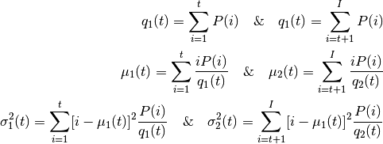
It actually finds a value of t which lies in between two peaks such that variances to both classes are minimum. It can be simply implemented in Python as follows:
img = cv2.imread('noisy2.png',0)
blur = cv2.GaussianBlur(img,(5,5),0)
# find normalized_histogram, and its cumulative distribution function
hist = cv2.calcHist([blur],[0],None,[256],[0,256])
hist_norm = hist.ravel()/hist.max()
Q = hist_norm.cumsum()
bins = np.arange(256)
fn_min = np.inf
thresh = -1
for i in xrange(1,256):
p1,p2 = np.hsplit(hist_norm,[i]) # probabilities
q1,q2 = Q[i],Q[255]-Q[i] # cum sum of classes
b1,b2 = np.hsplit(bins,[i]) # weights
# finding means and variances
m1,m2 = np.sum(p1*b1)/q1, np.sum(p2*b2)/q2
v1,v2 = np.sum(((b1-m1)**2)*p1)/q1,np.sum(((b2-m2)**2)*p2)/q2
# calculates the minimization function
fn = v1*q1 + v2*q2
if fn < fn_min:
fn_min = fn
thresh = i
# find otsu's threshold value with OpenCV function
ret, otsu = cv2.threshold(blur,0,255,cv2.THRESH_BINARY+cv2.THRESH_OTSU)
print thresh,ret
(Some of the functions may be new here, but we will cover them in coming chapters)
Additional Resources¶
- Digital Image Processing, Rafael C. Gonzalez
Exercises¶
- There are some optimizations available for Otsu’s binarization. You can search and implement it.
Geometric Transformations of Images¶
Goals¶
- Learn to apply different geometric transformation to images like translation, rotation, affine transformation etc.
- You will see these functions: cv2.getPerspectiveTransform
Transformations¶
OpenCV provides two transformation functions, cv2.warpAffine and cv2.warpPerspective, with which you can have all kinds of transformations. cv2.warpAffine takes a 2x3 transformation matrix while cv2.warpPerspective takes a 3x3 transformation matrix as input.
Scaling¶
Scaling is just resizing of the image. OpenCV comes with a function cv2.resize() for this purpose. The size of the image can be specified manually, or you can specify the scaling factor. Different interpolation methods are used. Preferable interpolation methods are cv2.INTER_AREA for shrinking and cv2.INTER_CUBIC (slow) & cv2.INTER_LINEAR for zooming. By default, interpolation method used is cv2.INTER_LINEAR for all resizing purposes. You can resize an input image either of following methods:
import cv2
import numpy as np
img = cv2.imread('messi5.jpg')
res = cv2.resize(img,None,fx=2, fy=2, interpolation = cv2.INTER_CUBIC)
#OR
height, width = img.shape[:2]
res = cv2.resize(img,(2*width, 2*height), interpolation = cv2.INTER_CUBIC)
Translation¶
Translation is the shifting of object’s location. If you know the shift in (x,y) direction, let it be 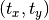, you can create the transformation matrix  as follows:
as follows:

You can take make it into a Numpy array of type np.float32 and pass it into cv2.warpAffine() function. See below example for a shift of (100,50):
import cv2
import numpy as np
img = cv2.imread('messi5.jpg',0)
rows,cols = img.shape
M = np.float32([[1,0,100],[0,1,50]])
dst = cv2.warpAffine(img,M,(cols,rows))
cv2.imshow('img',dst)
cv2.waitKey(0)
cv2.destroyAllWindows()
Warning
Third argument of the cv2.warpAffine() function is the size of the output image, which should be in the form of (width, height). Remember width = number of columns, and height = number of rows.
See the result below:

Rotation¶
Rotation of an image for an angle  is achieved by the transformation matrix of the form
is achieved by the transformation matrix of the form

But OpenCV provides scaled rotation with adjustable center of rotation so that you can rotate at any location you prefer. Modified transformation matrix is given by

where:

To find this transformation matrix, OpenCV provides a function, cv2.getRotationMatrix2D. Check below example which rotates the image by 90 degree with respect to center without any scaling.
img = cv2.imread('messi5.jpg',0)
rows,cols = img.shape
M = cv2.getRotationMatrix2D((cols/2,rows/2),90,1)
dst = cv2.warpAffine(img,M,(cols,rows))
See the result:

Affine Transformation¶
In affine transformation, all parallel lines in the original image will still be parallel in the output image. To find the transformation matrix, we need three points from input image and their corresponding locations in output image. Then cv2.getAffineTransform will create a 2x3 matrix which is to be passed to cv2.warpAffine.
Check below example, and also look at the points I selected (which are marked in Green color):
img = cv2.imread('drawing.png')
rows,cols,ch = img.shape
pts1 = np.float32([[50,50],[200,50],[50,200]])
pts2 = np.float32([[10,100],[200,50],[100,250]])
M = cv2.getAffineTransform(pts1,pts2)
dst = cv2.warpAffine(img,M,(cols,rows))
plt.subplot(121),plt.imshow(img),plt.title('Input')
plt.subplot(122),plt.imshow(dst),plt.title('Output')
plt.show()
See the result:

Perspective Transformation¶
For perspective transformation, you need a 3x3 transformation matrix. Straight lines will remain straight even after the transformation. To find this transformation matrix, you need 4 points on the input image and corresponding points on the output image. Among these 4 points, 3 of them should not be collinear. Then transformation matrix can be found by the function cv2.getPerspectiveTransform. Then apply cv2.warpPerspective with this 3x3 transformation matrix.
See the code below:
img = cv2.imread('sudokusmall.png')
rows,cols,ch = img.shape
pts1 = np.float32([[56,65],[368,52],[28,387],[389,390]])
pts2 = np.float32([[0,0],[300,0],[0,300],[300,300]])
M = cv2.getPerspectiveTransform(pts1,pts2)
dst = cv2.warpPerspective(img,M,(300,300))
plt.subplot(121),plt.imshow(img),plt.title('Input')
plt.subplot(122),plt.imshow(dst),plt.title('Output')
plt.show()
Result:

Additional Resources¶
- “Computer Vision: Algorithms and Applications”, Richard Szeliski
Exercises¶
Smoothing Images¶
Goals¶
- Learn to:
- Blur imagess with various low pass filters
- Apply custom-made filters to images (2D convolution)
2D Convolution ( Image Filtering )¶
As for one-dimensional signals, images also can be filtered with various low-pass filters (LPF), high-pass filters (HPF), etc. A LPF helps in removing noise, or blurring the image. A HPF filters helps in finding edges in an image.
OpenCV provides a function, cv2.filter2D(), to convolve a kernel with an image. As an example, we will try an averaging filter on an image. A 5x5 averaging filter kernel can be defined as follows:

Filtering with the above kernel results in the following being performed: for each pixel, a 5x5 window is centered on this pixel, all pixels falling within this window are summed up, and the result is then divided by 25. This equates to computing the average of the pixel values inside that window. This operation is performed for all the pixels in the image to produce the output filtered image. Try this code and check the result:
import cv2
import numpy as np
from matplotlib import pyplot as plt
img = cv2.imread('opencv_logo.png')
kernel = np.ones((5,5),np.float32)/25
dst = cv2.filter2D(img,-1,kernel)
plt.subplot(121),plt.imshow(img),plt.title('Original')
plt.xticks([]), plt.yticks([])
plt.subplot(122),plt.imshow(dst),plt.title('Averaging')
plt.xticks([]), plt.yticks([])
plt.show()
Result:

Image Blurring (Image Smoothing)¶
Image blurring is achieved by convolving the image with a low-pass filter kernel. It is useful for removing noise. It actually removes high frequency content (e.g: noise, edges) from the image resulting in edges being blurred when this is filter is applied. (Well, there are blurring techniques which do not blur edges). OpenCV provides mainly four types of blurring techniques.
1. Averaging¶
This is done by convolving the image with a normalized box filter. It simply takes the average of all the pixels under kernel area and replaces the central element with this average. This is done by the function cv2.blur() or cv2.boxFilter(). Check the docs for more details about the kernel. We should specify the width and height of kernel. A 3x3 normalized box filter would look like this:

Note
If you don’t want to use a normalized box filter, use cv2.boxFilter() and pass the argument normalize=False to the function.
Check the sample demo below with a kernel of 5x5 size:
import cv2
import numpy as np
from matplotlib import pyplot as plt
img = cv2.imread('opencv_logo.png')
blur = cv2.blur(img,(5,5))
plt.subplot(121),plt.imshow(img),plt.title('Original')
plt.xticks([]), plt.yticks([])
plt.subplot(122),plt.imshow(blur),plt.title('Blurred')
plt.xticks([]), plt.yticks([])
plt.show()
Result:

2. Gaussian Filtering¶
In this approach, instead of a box filter consisting of equal filter coefficients, a Gaussian kernel is used. It is done with the function, cv2.GaussianBlur(). We should specify the width and height of the kernel which should be positive and odd. We also should specify the standard deviation in the X and Y directions, sigmaX and sigmaY respectively. If only sigmaX is specified, sigmaY is taken as equal to sigmaX. If both are given as zeros, they are calculated from the kernel size. Gaussian filtering is highly effective in removing Gaussian noise from the image.
If you want, you can create a Gaussian kernel with the function, cv2.getGaussianKernel().
The above code can be modified for Gaussian blurring:
blur = cv2.GaussianBlur(img,(5,5),0)
Result:

3. Median Filtering¶
Here, the function cv2.medianBlur() computes the median of all the pixels under the kernel window and the central pixel is replaced with this median value. This is highly effective in removing salt-and-pepper noise. One interesting thing to note is that, in the Gaussian and box filters, the filtered value for the central element can be a value which may not exist in the original image. However this is not the case in median filtering, since the central element is always replaced by some pixel value in the image. This reduces the noise effectively. The kernel size must be a positive odd integer.
In this demo, we add a 50% noise to our original image and use a median filter. Check the result:
median = cv2.medianBlur(img,5)
Result:

4. Bilateral Filtering¶
As we noted, the filters we presented earlier tend to blur edges. This is not the case for the bilateral filter, cv2.bilateralFilter(), which was defined for, and is highly effective at noise removal while preserving edges. But the operation is slower compared to other filters. We already saw that a Gaussian filter takes the a neighborhood around the pixel and finds its Gaussian weighted average. This Gaussian filter is a function of space alone, that is, nearby pixels are considered while filtering. It does not consider whether pixels have almost the same intensity value and does not consider whether the pixel lies on an edge or not. The resulting effect is that Gaussian filters tend to blur edges, which is undesirable.
The bilateral filter also uses a Gaussian filter in the space domain, but it also uses one more (multiplicative) Gaussian filter component which is a function of pixel intensity differences. The Gaussian function of space makes sure that only pixels are ‘spatial neighbors’ are considered for filtering, while the Gaussian component applied in the intensity domain (a Gaussian function of intensity differences) ensures that only those pixels with intensities similar to that of the central pixel (‘intensity neighbors’) are included to compute the blurred intensity value. As a result, this method preserves edges, since for pixels lying near edges, neighboring pixels placed on the other side of the edge, and therefore exhibiting large intensity variations when compared to the central pixel, will not be included for blurring.
The sample below demonstrates the use of bilateral filtering (For details on arguments, see the OpenCV docs).
blur = cv2.bilateralFilter(img,9,75,75)
Result:

Note that the texture on the surface is gone, but edges are still preserved.
Additional Resources¶
- Details about the bilateral filtering can be found at
Exercises¶
Take an image, add Gaussian noise and salt and pepper noise, compare the effect of blurring via box, Gaussian, median and bilateral filters for both noisy images, as you change the level of noise.
Morphological Transformations¶
Goal¶
- In this chapter,
- We will learn different morphological operations like Erosion, Dilation, Opening, Closing etc.
- We will see different functions like : cv2.erode(), cv2.dilate(), cv2.morphologyEx() etc.
Theory¶
Morphological transformations are some simple operations based on the image shape. It is normally performed on binary images. It needs two inputs, one is our original image, second one is called structuring element or kernel which decides the nature of operation. Two basic morphological operators are Erosion and Dilation. Then its variant forms like Opening, Closing, Gradient etc also comes into play. We will see them one-by-one with help of following image:

1. Erosion¶
The basic idea of erosion is just like soil erosion only, it erodes away the boundaries of foreground object (Always try to keep foreground in white). So what does it do? The kernel slides through the image (as in 2D convolution). A pixel in the original image (either 1 or 0) will be considered 1 only if all the pixels under the kernel is 1, otherwise it is eroded (made to zero).
So what happends is that, all the pixels near boundary will be discarded depending upon the size of kernel. So the thickness or size of the foreground object decreases or simply white region decreases in the image. It is useful for removing small white noises (as we have seen in colorspace chapter), detach two connected objects etc.
Here, as an example, I would use a 5x5 kernel with full of ones. Let’s see it how it works:
import cv2
import numpy as np
img = cv2.imread('j.png',0)
kernel = np.ones((5,5),np.uint8)
erosion = cv2.erode(img,kernel,iterations = 1)
Result:

2. Dilation¶
It is just opposite of erosion. Here, a pixel element is ‘1’ if atleast one pixel under the kernel is ‘1’. So it increases the white region in the image or size of foreground object increases. Normally, in cases like noise removal, erosion is followed by dilation. Because, erosion removes white noises, but it also shrinks our object. So we dilate it. Since noise is gone, they won’t come back, but our object area increases. It is also useful in joining broken parts of an object.
dilation = cv2.dilate(img,kernel,iterations = 1)
Result:

3. Opening¶
Opening is just another name of erosion followed by dilation. It is useful in removing noise, as we explained above. Here we use the function, cv2.morphologyEx()
opening = cv2.morphologyEx(img, cv2.MORPH_OPEN, kernel)
Result:

4. Closing¶
Closing is reverse of Opening, Dilation followed by Erosion. It is useful in closing small holes inside the foreground objects, or small black points on the object.
closing = cv2.morphologyEx(img, cv2.MORPH_CLOSE, kernel)
Result:

5. Morphological Gradient¶
It is the difference between dilation and erosion of an image.
The result will look like the outline of the object.
gradient = cv2.morphologyEx(img, cv2.MORPH_GRADIENT, kernel)
Result:

6. Top Hat¶
It is the difference between input image and Opening of the image. Below example is done for a 9x9 kernel.
tophat = cv2.morphologyEx(img, cv2.MORPH_TOPHAT, kernel)
Result:

7. Black Hat¶
It is the difference between the closing of the input image and input image.
blackhat = cv2.morphologyEx(img, cv2.MORPH_BLACKHAT, kernel)
Result:

Structuring Element¶
We manually created a structuring elements in the previous examples with help of Numpy. It is rectangular shape. But in some cases, you may need elliptical/circular shaped kernels. So for this purpose, OpenCV has a function, cv2.getStructuringElement(). You just pass the shape and size of the kernel, you get the desired kernel.
# Rectangular Kernel
>>> cv2.getStructuringElement(cv2.MORPH_RECT,(5,5))
array([[1, 1, 1, 1, 1],
[1, 1, 1, 1, 1],
[1, 1, 1, 1, 1],
[1, 1, 1, 1, 1],
[1, 1, 1, 1, 1]], dtype=uint8)
# Elliptical Kernel
>>> cv2.getStructuringElement(cv2.MORPH_ELLIPSE,(5,5))
array([[0, 0, 1, 0, 0],
[1, 1, 1, 1, 1],
[1, 1, 1, 1, 1],
[1, 1, 1, 1, 1],
[0, 0, 1, 0, 0]], dtype=uint8)
# Cross-shaped Kernel
>>> cv2.getStructuringElement(cv2.MORPH_CROSS,(5,5))
array([[0, 0, 1, 0, 0],
[0, 0, 1, 0, 0],
[1, 1, 1, 1, 1],
[0, 0, 1, 0, 0],
[0, 0, 1, 0, 0]], dtype=uint8)
Additional Resources¶
- Morphological Operations at HIPR2
Exercises¶
Image Gradients¶
Goal¶
In this chapter, we will learn to:
- Find Image gradients, edges etc
- We will see following functions : cv2.Sobel(), cv2.Scharr(), cv2.Laplacian() etc
Theory¶
OpenCV provides three types of gradient filters or High-pass filters, Sobel, Scharr and Laplacian. We will see each one of them.
1. Sobel and Scharr Derivatives¶
Sobel operators is a joint Gausssian smoothing plus differentiation operation, so it is more resistant to noise. You can specify the direction of derivatives to be taken, vertical or horizontal (by the arguments, yorder and xorder respectively). You can also specify the size of kernel by the argument ksize. If ksize = -1, a 3x3 Scharr filter is used which gives better results than 3x3 Sobel filter. Please see the docs for kernels used.
2. Laplacian Derivatives¶
It calculates the Laplacian of the image given by the relation,  where each derivative is found using Sobel derivatives. If
where each derivative is found using Sobel derivatives. If ksize = 1, then following kernel is used for filtering:
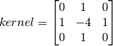
Code¶
Below code shows all operators in a single diagram. All kernels are of 5x5 size. Depth of output image is passed -1 to get the result in np.uint8 type.
import cv2
import numpy as np
from matplotlib import pyplot as plt
img = cv2.imread('dave.jpg',0)
laplacian = cv2.Laplacian(img,cv2.CV_64F)
sobelx = cv2.Sobel(img,cv2.CV_64F,1,0,ksize=5)
sobely = cv2.Sobel(img,cv2.CV_64F,0,1,ksize=5)
plt.subplot(2,2,1),plt.imshow(img,cmap = 'gray')
plt.title('Original'), plt.xticks([]), plt.yticks([])
plt.subplot(2,2,2),plt.imshow(laplacian,cmap = 'gray')
plt.title('Laplacian'), plt.xticks([]), plt.yticks([])
plt.subplot(2,2,3),plt.imshow(sobelx,cmap = 'gray')
plt.title('Sobel X'), plt.xticks([]), plt.yticks([])
plt.subplot(2,2,4),plt.imshow(sobely,cmap = 'gray')
plt.title('Sobel Y'), plt.xticks([]), plt.yticks([])
plt.show()
Result:

One Important Matter!¶
In our last example, output datatype is cv2.CV_8U or np.uint8. But there is a slight problem with that. Black-to-White transition is taken as Positive slope (it has a positive value) while White-to-Black transition is taken as a Negative slope (It has negative value). So when you convert data to np.uint8, all negative slopes are made zero. In simple words, you miss that edge.
If you want to detect both edges, better option is to keep the output datatype to some higher forms, like cv2.CV_16S, cv2.CV_64F etc, take its absolute value and then convert back to cv2.CV_8U. Below code demonstrates this procedure for a horizontal Sobel filter and difference in results.
import cv2
import numpy as np
from matplotlib import pyplot as plt
img = cv2.imread('box.png',0)
# Output dtype = cv2.CV_8U
sobelx8u = cv2.Sobel(img,cv2.CV_8U,1,0,ksize=5)
# Output dtype = cv2.CV_64F. Then take its absolute and convert to cv2.CV_8U
sobelx64f = cv2.Sobel(img,cv2.CV_64F,1,0,ksize=5)
abs_sobel64f = np.absolute(sobelx64f)
sobel_8u = np.uint8(abs_sobel64f)
plt.subplot(1,3,1),plt.imshow(img,cmap = 'gray')
plt.title('Original'), plt.xticks([]), plt.yticks([])
plt.subplot(1,3,2),plt.imshow(sobelx8u,cmap = 'gray')
plt.title('Sobel CV_8U'), plt.xticks([]), plt.yticks([])
plt.subplot(1,3,3),plt.imshow(sobel_8u,cmap = 'gray')
plt.title('Sobel abs(CV_64F)'), plt.xticks([]), plt.yticks([])
plt.show()
Check the result below:

Additional Resources¶
Exercises¶
Canny Edge Detection¶
Goal¶
In this chapter, we will learn about
- Concept of Canny edge detection
- OpenCV functions for that : cv2.Canny()
Theory¶
Canny Edge Detection is a popular edge detection algorithm. It was developed by John F. Canny in 1986. It is a multi-stage algorithm and we will go through each stages.
- Noise Reduction
Since edge detection is susceptible to noise in the image, first step is to remove the noise in the image with a 5x5 Gaussian filter. We have already seen this in previous chapters.
- Finding Intensity Gradient of the Image
Smoothened image is then filtered with a Sobel kernel in both horizontal and vertical direction to get first derivative in horizontal direction (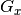) and vertical direction ( ). From these two images, we can find edge gradient and direction for each pixel as follows:
). From these two images, we can find edge gradient and direction for each pixel as follows:
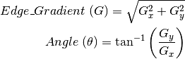
Gradient direction is always perpendicular to edges. It is rounded to one of four angles representing vertical, horizontal and two diagonal directions.
- Non-maximum Suppression
After getting gradient magnitude and direction, a full scan of image is done to remove any unwanted pixels which may not constitute the edge. For this, at every pixel, pixel is checked if it is a local maximum in its neighborhood in the direction of gradient. Check the image below:

Point A is on the edge ( in vertical direction). Gradient direction is normal to the edge. Point B and C are in gradient directions. So point A is checked with point B and C to see if it forms a local maximum. If so, it is considered for next stage, otherwise, it is suppressed ( put to zero).
In short, the result you get is a binary image with “thin edges”.
- Hysteresis Thresholding
This stage decides which are all edges are really edges and which are not. For this, we need two threshold values, minVal and maxVal. Any edges with intensity gradient more than maxVal are sure to be edges and those below minVal are sure to be non-edges, so discarded. Those who lie between these two thresholds are classified edges or non-edges based on their connectivity. If they are connected to “sure-edge” pixels, they are considered to be part of edges. Otherwise, they are also discarded. See the image below:

The edge A is above the maxVal, so considered as “sure-edge”. Although edge C is below maxVal, it is connected to edge A, so that also considered as valid edge and we get that full curve. But edge B, although it is above minVal and is in same region as that of edge C, it is not connected to any “sure-edge”, so that is discarded. So it is very important that we have to select minVal and maxVal accordingly to get the correct result.
This stage also removes small pixels noises on the assumption that edges are long lines.
So what we finally get is strong edges in the image.
Canny Edge Detection in OpenCV¶
OpenCV puts all the above in single function, cv2.Canny(). We will see how to use it. First argument is our input image. Second and third arguments are our minVal and maxVal respectively. Third argument is aperture_size. It is the size of Sobel kernel used for find image gradients. By default it is 3. Last argument is L2gradient which specifies the equation for finding gradient magnitude. If it is True, it uses the equation mentioned above which is more accurate, otherwise it uses this function:  . By default, it is
. By default, it is False.
import cv2
import numpy as np
from matplotlib import pyplot as plt
img = cv2.imread('messi5.jpg',0)
edges = cv2.Canny(img,100,200)
plt.subplot(121),plt.imshow(img,cmap = 'gray')
plt.title('Original Image'), plt.xticks([]), plt.yticks([])
plt.subplot(122),plt.imshow(edges,cmap = 'gray')
plt.title('Edge Image'), plt.xticks([]), plt.yticks([])
plt.show()
See the result below:

Additional Resources¶
- Canny edge detector at Wikipedia
- Canny Edge Detection Tutorial by Bill Green, 2002.
Exercises¶
- Write a small application to find the Canny edge detection whose threshold values can be varied using two trackbars. This way, you can understand the effect of threshold values.
Image Pyramids¶
Goal¶
- In this chapter,
- We will learn about Image Pyramids
- We will use Image pyramids to create a new fruit, “Orapple”
- We will see these functions: cv2.pyrUp(), cv2.pyrDown()
Theory¶
Normally, we used to work with an image of constant size. But in some occassions, we need to work with images of different resolution of the same image. For example, while searching for something in an image, like face, we are not sure at what size the object will be present in the image. In that case, we will need to create a set of images with different resolution and search for object in all the images. These set of images with different resolution are called Image Pyramids (because when they are kept in a stack with biggest image at bottom and smallest image at top look like a pyramid).
There are two kinds of Image Pyramids. 1) Gaussian Pyramid and 2) Laplacian Pyramids
Higher level (Low resolution) in a Gaussian Pyramid is formed by removing consecutive rows and columns in Lower level (higher resolution) image. Then each pixel in higher level is formed by the contribution from 5 pixels in underlying level with gaussian weights. By doing so, a  image becomes 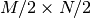 image. So area reduces to one-fourth of original area. It is called an Octave. The same pattern continues as we go upper in pyramid (ie, resolution decreases). Similarly while expanding, area becomes 4 times in each level. We can find Gaussian pyramids using cv2.pyrDown() and cv2.pyrUp() functions.
image becomes 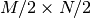 image. So area reduces to one-fourth of original area. It is called an Octave. The same pattern continues as we go upper in pyramid (ie, resolution decreases). Similarly while expanding, area becomes 4 times in each level. We can find Gaussian pyramids using cv2.pyrDown() and cv2.pyrUp() functions.
img = cv2.imread('messi5.jpg')
lower_reso = cv2.pyrDown(higher_reso)
Below is the 4 levels in an image pyramid.

Now you can go down the image pyramid with cv2.pyrUp() function.
higher_reso2 = cv2.pyrUp(lower_reso)
Remember, higher_reso2 is not equal to higher_reso, because once you decrease the resolution, you loose the information. Below image is 3 level down the pyramid created from smallest image in previous case. Compare it with original image:

Laplacian Pyramids are formed from the Gaussian Pyramids. There is no exclusive function for that. Laplacian pyramid images are like edge images only. Most of its elements are zeros. They are used in image compression. A level in Laplacian Pyramid is formed by the difference between that level in Gaussian Pyramid and expanded version of its upper level in Gaussian Pyramid. The three levels of a Laplacian level will look like below (contrast is adjusted to enhance the contents):

Image Blending using Pyramids¶
One application of Pyramids is Image Blending. For example, in image stitching, you will need to stack two images together, but it may not look good due to discontinuities between images. In that case, image blending with Pyramids gives you seamless blending without leaving much data in the images. One classical example of this is the blending of two fruits, Orange and Apple. See the result now itself to understand what I am saying:

Please check first reference in additional resources, it has full diagramatic details on image blending, Laplacian Pyramids etc. Simply it is done as follows:
- Load the two images of apple and orange
- Find the Gaussian Pyramids for apple and orange (in this particular example, number of levels is 6)
- From Gaussian Pyramids, find their Laplacian Pyramids
- Now join the left half of apple and right half of orange in each levels of Laplacian Pyramids
- Finally from this joint image pyramids, reconstruct the original image.
Below is the full code. (For sake of simplicity, each step is done separately which may take more memory. You can optimize it if you want so).
import cv2
import numpy as np,sys
A = cv2.imread('apple.jpg')
B = cv2.imread('orange.jpg')
# generate Gaussian pyramid for A
G = A.copy()
gpA = [G]
for i in xrange(6):
G = cv2.pyrDown(G)
gpA.append(G)
# generate Gaussian pyramid for B
G = B.copy()
gpB = [G]
for i in xrange(6):
G = cv2.pyrDown(G)
gpB.append(G)
# generate Laplacian Pyramid for A
lpA = [gpA[5]]
for i in xrange(5,0,-1):
GE = cv2.pyrUp(gpA[i])
L = cv2.subtract(gpA[i-1],GE)
lpA.append(L)
# generate Laplacian Pyramid for B
lpB = [gpB[5]]
for i in xrange(5,0,-1):
GE = cv2.pyrUp(gpB[i])
L = cv2.subtract(gpB[i-1],GE)
lpB.append(L)
# Now add left and right halves of images in each level
LS = []
for la,lb in zip(lpA,lpB):
rows,cols,dpt = la.shape
ls = np.hstack((la[:,0:cols/2], lb[:,cols/2:]))
LS.append(ls)
# now reconstruct
ls_ = LS[0]
for i in xrange(1,6):
ls_ = cv2.pyrUp(ls_)
ls_ = cv2.add(ls_, LS[i])
# image with direct connecting each half
real = np.hstack((A[:,:cols/2],B[:,cols/2:]))
cv2.imwrite('Pyramid_blending2.jpg',ls_)
cv2.imwrite('Direct_blending.jpg',real)
Additional Resources¶
Exercises¶
Contours in OpenCV¶
Learn to find and draw Contours

Learn to find different features of contours like area, perimeter, bounding rectangle etc.

Learn to find different properties of contours like Solidity, Mean Intensity etc.

Learn to find convexity defects, pointPolygonTest, match different shapes etc.

Learn about Contour Hierarchy

Contours : Getting Started¶
Goal¶
- Understand what contours are.
- Learn to find contours, draw contours etc
- You will see these functions : cv2.findContours(), cv2.drawContours()
What are contours?¶
Contours can be explained simply as a curve joining all the continuous points (along the boundary), having same color or intensity. The contours are a useful tool for shape analysis and object detection and recognition.
- For better accuracy, use binary images. So before finding contours, apply threshold or canny edge detection.
- findContours function modifies the source image. So if you want source image even after finding contours, already store it to some other variables.
- In OpenCV, finding contours is like finding white object from black background. So remember, object to be found should be white and background should be black.
Let’s see how to find contours of a binary image:
import numpy as np
import cv2
im = cv2.imread('test.jpg')
imgray = cv2.cvtColor(im,cv2.COLOR_BGR2GRAY)
ret,thresh = cv2.threshold(imgray,127,255,0)
image, contours, hierarchy = cv2.findContours(thresh,cv2.RETR_TREE,cv2.CHAIN_APPROX_SIMPLE)
See, there are three arguments in cv2.findContours() function, first one is source image, second is contour retrieval mode, third is contour approximation method. And it outputs the image, contours and hierarchy. contours is a Python list of all the contours in the image. Each individual contour is a Numpy array of (x,y) coordinates of boundary points of the object.
Note
We will discuss second and third arguments and about hierarchy in details later. Until then, the values given to them in code sample will work fine for all images.
How to draw the contours?¶
To draw the contours, cv2.drawContours function is used. It can also be used to draw any shape provided you have its boundary points. Its first argument is source image, second argument is the contours which should be passed as a Python list, third argument is index of contours (useful when drawing individual contour. To draw all contours, pass -1) and remaining arguments are color, thickness etc.
To draw all the contours in an image:
img = cv2.drawContours(img, contours, -1, (0,255,0), 3)
To draw an individual contour, say 4th contour:
img = cv2.drawContours(img, contours, 3, (0,255,0), 3)
But most of the time, below method will be useful:
cnt = contours[4]
img = cv2.drawContours(img, [cnt], 0, (0,255,0), 3)
Note
Last two methods are same, but when you go forward, you will see last one is more useful.
Contour Approximation Method¶
This is the third argument in cv2.findContours function. What does it denote actually?
Above, we told that contours are the boundaries of a shape with same intensity. It stores the (x,y) coordinates of the boundary of a shape. But does it store all the coordinates ? That is specified by this contour approximation method.
If you pass cv2.CHAIN_APPROX_NONE, all the boundary points are stored. But actually do we need all the points? For eg, you found the contour of a straight line. Do you need all the points on the line to represent that line? No, we need just two end points of that line. This is what cv2.CHAIN_APPROX_SIMPLE does. It removes all redundant points and compresses the contour, thereby saving memory.
Below image of a rectangle demonstrate this technique. Just draw a circle on all the coordinates in the contour array (drawn in blue color). First image shows points I got with cv2.CHAIN_APPROX_NONE (734 points) and second image shows the one with cv2.CHAIN_APPROX_SIMPLE (only 4 points). See, how much memory it saves!!!

Additional Resources¶
Exercises¶
Contour Features¶
Goal¶
In this article, we will learn
- To find the different features of contours, like area, perimeter, centroid, bounding box etc
- You will see plenty of functions related to contours.
1. Moments¶
Image moments help you to calculate some features like center of mass of the object, area of the object etc. Check out the wikipedia page on Image Moments
The function cv2.moments() gives a dictionary of all moment values calculated. See below:
import cv2
import numpy as np
img = cv2.imread('star.jpg',0)
ret,thresh = cv2.threshold(img,127,255,0)
contours,hierarchy = cv2.findContours(thresh, 1, 2)
cnt = contours[0]
M = cv2.moments(cnt)
print M
From this moments, you can extract useful data like area, centroid etc. Centroid is given by the relations,  and
and  . This can be done as follows:
. This can be done as follows:
cx = int(M['m10']/M['m00'])
cy = int(M['m01']/M['m00'])
2. Contour Area¶
Contour area is given by the function cv2.contourArea() or from moments, M[‘m00’].
area = cv2.contourArea(cnt)
3. Contour Perimeter¶
It is also called arc length. It can be found out using cv2.arcLength() function. Second argument specify whether shape is a closed contour (if passed True), or just a curve.
perimeter = cv2.arcLength(cnt,True)
4. Contour Approximation¶
It approximates a contour shape to another shape with less number of vertices depending upon the precision we specify. It is an implementation of Douglas-Peucker algorithm. Check the wikipedia page for algorithm and demonstration.
To understand this, suppose you are trying to find a square in an image, but due to some problems in the image, you didn’t get a perfect square, but a “bad shape” (As shown in first image below). Now you can use this function to approximate the shape. In this, second argument is called epsilon, which is maximum distance from contour to approximated contour. It is an accuracy parameter. A wise selection of epsilon is needed to get the correct output.
epsilon = 0.1*cv2.arcLength(cnt,True)
approx = cv2.approxPolyDP(cnt,epsilon,True)
Below, in second image, green line shows the approximated curve for epsilon = 10% of arc length. Third image shows the same for epsilon = 1% of the arc length. Third argument specifies whether curve is closed or not.

5. Convex Hull¶
Convex Hull will look similar to contour approximation, but it is not (Both may provide same results in some cases). Here, cv2.convexHull() function checks a curve for convexity defects and corrects it. Generally speaking, convex curves are the curves which are always bulged out, or at-least flat. And if it is bulged inside, it is called convexity defects. For example, check the below image of hand. Red line shows the convex hull of hand. The double-sided arrow marks shows the convexity defects, which are the local maximum deviations of hull from contours.

There is a little bit things to discuss about it its syntax:
hull = cv2.convexHull(points[, hull[, clockwise[, returnPoints]]
Arguments details:
- points are the contours we pass into.
- hull is the output, normally we avoid it.
- clockwise : Orientation flag. If it is
True, the output convex hull is oriented clockwise. Otherwise, it is oriented counter-clockwise.- returnPoints : By default,
True. Then it returns the coordinates of the hull points. IfFalse, it returns the indices of contour points corresponding to the hull points.
So to get a convex hull as in above image, following is sufficient:
hull = cv2.convexHull(cnt)
But if you want to find convexity defects, you need to pass returnPoints = False. To understand it, we will take the rectangle image above. First I found its contour as cnt. Now I found its convex hull with returnPoints = True, I got following values: [[[234 202]], [[ 51 202]], [[ 51 79]], [[234 79]]] which are the four corner points of rectangle. Now if do the same with returnPoints = False, I get following result: [[129],[ 67],[ 0],[142]]. These are the indices of corresponding points in contours. For eg, check the first value: cnt[129] = [[234, 202]] which is same as first result (and so on for others).
You will see it again when we discuss about convexity defects.
6. Checking Convexity¶
There is a function to check if a curve is convex or not, cv2.isContourConvex(). It just return whether True or False. Not a big deal.
k = cv2.isContourConvex(cnt)
7. Bounding Rectangle¶
There are two types of bounding rectangles.
It is a straight rectangle, it doesn’t consider the rotation of the object. So area of the bounding rectangle won’t be minimum. It is found by the function cv2.boundingRect().
Let (x,y) be the top-left coordinate of the rectangle and (w,h) be its width and height.
x,y,w,h = cv2.boundingRect(cnt)
img = cv2.rectangle(img,(x,y),(x+w,y+h),(0,255,0),2)
Here, bounding rectangle is drawn with minimum area, so it considers the rotation also. The function used is cv2.minAreaRect(). It returns a Box2D structure which contains following detals - ( top-left corner(x,y), (width, height), angle of rotation ). But to draw this rectangle, we need 4 corners of the rectangle. It is obtained by the function cv2.boxPoints()
rect = cv2.minAreaRect(cnt)
box = cv2.boxPoints(rect)
box = np.int0(box)
im = cv2.drawContours(im,[box],0,(0,0,255),2)
Both the rectangles are shown in a single image. Green rectangle shows the normal bounding rect. Red rectangle is the rotated rect.

8. Minimum Enclosing Circle¶
Next we find the circumcircle of an object using the function cv2.minEnclosingCircle(). It is a circle which completely covers the object with minimum area.
(x,y),radius = cv2.minEnclosingCircle(cnt)
center = (int(x),int(y))
radius = int(radius)
img = cv2.circle(img,center,radius,(0,255,0),2)

9. Fitting an Ellipse¶
Next one is to fit an ellipse to an object. It returns the rotated rectangle in which the ellipse is inscribed.
ellipse = cv2.fitEllipse(cnt)
im = cv2.ellipse(im,ellipse,(0,255,0),2)

10. Fitting a Line¶
Similarly we can fit a line to a set of points. Below image contains a set of white points. We can approximate a straight line to it.
rows,cols = img.shape[:2]
[vx,vy,x,y] = cv2.fitLine(cnt, cv2.DIST_L2,0,0.01,0.01)
lefty = int((-x*vy/vx) + y)
righty = int(((cols-x)*vy/vx)+y)
img = cv2.line(img,(cols-1,righty),(0,lefty),(0,255,0),2)

Additional Resources¶
Exercises¶
Contour Properties¶
Here we will learn to extract some frequently used properties of objects like Solidity, Equivalent Diameter, Mask image, Mean Intensity etc. More features can be found at Matlab regionprops documentation.
(NB : Centroid, Area, Perimeter etc also belong to this category, but we have seen it in last chapter)
1. Aspect Ratio¶
It is the ratio of width to height of bounding rect of the object.

x,y,w,h = cv2.boundingRect(cnt)
aspect_ratio = float(w)/h
2. Extent¶
Extent is the ratio of contour area to bounding rectangle area.
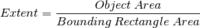
area = cv2.contourArea(cnt)
x,y,w,h = cv2.boundingRect(cnt)
rect_area = w*h
extent = float(area)/rect_area
3. Solidity¶
Solidity is the ratio of contour area to its convex hull area.

area = cv2.contourArea(cnt)
hull = cv2.convexHull(cnt)
hull_area = cv2.contourArea(hull)
solidity = float(area)/hull_area
4. Equivalent Diameter¶
Equivalent Diameter is the diameter of the circle whose area is same as the contour area.
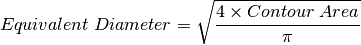
area = cv2.contourArea(cnt)
equi_diameter = np.sqrt(4*area/np.pi)
5. Orientation¶
Orientation is the angle at which object is directed. Following method also gives the Major Axis and Minor Axis lengths.
(x,y),(MA,ma),angle = cv2.fitEllipse(cnt)
6. Mask and Pixel Points¶
In some cases, we may need all the points which comprises that object. It can be done as follows:
mask = np.zeros(imgray.shape,np.uint8)
cv2.drawContours(mask,[cnt],0,255,-1)
pixelpoints = np.transpose(np.nonzero(mask))
#pixelpoints = cv2.findNonZero(mask)
Here, two methods, one using Numpy functions, next one using OpenCV function (last commented line) are given to do the same. Results are also same, but with a slight difference. Numpy gives coordinates in (row, column) format, while OpenCV gives coordinates in (x,y) format. So basically the answers will be interchanged. Note that, row = x and column = y.
7. Maximum Value, Minimum Value and their locations¶
We can find these parameters using a mask image.
min_val, max_val, min_loc, max_loc = cv2.minMaxLoc(imgray,mask = mask)
8. Mean Color or Mean Intensity¶
Here, we can find the average color of an object. Or it can be average intensity of the object in grayscale mode. We again use the same mask to do it.
mean_val = cv2.mean(im,mask = mask)
9. Extreme Points¶
Extreme Points means topmost, bottommost, rightmost and leftmost points of the object.
leftmost = tuple(cnt[cnt[:,:,0].argmin()][0])
rightmost = tuple(cnt[cnt[:,:,0].argmax()][0])
topmost = tuple(cnt[cnt[:,:,1].argmin()][0])
bottommost = tuple(cnt[cnt[:,:,1].argmax()][0])
For eg, if I apply it to an Indian map, I get the following result :

Additional Resources¶
Exercises¶
- There are still some features left in matlab regionprops doc. Try to implement them.
Contours : More Functions¶
Goal¶
- In this chapter, we will learn about
- Convexity defects and how to find them.
- Finding shortest distance from a point to a polygon
- Matching different shapes
Theory and Code¶
We saw what is convex hull in second chapter about contours. Any deviation of the object from this hull can be considered as convexity defect.
OpenCV comes with a ready-made function to find this, cv2.convexityDefects(). A basic function call would look like below:
hull = cv2.convexHull(cnt,returnPoints = False)
defects = cv2.convexityDefects(cnt,hull)
Note
Remember we have to pass returnPoints = False while finding convex hull, in order to find convexity defects.
It returns an array where each row contains these values - [ start point, end point, farthest point, approximate distance to farthest point ]. We can visualize it using an image. We draw a line joining start point and end point, then draw a circle at the farthest point. Remember first three values returned are indices of cnt. So we have to bring those values from cnt.
import cv2
import numpy as np
img = cv2.imread('star.jpg')
img_gray = cv2.cvtColor(img,cv2.COLOR_BGR2GRAY)
ret, thresh = cv2.threshold(img_gray, 127, 255,0)
contours,hierarchy = cv2.findContours(thresh,2,1)
cnt = contours[0]
hull = cv2.convexHull(cnt,returnPoints = False)
defects = cv2.convexityDefects(cnt,hull)
for i in range(defects.shape[0]):
s,e,f,d = defects[i,0]
start = tuple(cnt[s][0])
end = tuple(cnt[e][0])
far = tuple(cnt[f][0])
cv2.line(img,start,end,[0,255,0],2)
cv2.circle(img,far,5,[0,0,255],-1)
cv2.imshow('img',img)
cv2.waitKey(0)
cv2.destroyAllWindows()
And see the result:

This function finds the shortest distance between a point in the image and a contour. It returns the distance which is negative when point is outside the contour, positive when point is inside and zero if point is on the contour.
For example, we can check the point (50,50) as follows:
dist = cv2.pointPolygonTest(cnt,(50,50),True)
In the function, third argument is measureDist. If it is True, it finds the signed distance. If False, it finds whether the point is inside or outside or on the contour (it returns +1, -1, 0 respectively).
Note
If you don’t want to find the distance, make sure third argument is False, because, it is a time consuming process. So, making it False gives about 2-3X speedup.
OpenCV comes with a function cv2.matchShapes() which enables us to compare two shapes, or two contours and returns a metric showing the similarity. The lower the result, the better match it is. It is calculated based on the hu-moment values. Different measurement methods are explained in the docs.
import cv2
import numpy as np
img1 = cv2.imread('star.jpg',0)
img2 = cv2.imread('star2.jpg',0)
ret, thresh = cv2.threshold(img1, 127, 255,0)
ret, thresh2 = cv2.threshold(img2, 127, 255,0)
contours,hierarchy = cv2.findContours(thresh,2,1)
cnt1 = contours[0]
contours,hierarchy = cv2.findContours(thresh2,2,1)
cnt2 = contours[0]
ret = cv2.matchShapes(cnt1,cnt2,1,0.0)
print ret
I tried matching shapes with different shapes given below:

I got following results:
- Matching Image A with itself = 0.0
- Matching Image A with Image B = 0.001946
- Matching Image A with Image C = 0.326911
See, even image rotation doesn’t affect much on this comparison.
See also
Hu-Moments are seven moments invariant to translation, rotation and scale. Seventh one is skew-invariant. Those values can be found using cv2.HuMoments() function.
Additional Resources¶
Exercises¶
- Check the documentation for cv2.pointPolygonTest(), you can find a nice image in Red and Blue color. It represents the distance from all pixels to the white curve on it. All pixels inside curve is blue depending on the distance. Similarly outside points are red. Contour edges are marked with White. So problem is simple. Write a code to create such a representation of distance.
- Compare images of digits or letters using cv2.matchShapes(). ( That would be a simple step towards OCR )
Contours Hierarchy¶
Goal¶
This time, we learn about the hierarchy of contours, i.e. the parent-child relationship in Contours.
Theory¶
In the last few articles on contours, we have worked with several functions related to contours provided by OpenCV. But when we found the contours in image using cv2.findContours() function, we have passed an argument, Contour Retrieval Mode. We usually passed cv2.RETR_LIST or cv2.RETR_TREE and it worked nice. But what does it actually mean ?
Also, in the output, we got three arrays, first is the image, second is our contours, and one more output which we named as hierarchy (Please checkout the codes in previous articles). But we never used this hierarchy anywhere. Then what is this hierarchy and what is it for ? What is its relationship with the previous mentioned function argument ?
That is what we are going to deal in this article.
Normally we use the cv2.findContours() function to detect objects in an image, right ? Sometimes objects are in different locations. But in some cases, some shapes are inside other shapes. Just like nested figures. In this case, we call outer one as parent and inner one as child. This way, contours in an image has some relationship to each other. And we can specify how one contour is connected to each other, like, is it child of some other contour, or is it a parent etc. Representation of this relationship is called the Hierarchy.
Consider an example image below :

In this image, there are a few shapes which I have numbered from 0-5. 2 and 2a denotes the external and internal contours of the outermost box.
Here, contours 0,1,2 are external or outermost. We can say, they are in hierarchy-0 or simply they are in same hierarchy level.
Next comes contour-2a. It can be considered as a child of contour-2 (or in opposite way, contour-2 is parent of contour-2a). So let it be in hierarchy-1. Similarly contour-3 is child of contour-2 and it comes in next hierarchy. Finally contours 4,5 are the children of contour-3a, and they come in the last hierarchy level. From the way I numbered the boxes, I would say contour-4 is the first child of contour-3a (It can be contour-5 also).
I mentioned these things to understand terms like same hierarchy level, external contour, child contour, parent contour, first child etc. Now let’s get into OpenCV.
So each contour has its own information regarding what hierarchy it is, who is its child, who is its parent etc. OpenCV represents it as an array of four values : [Next, Previous, First_Child, Parent]
“Next denotes next contour at the same hierarchical level.”
For eg, take contour-0 in our picture. Who is next contour in its same level ? It is contour-1. So simply put Next = 1. Similarly for Contour-1, next is contour-2. So Next = 2.
What about contour-2? There is no next contour in the same level. So simply, put Next = -1. What about contour-4? It is in same level with contour-5. So its next contour is contour-5, so Next = 5.
“Previous denotes previous contour at the same hierarchical level.”
It is same as above. Previous contour of contour-1 is contour-0 in the same level. Similarly for contour-2, it is contour-1. And for contour-0, there is no previous, so put it as -1.
“First_Child denotes its first child contour.”
There is no need of any explanation. For contour-2, child is contour-2a. So it gets the corresponding index value of contour-2a. What about contour-3a? It has two children. But we take only first child. And it is contour-4. So First_Child = 4 for contour-3a.
“Parent denotes index of its parent contour.”
It is just opposite of First_Child. Both for contour-4 and contour-5, parent contour is contour-3a. For contour-3a, it is contour-3 and so on.
Note
If there is no child or parent, that field is taken as -1
So now we know about the hierarchy style used in OpenCV, we can check into Contour Retrieval Modes in OpenCV with the help of same image given above. ie what do flags like cv2.RETR_LIST, cv2.RETR_TREE, cv2.RETR_CCOMP, cv2.RETR_EXTERNAL etc mean?
Contour Retrieval Mode¶
This is the simplest of the four flags (from explanation point of view). It simply retrieves all the contours, but doesn’t create any parent-child relationship. Parents and kids are equal under this rule, and they are just contours. ie they all belongs to same hierarchy level.
So here, 3rd and 4th term in hierarchy array is always -1. But obviously, Next and Previous terms will have their corresponding values. Just check it yourself and verify it.
Below is the result I got, and each row is hierarchy details of corresponding contour. For eg, first row corresponds to contour 0. Next contour is contour 1. So Next = 1. There is no previous contour, so Previous = 0. And the remaining two, as told before, it is -1.
>>> hierarchy
array([[[ 1, -1, -1, -1],
[ 2, 0, -1, -1],
[ 3, 1, -1, -1],
[ 4, 2, -1, -1],
[ 5, 3, -1, -1],
[ 6, 4, -1, -1],
[ 7, 5, -1, -1],
[-1, 6, -1, -1]]])
This is the good choice to use in your code, if you are not using any hierarchy features.
If you use this flag, it returns only extreme outer flags. All child contours are left behind. We can say, under this law, Only the eldest in every family is taken care of. It doesn’t care about other members of the family :).
So, in our image, how many extreme outer contours are there? ie at hierarchy-0 level?. Only 3, ie contours 0,1,2, right? Now try to find the contours using this flag. Here also, values given to each element is same as above. Compare it with above result. Below is what I got :
>>> hierarchy
array([[[ 1, -1, -1, -1],
[ 2, 0, -1, -1],
[-1, 1, -1, -1]]])
You can use this flag if you want to extract only the outer contours. It might be useful in some cases.
This flag retrieves all the contours and arranges them to a 2-level hierarchy. ie external contours of the object (ie its boundary) are placed in hierarchy-1. And the contours of holes inside object (if any) is placed in hierarchy-2. If any object inside it, its contour is placed again in hierarchy-1 only. And its hole in hierarchy-2 and so on.
Just consider the image of a “big white zero” on a black background. Outer circle of zero belongs to first hierarchy, and inner circle of zero belongs to second hierarchy.
We can explain it with a simple image. Here I have labelled the order of contours in red color and the hierarchy they belongs to, in green color (either 1 or 2). The order is same as the order OpenCV detects contours.

So consider first contour, ie contour-0. It is hierarchy-1. It has two holes, contours 1&2, and they belong to hierarchy-2. So for contour-0, Next contour in same hierarchy level is contour-3. And there is no previous one. And its first is child is contour-1 in hierarchy-2. It has no parent, because it is in hierarchy-1. So its hierarchy array is [3,-1,1,-1]
Now take contour-1. It is in hierarchy-2. Next one in same hierarchy (under the parenthood of contour-1) is contour-2. No previous one. No child, but parent is contour-0. So array is [2,-1,-1,0].
Similarly contour-2 : It is in hierarchy-2. There is not next contour in same hierarchy under contour-0. So no Next. Previous is contour-1. No child, parent is contour-0. So array is [-1,1,-1,0].
Contour - 3 : Next in hierarchy-1 is contour-5. Previous is contour-0. Child is contour-4 and no parent. So array is [5,0,4,-1].
Contour - 4 : It is in hierarchy 2 under contour-3 and it has no sibling. So no next, no previous, no child, parent is contour-3. So array is [-1,-1,-1,3].
Remaining you can fill up. This is the final answer I got:
>>> hierarchy
array([[[ 3, -1, 1, -1],
[ 2, -1, -1, 0],
[-1, 1, -1, 0],
[ 5, 0, 4, -1],
[-1, -1, -1, 3],
[ 7, 3, 6, -1],
[-1, -1, -1, 5],
[ 8, 5, -1, -1],
[-1, 7, -1, -1]]])
And this is the final guy, Mr.Perfect. It retrieves all the contours and creates a full family hierarchy list. It even tells, who is the grandpa, father, son, grandson and even beyond... :).
For examle, I took above image, rewrite the code for cv2.RETR_TREE, reorder the contours as per the result given by OpenCV and analyze it. Again, red letters give the contour number and green letters give the hierarchy order.

Take contour-0 : It is in hierarchy-0. Next contour in same hierarchy is contour-7. No previous contours. Child is contour-1. And no parent. So array is [7,-1,1,-1].
Take contour-2 : It is in hierarchy-1. No contour in same level. No previous one. Child is contour-2. Parent is contour-0. So array is [-1,-1,2,0].
And remaining, try yourself. Below is the full answer:
>>> hierarchy
array([[[ 7, -1, 1, -1],
[-1, -1, 2, 0],
[-1, -1, 3, 1],
[-1, -1, 4, 2],
[-1, -1, 5, 3],
[ 6, -1, -1, 4],
[-1, 5, -1, 4],
[ 8, 0, -1, -1],
[-1, 7, -1, -1]]])
Additional Resources¶
Exercises¶
Histograms in OpenCV¶
Learn to find and draw Contours

Learn to Equalize Histograms to get better contrast for images

Learn to find and plot 2D Histograms

Learn histogram backprojection to segment colored objects

Histograms - 1 : Find, Plot, Analyze !!!¶
Goal¶
- Learn to
- Find histograms, using both OpenCV and Numpy functions
- Plot histograms, using OpenCV and Matplotlib functions
- You will see these functions : cv2.calcHist(), np.histogram() etc.
Theory¶
So what is histogram ? You can consider histogram as a graph or plot, which gives you an overall idea about the intensity distribution of an image. It is a plot with pixel values (ranging from 0 to 255, not always) in X-axis and corresponding number of pixels in the image on Y-axis.
It is just another way of understanding the image. By looking at the histogram of an image, you get intuition about contrast, brightness, intensity distribution etc of that image. Almost all image processing tools today, provides features on histogram. Below is an image from Cambridge in Color website, and I recommend you to visit the site for more details.

You can see the image and its histogram. (Remember, this histogram is drawn for grayscale image, not color image). Left region of histogram shows the amount of darker pixels in image and right region shows the amount of brighter pixels. From the histogram, you can see dark region is more than brighter region, and amount of midtones (pixel values in mid-range, say around 127) are very less.
Find Histogram¶
Now we have an idea on what is histogram, we can look into how to find this. Both OpenCV and Numpy come with in-built function for this. Before using those functions, we need to understand some terminologies related with histograms.
BINS :The above histogram shows the number of pixels for every pixel value, ie from 0 to 255. ie you need 256 values to show the above histogram. But consider, what if you need not find the number of pixels for all pixel values separately, but number of pixels in a interval of pixel values? say for example, you need to find the number of pixels lying between 0 to 15, then 16 to 31, ..., 240 to 255. You will need only 16 values to represent the histogram. And that is what is shown in example given in OpenCV Tutorials on histograms.
So what you do is simply split the whole histogram to 16 sub-parts and value of each sub-part is the sum of all pixel count in it. This each sub-part is called “BIN”. In first case, number of bins where 256 (one for each pixel) while in second case, it is only 16. BINS is represented by the term histSize in OpenCV docs.
DIMS : It is the number of parameters for which we collect the data. In this case, we collect data regarding only one thing, intensity value. So here it is 1.
RANGE : It is the range of intensity values you want to measure. Normally, it is [0,256], ie all intensity values.
So now we use cv2.calcHist() function to find the histogram. Let’s familiarize with the function and its parameters :
cv2.calcHist(images, channels, mask, histSize, ranges[, hist[, accumulate]])
- images : it is the source image of type uint8 or float32. it should be given in square brackets, ie, “[img]”.
- channels : it is also given in square brackets. It the index of channel for which we calculate histogram. For example, if input is grayscale image, its value is [0]. For color image, you can pass [0],[1] or [2] to calculate histogram of blue,green or red channel respectively.
- mask : mask image. To find histogram of full image, it is given as “None”. But if you want to find histogram of particular region of image, you have to create a mask image for that and give it as mask. (I will show an example later.)
- histSize : this represents our BIN count. Need to be given in square brackets. For full scale, we pass [256].
- ranges : this is our RANGE. Normally, it is [0,256].
So let’s start with a sample image. Simply load an image in grayscale mode and find its full histogram.
img = cv2.imread('home.jpg',0)
hist = cv2.calcHist([img],[0],None,[256],[0,256])
hist is a 256x1 array, each value corresponds to number of pixels in that image with its corresponding pixel value.
Numpy also provides you a function, np.histogram(). So instead of calcHist() function, you can try below line :
hist,bins = np.histogram(img.ravel(),256,[0,256])
hist is same as we calculated before. But bins will have 257 elements, because Numpy calculates bins as 0-0.99, 1-1.99, 2-2.99 etc. So final range would be 255-255.99. To represent that, they also add 256 at end of bins. But we don’t need that 256. Upto 255 is sufficient.
See also
Numpy has another function, np.bincount() which is much faster than (around 10X) np.histogram(). So for one-dimensional histograms, you can better try that. Don’t forget to set minlength = 256 in np.bincount. For example, hist = np.bincount(img.ravel(),minlength=256)
Note
OpenCV function is more faster than (around 40X) than np.histogram(). So stick with OpenCV function.
Now we should plot histograms, but how ?
Plotting Histograms¶
- There are two ways for this,
- Short Way : use Matplotlib plotting functions
- Long Way : use OpenCV drawing functions
Matplotlib comes with a histogram plotting function : matplotlib.pyplot.hist()
It directly finds the histogram and plot it. You need not use calcHist() or np.histogram() function to find the histogram. See the code below:
import cv2
import numpy as np
from matplotlib import pyplot as plt
img = cv2.imread('home.jpg',0)
plt.hist(img.ravel(),256,[0,256]); plt.show()
You will get a plot as below :

Or you can use normal plot of matplotlib, which would be good for BGR plot. For that, you need to find the histogram data first. Try below code:
import cv2
import numpy as np
from matplotlib import pyplot as plt
img = cv2.imread('home.jpg')
color = ('b','g','r')
for i,col in enumerate(color):
histr = cv2.calcHist([img],[i],None,[256],[0,256])
plt.plot(histr,color = col)
plt.xlim([0,256])
plt.show()
Result:

You can deduct from the above graph that, blue has some high value areas in the image (obviously it should be due to the sky)
Well, here you adjust the values of histograms along with its bin values to look like x,y coordinates so that you can draw it using cv2.line() or cv2.polyline() function to generate same image as above. This is already available with OpenCV-Python2 official samples. Check the Code
Application of Mask¶
We used cv2.calcHist() to find the histogram of the full image. What if you want to find histograms of some regions of an image? Just create a mask image with white color on the region you want to find histogram and black otherwise. Then pass this as the mask.
img = cv2.imread('home.jpg',0)
# create a mask
mask = np.zeros(img.shape[:2], np.uint8)
mask[100:300, 100:400] = 255
masked_img = cv2.bitwise_and(img,img,mask = mask)
# Calculate histogram with mask and without mask
# Check third argument for mask
hist_full = cv2.calcHist([img],[0],None,[256],[0,256])
hist_mask = cv2.calcHist([img],[0],mask,[256],[0,256])
plt.subplot(221), plt.imshow(img, 'gray')
plt.subplot(222), plt.imshow(mask,'gray')
plt.subplot(223), plt.imshow(masked_img, 'gray')
plt.subplot(224), plt.plot(hist_full), plt.plot(hist_mask)
plt.xlim([0,256])
plt.show()
See the result. In the histogram plot, blue line shows histogram of full image while green line shows histogram of masked region.

Additional Resources¶
Exercises¶
Histograms - 2: Histogram Equalization¶
Goal¶
In this section,
- We will learn the concepts of histogram equalization and use it to improve the contrast of our images.
Theory¶
Consider an image whose pixel values are confined to some specific range of values only. For eg, brighter image will have all pixels confined to high values. But a good image will have pixels from all regions of the image. So you need to stretch this histogram to either ends (as given in below image, from wikipedia) and that is what Histogram Equalization does (in simple words). This normally improves the contrast of the image.

I would recommend you to read the wikipedia page on Histogram Equalization for more details about it. It has a very good explanation with worked out examples, so that you would understand almost everything after reading that. Instead, here we will see its Numpy implementation. After that, we will see OpenCV function.
import cv2
import numpy as np
from matplotlib import pyplot as plt
img = cv2.imread('wiki.jpg',0)
hist,bins = np.histogram(img.flatten(),256,[0,256])
cdf = hist.cumsum()
cdf_normalized = cdf * hist.max()/ cdf.max()
plt.plot(cdf_normalized, color = 'b')
plt.hist(img.flatten(),256,[0,256], color = 'r')
plt.xlim([0,256])
plt.legend(('cdf','histogram'), loc = 'upper left')
plt.show()

You can see histogram lies in brighter region. We need the full spectrum. For that, we need a transformation function which maps the input pixels in brighter region to output pixels in full region. That is what histogram equalization does.
Now we find the minimum histogram value (excluding 0) and apply the histogram equalization equation as given in wiki page. But I have used here, the masked array concept array from Numpy. For masked array, all operations are performed on non-masked elements. You can read more about it from Numpy docs on masked arrays.
cdf_m = np.ma.masked_equal(cdf,0)
cdf_m = (cdf_m - cdf_m.min())*255/(cdf_m.max()-cdf_m.min())
cdf = np.ma.filled(cdf_m,0).astype('uint8')
Now we have the look-up table that gives us the information on what is the output pixel value for every input pixel value. So we just apply the transform.
img2 = cdf[img]
Now we calculate its histogram and cdf as before ( you do it) and result looks like below :

Another important feature is that, even if the image was a darker image (instead of a brighter one we used), after equalization we will get almost the same image as we got. As a result, this is used as a “reference tool” to make all images with same lighting conditions. This is useful in many cases. For example, in face recognition, before training the face data, the images of faces are histogram equalized to make them all with same lighting conditions.
Histograms Equalization in OpenCV¶
OpenCV has a function to do this, cv2.equalizeHist(). Its input is just grayscale image and output is our histogram equalized image.
Below is a simple code snippet showing its usage for same image we used :
img = cv2.imread('wiki.jpg',0)
equ = cv2.equalizeHist(img)
res = np.hstack((img,equ)) #stacking images side-by-side
cv2.imwrite('res.png',res)

So now you can take different images with different light conditions, equalize it and check the results.
Histogram equalization is good when histogram of the image is confined to a particular region. It won’t work good in places where there is large intensity variations where histogram covers a large region, ie both bright and dark pixels are present. Please check the SOF links in Additional Resources.
CLAHE (Contrast Limited Adaptive Histogram Equalization)¶
The first histogram equalization we just saw, considers the global contrast of the image. In many cases, it is not a good idea. For example, below image shows an input image and its result after global histogram equalization.

It is true that the background contrast has improved after histogram equalization. But compare the face of statue in both images. We lost most of the information there due to over-brightness. It is because its histogram is not confined to a particular region as we saw in previous cases (Try to plot histogram of input image, you will get more intuition).
So to solve this problem, adaptive histogram equalization is used. In this, image is divided into small blocks called “tiles” (tileSize is 8x8 by default in OpenCV). Then each of these blocks are histogram equalized as usual. So in a small area, histogram would confine to a small region (unless there is noise). If noise is there, it will be amplified. To avoid this, contrast limiting is applied. If any histogram bin is above the specified contrast limit (by default 40 in OpenCV), those pixels are clipped and distributed uniformly to other bins before applying histogram equalization. After equalization, to remove artifacts in tile borders, bilinear interpolation is applied.
Below code snippet shows how to apply CLAHE in OpenCV:
import numpy as np
import cv2
img = cv2.imread('tsukuba_l.png',0)
# create a CLAHE object (Arguments are optional).
clahe = cv2.createCLAHE(clipLimit=2.0, tileGridSize=(8,8))
cl1 = clahe.apply(img)
cv2.imwrite('clahe_2.jpg',cl1)
See the result below and compare it with results above, especially the statue region:

Additional Resources¶
- Wikipedia page on Histogram Equalization
- Masked Arrays in Numpy
Also check these SOF questions regarding contrast adjustment:
Exercises¶
Histograms - 3 : 2D Histograms¶
Goal¶
In this chapter, we will learn to find and plot 2D histograms. It will be helpful in coming chapters.
Introduction¶
In the first article, we calculated and plotted one-dimensional histogram. It is called one-dimensional because we are taking only one feature into our consideration, ie grayscale intensity value of the pixel. But in two-dimensional histograms, you consider two features. Normally it is used for finding color histograms where two features are Hue & Saturation values of every pixel.
There is a python sample in the official samples already for finding color histograms. We will try to understand how to create such a color histogram, and it will be useful in understanding further topics like Histogram Back-Projection.
2D Histogram in OpenCV¶
It is quite simple and calculated using the same function, cv2.calcHist(). For color histograms, we need to convert the image from BGR to HSV. (Remember, for 1D histogram, we converted from BGR to Grayscale). For 2D histograms, its parameters will be modified as follows:
- channels = [0,1] because we need to process both H and S plane.
- bins = [180,256] 180 for H plane and 256 for S plane.
- range = [0,180,0,256] Hue value lies between 0 and 180 & Saturation lies between 0 and 256.
Now check the code below:
import cv2
import numpy as np
img = cv2.imread('home.jpg')
hsv = cv2.cvtColor(img,cv2.COLOR_BGR2HSV)
hist = cv2.calcHist([hsv], [0, 1], None, [180, 256], [0, 180, 0, 256])
That’s it.
2D Histogram in Numpy¶
Numpy also provides a specific function for this : np.histogram2d(). (Remember, for 1D histogram we used np.histogram() ).
import cv2
import numpy as np
from matplotlib import pyplot as plt
img = cv2.imread('home.jpg')
hsv = cv2.cvtColor(img,cv2.COLOR_BGR2HSV)
hist, xbins, ybins = np.histogram2d(h.ravel(),s.ravel(),[180,256],[[0,180],[0,256]])
First argument is H plane, second one is the S plane, third is number of bins for each and fourth is their range.
Now we can check how to plot this color histogram.
Plotting 2D Histograms¶
The result we get is a two dimensional array of size 180x256. So we can show them as we do normally, using cv2.imshow() function. It will be a grayscale image and it won’t give much idea what colors are there, unless you know the Hue values of different colors.
We can use matplotlib.pyplot.imshow() function to plot 2D histogram with different color maps. It gives us much more better idea about the different pixel density. But this also, doesn’t gives us idea what color is there on a first look, unless you know the Hue values of different colors. Still I prefer this method. It is simple and better.
Note
While using this function, remember, interpolation flag should be nearest for better results.
Consider code:
import cv2
import numpy as np
from matplotlib import pyplot as plt
img = cv2.imread('home.jpg')
hsv = cv2.cvtColor(img,cv2.COLOR_BGR2HSV)
hist = cv2.calcHist( [hsv], [0, 1], None, [180, 256], [0, 180, 0, 256] )
plt.imshow(hist,interpolation = 'nearest')
plt.show()
Below is the input image and its color histogram plot. X axis shows S values and Y axis shows Hue.

In histogram, you can see some high values near H = 100 and S = 200. It corresponds to blue of sky. Similarly another peak can be seen near H = 25 and S = 100. It corresponds to yellow of the palace. You can verify it with any image editing tools like GIMP.
There is a sample code for color-histogram in OpenCV-Python2 samples. If you run the code, you can see the histogram shows the corresponding color also. Or simply it outputs a color coded histogram. Its result is very good (although you need to add extra bunch of lines).
In that code, the author created a color map in HSV. Then converted it into BGR. The resulting histogram image is multiplied with this color map. He also uses some preprocessing steps to remove small isolated pixels, resulting in a good histogram.
I leave it to the readers to run the code, analyze it and have your own hack arounds. Below is the output of that code for the same image as above:

You can clearly see in the histogram what colors are present, blue is there, yellow is there, and some white due to chessboard is there. Nice !!!
Additional Resources¶
Exercises¶
Histogram - 4 : Histogram Backprojection¶
Goal¶
In this chapter, we will learn about histogram backprojection.
Theory¶
It was proposed by Michael J. Swain , Dana H. Ballard in their paper Indexing via color histograms.
What is it actually in simple words? It is used for image segmentation or finding objects of interest in an image. In simple words, it creates an image of the same size (but single channel) as that of our input image, where each pixel corresponds to the probability of that pixel belonging to our object. In more simpler worlds, the output image will have our object of interest in more white compared to remaining part. Well, that is an intuitive explanation. (I can’t make it more simpler). Histogram Backprojection is used with camshift algorithm etc.
How do we do it ? We create a histogram of an image containing our object of interest (in our case, the ground, leaving player and other things). The object should fill the image as far as possible for better results. And a color histogram is preferred over grayscale histogram, because color of the object is more better way to define the object than its grayscale intensity. We then “back-project” this histogram over our test image where we need to find the object, ie in other words, we calculate the probability of every pixel belonging to the ground and show it. The resulting output on proper thresholding gives us the ground alone.
Algorithm in Numpy¶
1. First we need to calculate the color histogram of both the object we need to find (let it be ‘M’) and the image where we are going to search (let it be ‘I’).
import cv2
import numpy as np
from matplotlib import pyplot as plt
#roi is the object or region of object we need to find
roi = cv2.imread('rose_red.png')
hsv = cv2.cvtColor(roi,cv2.COLOR_BGR2HSV)
#target is the image we search in
target = cv2.imread('rose.png')
hsvt = cv2.cvtColor(target,cv2.COLOR_BGR2HSV)
# Find the histograms using calcHist. Can be done with np.histogram2d also
M = cv2.calcHist([hsv],[0, 1], None, [180, 256], [0, 180, 0, 256] )
I = cv2.calcHist([hsvt],[0, 1], None, [180, 256], [0, 180, 0, 256] )
2. Find the ratio 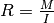. Then backproject R, ie use R as palette and create a new image with every pixel as its corresponding probability of being target. ie B(x,y) = R[h(x,y),s(x,y)] where h is hue and s is saturation of the pixel at (x,y). After that apply the condition ![B(x,y) = min[B(x,y), 1]](_images/math/903c944c75e80f10d9262a92130bda19bc1b1458.png) .
.
h,s,v = cv2.split(hsvt)
B = R[h.ravel(),s.ravel()]
B = np.minimum(B,1)
B = B.reshape(hsvt.shape[:2])
3. Now apply a convolution with a circular disc, 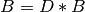, where D is the disc kernel.
disc = cv2.getStructuringElement(cv2.MORPH_ELLIPSE,(5,5))
cv2.filter2D(B,-1,disc,B)
B = np.uint8(B)
cv2.normalize(B,B,0,255,cv2.NORM_MINMAX)
4. Now the location of maximum intensity gives us the location of object. If we are expecting a region in the image, thresholding for a suitable value gives a nice result.
ret,thresh = cv2.threshold(B,50,255,0)
That’s it !!
Backprojection in OpenCV¶
OpenCV provides an inbuilt function cv2.calcBackProject(). Its parameters are almost same as the cv2.calcHist() function. One of its parameter is histogram which is histogram of the object and we have to find it. Also, the object histogram should be normalized before passing on to the backproject function. It returns the probability image. Then we convolve the image with a disc kernel and apply threshold. Below is my code and output :
import cv2
import numpy as np
roi = cv2.imread('rose_red.png')
hsv = cv2.cvtColor(roi,cv2.COLOR_BGR2HSV)
target = cv2.imread('rose.png')
hsvt = cv2.cvtColor(target,cv2.COLOR_BGR2HSV)
# calculating object histogram
roihist = cv2.calcHist([hsv],[0, 1], None, [180, 256], [0, 180, 0, 256] )
# normalize histogram and apply backprojection
cv2.normalize(roihist,roihist,0,255,cv2.NORM_MINMAX)
dst = cv2.calcBackProject([hsvt],[0,1],roihist,[0,180,0,256],1)
# Now convolute with circular disc
disc = cv2.getStructuringElement(cv2.MORPH_ELLIPSE,(5,5))
cv2.filter2D(dst,-1,disc,dst)
# threshold and binary AND
ret,thresh = cv2.threshold(dst,50,255,0)
thresh = cv2.merge((thresh,thresh,thresh))
res = cv2.bitwise_and(target,thresh)
res = np.vstack((target,thresh,res))
cv2.imwrite('res.jpg',res)
Below is one example I worked with. I used the region inside blue rectangle as sample object and I wanted to extract the full ground.

Additional Resources¶
- “Indexing via color histograms”, Swain, Michael J. , Third international conference on computer vision,1990.
Exercises¶
Image Transforms in OpenCV¶
Learn to find the Fourier Transform of images

Fourier Transform¶
Goal¶
- In this section, we will learn
- To find the Fourier Transform of images using OpenCV
- To utilize the FFT functions available in Numpy
- Some applications of Fourier Transform
- We will see following functions : cv2.dft(), cv2.idft() etc
Theory¶
Fourier Transform is used to analyze the frequency characteristics of various filters. For images, 2D Discrete Fourier Transform (DFT) is used to find the frequency domain. A fast algorithm called Fast Fourier Transform (FFT) is used for calculation of DFT. Details about these can be found in any image processing or signal processing textbooks. Please see Additional Resources section.
For a sinusoidal signal, 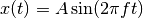, we can say  is the frequency of signal, and if its frequency domain is taken, we can see a spike at . If signal is sampled to form a discrete signal, we get the same frequency domain, but is periodic in the range 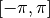 or
is the frequency of signal, and if its frequency domain is taken, we can see a spike at . If signal is sampled to form a discrete signal, we get the same frequency domain, but is periodic in the range 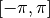 or ![[0,2\pi]](_images/math/afd1cc9f6085210dc7aea0e591b90df796cff56c.png) (or
(or ![[0,N]](_images/math/2efe13038e0b745725e05c174d88172d3b57de17.png) for N-point DFT). You can consider an image as a signal which is sampled in two directions. So taking fourier transform in both X and Y directions gives you the frequency representation of image.
for N-point DFT). You can consider an image as a signal which is sampled in two directions. So taking fourier transform in both X and Y directions gives you the frequency representation of image.
More intuitively, for the sinusoidal signal, if the amplitude varies so fast in short time, you can say it is a high frequency signal. If it varies slowly, it is a low frequency signal. You can extend the same idea to images. Where does the amplitude varies drastically in images ? At the edge points, or noises. So we can say, edges and noises are high frequency contents in an image. If there is no much changes in amplitude, it is a low frequency component. ( Some links are added to Additional Resources which explains frequency transform intuitively with examples).
Now we will see how to find the Fourier Transform.
Fourier Transform in Numpy¶
First we will see how to find Fourier Transform using Numpy. Numpy has an FFT package to do this. np.fft.fft2() provides us the frequency transform which will be a complex array. Its first argument is the input image, which is grayscale. Second argument is optional which decides the size of output array. If it is greater than size of input image, input image is padded with zeros before calculation of FFT. If it is less than input image, input image will be cropped. If no arguments passed, Output array size will be same as input.
Now once you got the result, zero frequency component (DC component) will be at top left corner. If you want to bring it to center, you need to shift the result by 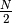 in both the directions. This is simply done by the function, np.fft.fftshift(). (It is more easier to analyze). Once you found the frequency transform, you can find the magnitude spectrum.
import cv2
import numpy as np
from matplotlib import pyplot as plt
img = cv2.imread('messi5.jpg',0)
f = np.fft.fft2(img)
fshift = np.fft.fftshift(f)
magnitude_spectrum = 20*np.log(np.abs(fshift))
plt.subplot(121),plt.imshow(img, cmap = 'gray')
plt.title('Input Image'), plt.xticks([]), plt.yticks([])
plt.subplot(122),plt.imshow(magnitude_spectrum, cmap = 'gray')
plt.title('Magnitude Spectrum'), plt.xticks([]), plt.yticks([])
plt.show()
Result look like below:

See, You can see more whiter region at the center showing low frequency content is more.
So you found the frequency transform Now you can do some operations in frequency domain, like high pass filtering and reconstruct the image, ie find inverse DFT. For that you simply remove the low frequencies by masking with a rectangular window of size 60x60. Then apply the inverse shift using np.fft.ifftshift() so that DC component again come at the top-left corner. Then find inverse FFT using np.ifft2() function. The result, again, will be a complex number. You can take its absolute value.
rows, cols = img.shape
crow,ccol = rows/2 , cols/2
fshift[crow-30:crow+30, ccol-30:ccol+30] = 0
f_ishift = np.fft.ifftshift(fshift)
img_back = np.fft.ifft2(f_ishift)
img_back = np.abs(img_back)
plt.subplot(131),plt.imshow(img, cmap = 'gray')
plt.title('Input Image'), plt.xticks([]), plt.yticks([])
plt.subplot(132),plt.imshow(img_back, cmap = 'gray')
plt.title('Image after HPF'), plt.xticks([]), plt.yticks([])
plt.subplot(133),plt.imshow(img_back)
plt.title('Result in JET'), plt.xticks([]), plt.yticks([])
plt.show()
Result look like below:

The result shows High Pass Filtering is an edge detection operation. This is what we have seen in Image Gradients chapter. This also shows that most of the image data is present in the Low frequency region of the spectrum. Anyway we have seen how to find DFT, IDFT etc in Numpy. Now let’s see how to do it in OpenCV.
If you closely watch the result, especially the last image in JET color, you can see some artifacts (One instance I have marked in red arrow). It shows some ripple like structures there, and it is called ringing effects. It is caused by the rectangular window we used for masking. This mask is converted to sinc shape which causes this problem. So rectangular windows is not used for filtering. Better option is Gaussian Windows.
Fourier Transform in OpenCV¶
OpenCV provides the functions cv2.dft() and cv2.idft() for this. It returns the same result as previous, but with two channels. First channel will have the real part of the result and second channel will have the imaginary part of the result. The input image should be converted to np.float32 first. We will see how to do it.
import numpy as np
import cv2
from matplotlib import pyplot as plt
img = cv2.imread('messi5.jpg',0)
dft = cv2.dft(np.float32(img),flags = cv2.DFT_COMPLEX_OUTPUT)
dft_shift = np.fft.fftshift(dft)
magnitude_spectrum = 20*np.log(cv2.magnitude(dft_shift[:,:,0],dft_shift[:,:,1]))
plt.subplot(121),plt.imshow(img, cmap = 'gray')
plt.title('Input Image'), plt.xticks([]), plt.yticks([])
plt.subplot(122),plt.imshow(magnitude_spectrum, cmap = 'gray')
plt.title('Magnitude Spectrum'), plt.xticks([]), plt.yticks([])
plt.show()
Note
You can also use cv2.cartToPolar() which returns both magnitude and phase in a single shot
So, now we have to do inverse DFT. In previous session, we created a HPF, this time we will see how to remove high frequency contents in the image, ie we apply LPF to image. It actually blurs the image. For this, we create a mask first with high value (1) at low frequencies, ie we pass the LF content, and 0 at HF region.
rows, cols = img.shape
crow,ccol = rows/2 , cols/2
# create a mask first, center square is 1, remaining all zeros
mask = np.zeros((rows,cols,2),np.uint8)
mask[crow-30:crow+30, ccol-30:ccol+30] = 1
# apply mask and inverse DFT
fshift = dft_shift*mask
f_ishift = np.fft.ifftshift(fshift)
img_back = cv2.idft(f_ishift)
img_back = cv2.magnitude(img_back[:,:,0],img_back[:,:,1])
plt.subplot(121),plt.imshow(img, cmap = 'gray')
plt.title('Input Image'), plt.xticks([]), plt.yticks([])
plt.subplot(122),plt.imshow(img_back, cmap = 'gray')
plt.title('Magnitude Spectrum'), plt.xticks([]), plt.yticks([])
plt.show()
See the result:

Note
As usual, OpenCV functions cv2.dft() and cv2.idft() are faster than Numpy counterparts. But Numpy functions are more user-friendly. For more details about performance issues, see below section.
Performance Optimization of DFT¶
Performance of DFT calculation is better for some array size. It is fastest when array size is power of two. The arrays whose size is a product of 2’s, 3’s, and 5’s are also processed quite efficiently. So if you are worried about the performance of your code, you can modify the size of the array to any optimal size (by padding zeros) before finding DFT. For OpenCV, you have to manually pad zeros. But for Numpy, you specify the new size of FFT calculation, and it will automatically pad zeros for you.
So how do we find this optimal size ? OpenCV provides a function, cv2.getOptimalDFTSize() for this. It is applicable to both cv2.dft() and np.fft.fft2(). Let’s check their performance using IPython magic command %timeit.
In [16]: img = cv2.imread('messi5.jpg',0)
In [17]: rows,cols = img.shape
In [18]: print rows,cols
342 548
In [19]: nrows = cv2.getOptimalDFTSize(rows)
In [20]: ncols = cv2.getOptimalDFTSize(cols)
In [21]: print nrows, ncols
360 576
See, the size (342,548) is modified to (360, 576). Now let’s pad it with zeros (for OpenCV) and find their DFT calculation performance. You can do it by creating a new big zero array and copy the data to it, or use cv2.copyMakeBorder().
nimg = np.zeros((nrows,ncols))
nimg[:rows,:cols] = img
OR:
right = ncols - cols
bottom = nrows - rows
bordertype = cv2.BORDER_CONSTANT #just to avoid line breakup in PDF file
nimg = cv2.copyMakeBorder(img,0,bottom,0,right,bordertype, value = 0)
Now we calculate the DFT performance comparison of Numpy function:
In [22]: %timeit fft1 = np.fft.fft2(img)
10 loops, best of 3: 40.9 ms per loop
In [23]: %timeit fft2 = np.fft.fft2(img,[nrows,ncols])
100 loops, best of 3: 10.4 ms per loop
It shows a 4x speedup. Now we will try the same with OpenCV functions.
In [24]: %timeit dft1= cv2.dft(np.float32(img),flags=cv2.DFT_COMPLEX_OUTPUT)
100 loops, best of 3: 13.5 ms per loop
In [27]: %timeit dft2= cv2.dft(np.float32(nimg),flags=cv2.DFT_COMPLEX_OUTPUT)
100 loops, best of 3: 3.11 ms per loop
It also shows a 4x speed-up. You can also see that OpenCV functions are around 3x faster than Numpy functions. This can be tested for inverse FFT also, and that is left as an exercise for you.
Why Laplacian is a High Pass Filter?¶
A similar question was asked in a forum. The question is, why Laplacian is a high pass filter? Why Sobel is a HPF? etc. And the first answer given to it was in terms of Fourier Transform. Just take the fourier transform of Laplacian for some higher size of FFT. Analyze it:
import cv2
import numpy as np
from matplotlib import pyplot as plt
# simple averaging filter without scaling parameter
mean_filter = np.ones((3,3))
# creating a guassian filter
x = cv2.getGaussianKernel(5,10)
gaussian = x*x.T
# different edge detecting filters
# scharr in x-direction
scharr = np.array([[-3, 0, 3],
[-10,0,10],
[-3, 0, 3]])
# sobel in x direction
sobel_x= np.array([[-1, 0, 1],
[-2, 0, 2],
[-1, 0, 1]])
# sobel in y direction
sobel_y= np.array([[-1,-2,-1],
[0, 0, 0],
[1, 2, 1]])
# laplacian
laplacian=np.array([[0, 1, 0],
[1,-4, 1],
[0, 1, 0]])
filters = [mean_filter, gaussian, laplacian, sobel_x, sobel_y, scharr]
filter_name = ['mean_filter', 'gaussian','laplacian', 'sobel_x', \
'sobel_y', 'scharr_x']
fft_filters = [np.fft.fft2(x) for x in filters]
fft_shift = [np.fft.fftshift(y) for y in fft_filters]
mag_spectrum = [np.log(np.abs(z)+1) for z in fft_shift]
for i in xrange(6):
plt.subplot(2,3,i+1),plt.imshow(mag_spectrum[i],cmap = 'gray')
plt.title(filter_name[i]), plt.xticks([]), plt.yticks([])
plt.show()
See the result:

From image, you can see what frequency region each kernel blocks, and what region it passes. From that information, we can say why each kernel is a HPF or a LPF
Additional Resources¶
Exercises¶
Template Matching¶
Goals¶
- In this chapter, you will learn
- To find objects in an image using Template Matching
- You will see these functions : cv2.matchTemplate(), cv2.minMaxLoc()
Theory¶
Template Matching is a method for searching and finding the location of a template image in a larger image. OpenCV comes with a function cv2.matchTemplate() for this purpose. It simply slides the template image over the input image (as in 2D convolution) and compares the template and patch of input image under the template image. Several comparison methods are implemented in OpenCV. (You can check docs for more details). It returns a grayscale image, where each pixel denotes how much does the neighbourhood of that pixel match with template.
If input image is of size (WxH) and template image is of size (wxh), output image will have a size of (W-w+1, H-h+1). Once you got the result, you can use cv2.minMaxLoc() function to find where is the maximum/minimum value. Take it as the top-left corner of rectangle and take (w,h) as width and height of the rectangle. That rectangle is your region of template.
Note
If you are using cv2.TM_SQDIFF as comparison method, minimum value gives the best match.
Template Matching in OpenCV¶
Here, as an example, we will search for Messi’s face in his photo. So I created a template as below:

We will try all the comparison methods so that we can see how their results look like:
import cv2
import numpy as np
from matplotlib import pyplot as plt
img = cv2.imread('messi5.jpg',0)
img2 = img.copy()
template = cv2.imread('template.jpg',0)
w, h = template.shape[::-1]
# All the 6 methods for comparison in a list
methods = ['cv2.TM_CCOEFF', 'cv2.TM_CCOEFF_NORMED', 'cv2.TM_CCORR',
'cv2.TM_CCORR_NORMED', 'cv2.TM_SQDIFF', 'cv2.TM_SQDIFF_NORMED']
for meth in methods:
img = img2.copy()
method = eval(meth)
# Apply template Matching
res = cv2.matchTemplate(img,template,method)
min_val, max_val, min_loc, max_loc = cv2.minMaxLoc(res)
# If the method is TM_SQDIFF or TM_SQDIFF_NORMED, take minimum
if method in [cv2.TM_SQDIFF, cv2.TM_SQDIFF_NORMED]:
top_left = min_loc
else:
top_left = max_loc
bottom_right = (top_left[0] + w, top_left[1] + h)
cv2.rectangle(img,top_left, bottom_right, 255, 2)
plt.subplot(121),plt.imshow(res,cmap = 'gray')
plt.title('Matching Result'), plt.xticks([]), plt.yticks([])
plt.subplot(122),plt.imshow(img,cmap = 'gray')
plt.title('Detected Point'), plt.xticks([]), plt.yticks([])
plt.suptitle(meth)
plt.show()
See the results below:
- cv2.TM_CCOEFF

- cv2.TM_CCOEFF_NORMED

- cv2.TM_CCORR

- cv2.TM_CCORR_NORMED

- cv2.TM_SQDIFF

- cv2.TM_SQDIFF_NORMED

You can see that the result using cv2.TM_CCORR is not good as we expected.
Template Matching with Multiple Objects¶
In the previous section, we searched image for Messi’s face, which occurs only once in the image. Suppose you are searching for an object which has multiple occurances, cv2.minMaxLoc() won’t give you all the locations. In that case, we will use thresholding. So in this example, we will use a screenshot of the famous game Mario and we will find the coins in it.
import cv2
import numpy as np
from matplotlib import pyplot as plt
img_rgb = cv2.imread('mario.png')
img_gray = cv2.cvtColor(img_rgb, cv2.COLOR_BGR2GRAY)
template = cv2.imread('mario_coin.png',0)
w, h = template.shape[::-1]
res = cv2.matchTemplate(img_gray,template,cv2.TM_CCOEFF_NORMED)
threshold = 0.8
loc = np.where( res >= threshold)
for pt in zip(*loc[::-1]):
cv2.rectangle(img_rgb, pt, (pt[0] + w, pt[1] + h), (0,0,255), 2)
cv2.imwrite('res.png',img_rgb)
Result:

Additional Resources¶
Exercises¶
Hough Line Transform¶
Goal¶
- In this chapter,
- We will understand the concept of Hough Tranform.
- We will see how to use it detect lines in an image.
- We will see following functions: cv2.HoughLines(), cv2.HoughLinesP()
Theory¶
Hough Transform is a popular technique to detect any shape, if you can represent that shape in mathematical form. It can detect the shape even if it is broken or distorted a little bit. We will see how it works for a line.
A line can be represented as 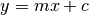 or in parametric form, as 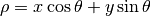 where  is the perpendicular distance from origin to the line, and is the angle formed by this perpendicular line and horizontal axis measured in counter-clockwise ( That direction varies on how you represent the coordinate system. This representation is used in OpenCV). Check below image:
is the perpendicular distance from origin to the line, and is the angle formed by this perpendicular line and horizontal axis measured in counter-clockwise ( That direction varies on how you represent the coordinate system. This representation is used in OpenCV). Check below image:

So if line is passing below the origin, it will have a positive rho and angle less than 180. If it is going above the origin, instead of taking angle greater than 180, angle is taken less than 180, and rho is taken negative. Any vertical line will have 0 degree and horizontal lines will have 90 degree.
Now let’s see how Hough Transform works for lines. Any line can be represented in these two terms,  . So first it creates a 2D array or accumulator (to hold values of two parameters) and it is set to 0 initially. Let rows denote the and columns denote the . Size of array depends on the accuracy you need. Suppose you want the accuracy of angles to be 1 degree, you need 180 columns. For , the maximum distance possible is the diagonal length of the image. So taking one pixel accuracy, number of rows can be diagonal length of the image.
. So first it creates a 2D array or accumulator (to hold values of two parameters) and it is set to 0 initially. Let rows denote the and columns denote the . Size of array depends on the accuracy you need. Suppose you want the accuracy of angles to be 1 degree, you need 180 columns. For , the maximum distance possible is the diagonal length of the image. So taking one pixel accuracy, number of rows can be diagonal length of the image.
Consider a 100x100 image with a horizontal line at the middle. Take the first point of the line. You know its (x,y) values. Now in the line equation, put the values 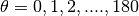 and check the you get. For every pair, you increment value by one in our accumulator in its corresponding cells. So now in accumulator, the cell (50,90) = 1 along with some other cells.
Now take the second point on the line. Do the same as above. Increment the the values in the cells corresponding to you got. This time, the cell (50,90) = 2. What you actually do is voting the values. You continue this process for every point on the line. At each point, the cell (50,90) will be incremented or voted up, while other cells may or may not be voted up. This way, at the end, the cell (50,90) will have maximum votes. So if you search the accumulator for maximum votes, you get the value (50,90) which says, there is a line in this image at distance 50 from origin and at angle 90 degrees. It is well shown in below animation (Image Courtesy: Amos Storkey )

This is how hough transform for lines works. It is simple, and may be you can implement it using Numpy on your own. Below is an image which shows the accumulator. Bright spots at some locations denotes they are the parameters of possible lines in the image. (Image courtesy: Wikipedia )

Hough Tranform in OpenCV¶
Everything explained above is encapsulated in the OpenCV function, cv2.HoughLines(). It simply returns an array of values. is measured in pixels and is measured in radians. First parameter, Input image should be a binary image, so apply threshold or use canny edge detection before finding applying hough transform. Second and third parameters are and accuracies respectively. Fourth argument is the threshold, which means minimum vote it should get for it to be considered as a line. Remember, number of votes depend upon number of points on the line. So it represents the minimum length of line that should be detected.
import cv2
import numpy as np
img = cv2.imread('dave.jpg')
gray = cv2.cvtColor(img,cv2.COLOR_BGR2GRAY)
edges = cv2.Canny(gray,50,150,apertureSize = 3)
lines = cv2.HoughLines(edges,1,np.pi/180,200)
for rho,theta in lines[0]:
a = np.cos(theta)
b = np.sin(theta)
x0 = a*rho
y0 = b*rho
x1 = int(x0 + 1000*(-b))
y1 = int(y0 + 1000*(a))
x2 = int(x0 - 1000*(-b))
y2 = int(y0 - 1000*(a))
cv2.line(img,(x1,y1),(x2,y2),(0,0,255),2)
cv2.imwrite('houghlines3.jpg',img)
Check the results below:

Probabilistic Hough Transform¶
In the hough transform, you can see that even for a line with two arguments, it takes a lot of computation. Probabilistic Hough Transform is an optimization of Hough Transform we saw. It doesn’t take all the points into consideration, instead take only a random subset of points and that is sufficient for line detection. Just we have to decrease the threshold. See below image which compare Hough Transform and Probabilistic Hough Transform in hough space. (Image Courtesy : Franck Bettinger’s home page

- OpenCV implementation is based on Robust Detection of Lines Using the Progressive Probabilistic Hough Transform by Matas, J. and Galambos, C. and Kittler, J.V.. The function used is cv2.HoughLinesP(). It has two new arguments.
- minLineLength - Minimum length of line. Line segments shorter than this are rejected.
- maxLineGap - Maximum allowed gap between line segments to treat them as single line.
Best thing is that, it directly returns the two endpoints of lines. In previous case, you got only the parameters of lines, and you had to find all the points. Here, everything is direct and simple.
import cv2
import numpy as np
img = cv2.imread('dave.jpg')
gray = cv2.cvtColor(img,cv2.COLOR_BGR2GRAY)
edges = cv2.Canny(gray,50,150,apertureSize = 3)
minLineLength = 100
maxLineGap = 10
lines = cv2.HoughLinesP(edges,1,np.pi/180,100,minLineLength,maxLineGap)
for x1,y1,x2,y2 in lines[0]:
cv2.line(img,(x1,y1),(x2,y2),(0,255,0),2)
cv2.imwrite('houghlines5.jpg',img)
See the results below:

Additional Resources¶
Exercises¶
Hough Circle Transform¶
Goal¶
- In this chapter,
- We will learn to use Hough Transform to find circles in an image.
- We will see these functions: cv2.HoughCircles()
Theory¶
A circle is represented mathematically as  where 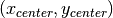 is the center of the circle, and
where 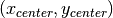 is the center of the circle, and  is the radius of the circle. From equation, we can see we have 3 parameters, so we need a 3D accumulator for hough transform, which would be highly ineffective. So OpenCV uses more trickier method, Hough Gradient Method which uses the gradient information of edges.
is the radius of the circle. From equation, we can see we have 3 parameters, so we need a 3D accumulator for hough transform, which would be highly ineffective. So OpenCV uses more trickier method, Hough Gradient Method which uses the gradient information of edges.
The function we use here is cv2.HoughCircles(). It has plenty of arguments which are well explained in the documentation. So we directly go to the code.
import cv2
import numpy as np
img = cv2.imread('opencv_logo.png',0)
img = cv2.medianBlur(img,5)
cimg = cv2.cvtColor(img,cv2.COLOR_GRAY2BGR)
circles = cv2.HoughCircles(img,cv2.HOUGH_GRADIENT,1,20,
param1=50,param2=30,minRadius=0,maxRadius=0)
circles = np.uint16(np.around(circles))
for i in circles[0,:]:
# draw the outer circle
cv2.circle(cimg,(i[0],i[1]),i[2],(0,255,0),2)
# draw the center of the circle
cv2.circle(cimg,(i[0],i[1]),2,(0,0,255),3)
cv2.imshow('detected circles',cimg)
cv2.waitKey(0)
cv2.destroyAllWindows()
Result is shown below:

Additional Resources¶
Exercises¶
Image Segmentation with Watershed Algorithm¶
Goal¶
- In this chapter,
- We will learn to use marker-based image segmentation using watershed algorithm
- We will see: cv2.watershed()
Theory¶
Any grayscale image can be viewed as a topographic surface where high intensity denotes peaks and hills while low intensity denotes valleys. You start filling every isolated valleys (local minima) with different colored water (labels). As the water rises, depending on the peaks (gradients) nearby, water from different valleys, obviously with different colors will start to merge. To avoid that, you build barriers in the locations where water merges. You continue the work of filling water and building barriers until all the peaks are under water. Then the barriers you created gives you the segmentation result. This is the “philosophy” behind the watershed. You can visit the CMM webpage on watershed to understand it with the help of some animations.
But this approach gives you oversegmented result due to noise or any other irregularities in the image. So OpenCV implemented a marker-based watershed algorithm where you specify which are all valley points are to be merged and which are not. It is an interactive image segmentation. What we do is to give different labels for our object we know. Label the region which we are sure of being the foreground or object with one color (or intensity), label the region which we are sure of being background or non-object with another color and finally the region which we are not sure of anything, label it with 0. That is our marker. Then apply watershed algorithm. Then our marker will be updated with the labels we gave, and the boundaries of objects will have a value of -1.
Code¶
Below we will see an example on how to use the Distance Transform along with watershed to segment mutually touching objects.
Consider the coins image below, the coins are touching each other. Even if you threshold it, it will be touching each other.

We start with finding an approximate estimate of the coins. For that, we can use the Otsu’s binarization.
import numpy as np
import cv2
from matplotlib import pyplot as plt
img = cv2.imread('coins.png')
gray = cv2.cvtColor(img,cv2.COLOR_BGR2GRAY)
ret, thresh = cv2.threshold(gray,0,255,cv2.THRESH_BINARY_INV+cv2.THRESH_OTSU)
Result:

Now we need to remove any small white noises in the image. For that we can use morphological opening. To remove any small holes in the object, we can use morphological closing. So, now we know for sure that region near to center of objects are foreground and region much away from the object are background. Only region we are not sure is the boundary region of coins.
So we need to extract the area which we are sure they are coins. Erosion removes the boundary pixels. So whatever remaining, we can be sure it is coin. That would work if objects were not touching each other. But since they are touching each other, another good option would be to find the distance transform and apply a proper threshold. Next we need to find the area which we are sure they are not coins. For that, we dilate the result. Dilation increases object boundary to background. This way, we can make sure whatever region in background in result is really a background, since boundary region is removed. See the image below.

The remaining regions are those which we don’t have any idea, whether it is coins or background. Watershed algorithm should find it. These areas are normally around the boundaries of coins where foreground and background meet (Or even two different coins meet). We call it border. It can be obtained from subtracting sure_fg area from sure_bg area.
# noise removal
kernel = np.ones((3,3),np.uint8)
opening = cv2.morphologyEx(thresh,cv2.MORPH_OPEN,kernel, iterations = 2)
# sure background area
sure_bg = cv2.dilate(opening,kernel,iterations=3)
# Finding sure foreground area
dist_transform = cv2.distanceTransform(opening,cv2.DIST_L2,5)
ret, sure_fg = cv2.threshold(dist_transform,0.7*dist_transform.max(),255,0)
# Finding unknown region
sure_fg = np.uint8(sure_fg)
unknown = cv2.subtract(sure_bg,sure_fg)
See the result. In the thresholded image, we get some regions of coins which we are sure of coins and they are detached now. (In some cases, you may be interested in only foreground segmentation, not in separating the mutually touching objects. In that case, you need not use distance transform, just erosion is sufficient. Erosion is just another method to extract sure foreground area, that’s all.)

Now we know for sure which are region of coins, which are background and all. So we create marker (it is an array of same size as that of original image, but with int32 datatype) and label the regions inside it. The regions we know for sure (whether foreground or background) are labelled with any positive integers, but different integers, and the area we don’t know for sure are just left as zero. For this we use cv2.connectedComponents(). It labels background of the image with 0, then other objects are labelled with integers starting from 1.
But we know that if background is marked with 0, watershed will consider it as unknown area. So we want to mark it with different integer. Instead, we will mark unknown region, defined by unknown, with 0.
# Marker labelling
ret, markers = cv2.connectedComponents(sure_fg)
# Add one to all labels so that sure background is not 0, but 1
markers = markers+1
# Now, mark the region of unknown with zero
markers[unknown==255] = 0
See the result shown in JET colormap. The dark blue region shows unknown region. Sure coins are colored with different values. Remaining area which are sure background are shown in lighter blue compared to unknown region.

Now our marker is ready. It is time for final step, apply watershed. Then marker image will be modified. The boundary region will be marked with -1.
markers = cv2.watershed(img,markers)
img[markers == -1] = [255,0,0]
See the result below. For some coins, the region where they touch are segmented properly and for some, they are not.

Additional Resources¶
- CMM page on Watershed Tranformation
Exercises¶
- OpenCV samples has an interactive sample on watershed segmentation, watershed.py. Run it, Enjoy it, then learn it.
Interactive Foreground Extraction using GrabCut Algorithm¶
Goal¶
- In this chapter
- We will see GrabCut algorithm to extract foreground in images
- We will create an interactive application for this.
Theory¶
GrabCut algorithm was designed by Carsten Rother, Vladimir Kolmogorov & Andrew Blake from Microsoft Research Cambridge, UK. in their paper, “GrabCut”: interactive foreground extraction using iterated graph cuts . An algorithm was needed for foreground extraction with minimal user interaction, and the result was GrabCut.
How it works from user point of view ? Initially user draws a rectangle around the foreground region (foreground region shoule be completely inside the rectangle). Then algorithm segments it iteratively to get the best result. Done. But in some cases, the segmentation won’t be fine, like, it may have marked some foreground region as background and vice versa. In that case, user need to do fine touch-ups. Just give some strokes on the images where some faulty results are there. Strokes basically says “Hey, this region should be foreground, you marked it background, correct it in next iteration” or its opposite for background. Then in the next iteration, you get better results.
See the image below. First player and football is enclosed in a blue rectangle. Then some final touchups with white strokes (denoting foreground) and black strokes (denoting background) is made. And we get a nice result.

So what happens in background ?
- User inputs the rectangle. Everything outside this rectangle will be taken as sure background (That is the reason it is mentioned before that your rectangle should include all the objects). Everything inside rectangle is unknown. Similarly any user input specifying foreground and background are considered as hard-labelling which means they won’t change in the process.
- Computer does an initial labelling depeding on the data we gave. It labels the foreground and background pixels (or it hard-labels)
- Now a Gaussian Mixture Model(GMM) is used to model the foreground and background.
- Depending on the data we gave, GMM learns and create new pixel distribution. That is, the unknown pixels are labelled either probable foreground or probable background depending on its relation with the other hard-labelled pixels in terms of color statistics (It is just like clustering).
- A graph is built from this pixel distribution. Nodes in the graphs are pixels. Additional two nodes are added, Source node and Sink node. Every foreground pixel is connected to Source node and every background pixel is connected to Sink node.
- The weights of edges connecting pixels to source node/end node are defined by the probability of a pixel being foreground/background. The weights between the pixels are defined by the edge information or pixel similarity. If there is a large difference in pixel color, the edge between them will get a low weight.
- Then a mincut algorithm is used to segment the graph. It cuts the graph into two separating source node and sink node with minimum cost function. The cost function is the sum of all weights of the edges that are cut. After the cut, all the pixels connected to Source node become foreground and those connected to Sink node become background.
- The process is continued until the classification converges.
It is illustrated in below image (Image Courtesy: http://www.cs.ru.ac.za/research/g02m1682/)

Demo¶
Now we go for grabcut algorithm with OpenCV. OpenCV has the function, cv2.grabCut() for this. We will see its arguments first:
- img - Input image
- mask - It is a mask image where we specify which areas are background, foreground or probable background/foreground etc. It is done by the following flags, cv2.GC_BGD, cv2.GC_FGD, cv2.GC_PR_BGD, cv2.GC_PR_FGD, or simply pass 0,1,2,3 to image.
- rect - It is the coordinates of a rectangle which includes the foreground object in the format (x,y,w,h)
- bdgModel, fgdModel - These are arrays used by the algorithm internally. You just create two np.float64 type zero arrays of size (1,65).
- iterCount - Number of iterations the algorithm should run.
- mode - It should be cv2.GC_INIT_WITH_RECT or cv2.GC_INIT_WITH_MASK or combined which decides whether we are drawing rectangle or final touchup strokes.
First let’s see with rectangular mode. We load the image, create a similar mask image. We create fgdModel and bgdModel. We give the rectangle parameters. It’s all straight-forward. Let the algorithm run for 5 iterations. Mode should be cv2.GC_INIT_WITH_RECT since we are using rectangle. Then run the grabcut. It modifies the mask image. In the new mask image, pixels will be marked with four flags denoting background/foreground as specified above. So we modify the mask such that all 0-pixels and 2-pixels are put to 0 (ie background) and all 1-pixels and 3-pixels are put to 1(ie foreground pixels). Now our final mask is ready. Just multiply it with input image to get the segmented image.
import numpy as np
import cv2
from matplotlib import pyplot as plt
img = cv2.imread('messi5.jpg')
mask = np.zeros(img.shape[:2],np.uint8)
bgdModel = np.zeros((1,65),np.float64)
fgdModel = np.zeros((1,65),np.float64)
rect = (50,50,450,290)
cv2.grabCut(img,mask,rect,bgdModel,fgdModel,5,cv2.GC_INIT_WITH_RECT)
mask2 = np.where((mask==2)|(mask==0),0,1).astype('uint8')
img = img*mask2[:,:,np.newaxis]
plt.imshow(img),plt.colorbar(),plt.show()
See the results below:

Oops, Messi’s hair is gone. Who likes Messi without his hair? We need to bring it back. So we will give there a fine touchup with 1-pixel (sure foreground). At the same time, Some part of ground has come to picture which we don’t want, and also some logo. We need to remove them. There we give some 0-pixel touchup (sure background). So we modify our resulting mask in previous case as we told now.
What I actually did is that, I opened input image in paint application and added another layer to the image. Using brush tool in the paint, I marked missed foreground (hair, shoes, ball etc) with white and unwanted background (like logo, ground etc) with black on this new layer. Then filled remaining background with gray. Then loaded that mask image in OpenCV, edited original mask image we got with corresponding values in newly added mask image. Check the code below:
# newmask is the mask image I manually labelled
newmask = cv2.imread('newmask.png',0)
# whereever it is marked white (sure foreground), change mask=1
# whereever it is marked black (sure background), change mask=0
mask[newmask == 0] = 0
mask[newmask == 255] = 1
mask, bgdModel, fgdModel = cv2.grabCut(img,mask,None,bgdModel,fgdModel,5,cv2.GC_INIT_WITH_MASK)
mask = np.where((mask==2)|(mask==0),0,1).astype('uint8')
img = img*mask[:,:,np.newaxis]
plt.imshow(img),plt.colorbar(),plt.show()
See the result below:

So that’s it. Here instead of initializing in rect mode, you can directly go into mask mode. Just mark the rectangle area in mask image with 2-pixel or 3-pixel (probable background/foreground). Then mark our sure_foreground with 1-pixel as we did in second example. Then directly apply the grabCut function with mask mode.
Additional Resources¶
Exercises¶
- OpenCV samples contain a sample
grabcut.pywhich is an interactive tool using grabcut. Check it. Also watch this youtube video on how to use it. - Here, you can make this into a interactive sample with drawing rectangle and strokes with mouse, create trackbar to adjust stroke width etc.
Feature Detection and Description¶
What are the main features in an image? How can finding those features be useful to us?
Okay, Corners are good features? But how do we find them?
We will look into Shi-Tomasi corner detection
Harris corner detector is not good enough when scale of image changes. Lowe developed a breakthrough method to find scale-invariant features and it is called SIFT
SIFT is really good, but not fast enough, so people came up with a speeded-up version called SURF.
All the above feature detection methods are good in some way. But they are not fast enough to work in real-time applications like SLAM. There comes the FAST algorithm, which is really “FAST”.
SIFT uses a feature descriptor with 128 floating point numbers. Consider thousands of such features. It takes lots of memory and more time for matching. We can compress it to make it faster. But still we have to calculate it first. There comes BRIEF which gives the shortcut to find binary descriptors with less memory, faster matching, still higher recognition rate.

SIFT and SURF are good in what they do, but what if you have to pay a few dollars every year to use them in your applications? Yeah, they are patented!!! To solve that problem, OpenCV devs came up with a new “FREE” alternative to SIFT & SURF, and that is ORB.

We know a great deal about feature detectors and descriptors. It is time to learn how to match different descriptors. OpenCV provides two techniques, Brute-Force matcher and FLANN based matcher.

Now we know about feature matching. Let’s mix it up with calib3d module to find objects in a complex image.
Understanding Features¶
Goal¶
In this chapter, we will just try to understand what are features, why are they important, why corners are important etc.
Explanation¶
Most of you will have played the jigsaw puzzle games. You get a lot of small pieces of a images, where you need to assemble them correctly to form a big real image. The question is, how you do it? What about the projecting the same theory to a computer program so that computer can play jigsaw puzzles? If the computer can play jigsaw puzzles, why can’t we give a lot of real-life images of a good natural scenery to computer and tell it to stitch all those images to a big single image? If the computer can stitch several natural images to one, what about giving a lot of pictures of a building or any structure and tell computer to create a 3D model out of it?
Well, the questions and imaginations continue. But it all depends on the most basic question? How do you play jigsaw puzzles? How do you arrange lots of scrambled image pieces into a big single image? How can you stitch a lot of natural images to a single image?
The answer is, we are looking for specific patterns or specific features which are unique, which can be easily tracked, which can be easily compared. If we go for a definition of such a feature, we may find it difficult to express it in words, but we know what are they. If some one asks you to point out one good feature which can be compared across several images, you can point out one. That is why, even small children can simply play these games. We search for these features in an image, we find them, we find the same features in other images, we align them. That’s it. (In jigsaw puzzle, we look more into continuity of different images). All these abilities are present in us inherently.
So our one basic question expands to more in number, but becomes more specific. What are these features?. (The answer should be understandable to a computer also.)
Well, it is difficult to say how humans find these features. It is already programmed in our brain. But if we look deep into some pictures and search for different patterns, we will find something interesting. For example, take below image:

Image is very simple. At the top of image, six small image patches are given. Question for you is to find the exact location of these patches in the original image. How many correct results you can find ?
A and B are flat surfaces, and they are spread in a lot of area. It is difficult to find the exact location of these patches.
C and D are much more simpler. They are edges of the building. You can find an approximate location, but exact location is still difficult. It is because, along the edge, it is same everywhere. Normal to the edge, it is different. So edge is much more better feature compared to flat area, but not good enough (It is good in jigsaw puzzle for comparing continuity of edges).
Finally, E and F are some corners of the building. And they can be easily found out. Because at corners, wherever you move this patch, it will look different. So they can be considered as a good feature. So now we move into more simpler (and widely used image) for better understanding.

Just like above, blue patch is flat area and difficult to find and track. Wherever you move the blue patch, it looks the same. For black patch, it is an edge. If you move it in vertical direction (i.e. along the gradient) it changes. Put along the edge (parallel to edge), it looks the same. And for red patch, it is a corner. Wherever you move the patch, it looks different, means it is unique. So basically, corners are considered to be good features in an image. (Not just corners, in some cases blobs are considered good features).
So now we answered our question, “what are these features?”. But next question arises. How do we find them? Or how do we find the corners?. That also we answered in an intuitive way, i.e., look for the regions in images which have maximum variation when moved (by a small amount) in all regions around it. This would be projected into computer language in coming chapters. So finding these image features is called Feature Detection.
So we found the features in image (Assume you did it). Once you found it, you should find the same in the other images. What we do? We take a region around the feature, we explain it in our own words, like “upper part is blue sky, lower part is building region, on that building there are some glasses etc” and you search for the same area in other images. Basically, you are describing the feature. Similar way, computer also should describe the region around the feature so that it can find it in other images. So called description is called Feature Description. Once you have the features and its description, you can find same features in all images and align them, stitch them or do whatever you want.
So in this module, we are looking to different algorithms in OpenCV to find features, describe them, match them etc.
Additional Resources¶
Exercises¶
Harris Corner Detection¶
Goal¶
In this chapter,
- We will understand the concepts behind Harris Corner Detection.
- We will see the functions: cv2.cornerHarris(), cv2.cornerSubPix()
Theory¶
In last chapter, we saw that corners are regions in the image with large variation in intensity in all the directions. One early attempt to find these corners was done by Chris Harris & Mike Stephens in their paper A Combined Corner and Edge Detector in 1988, so now it is called Harris Corner Detector. He took this simple idea to a mathematical form. It basically finds the difference in intensity for a displacement of  in all directions. This is expressed as below:
in all directions. This is expressed as below:
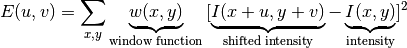
Window function is either a rectangular window or gaussian window which gives weights to pixels underneath.
We have to maximize this function  for corner detection. That means, we have to maximize the second term. Applying Taylor Expansion to above equation and using some mathematical steps (please refer any standard text books you like for full derivation), we get the final equation as:
for corner detection. That means, we have to maximize the second term. Applying Taylor Expansion to above equation and using some mathematical steps (please refer any standard text books you like for full derivation), we get the final equation as:

where
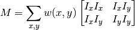
Here,  and 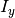 are image derivatives in x and y directions respectively. (Can be easily found out using cv2.Sobel()).
and 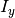 are image derivatives in x and y directions respectively. (Can be easily found out using cv2.Sobel()).
Then comes the main part. After this, they created a score, basically an equation, which will determine if a window can contain a corner or not.
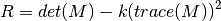
- where
- 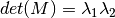
- 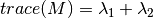
 and
and  are the eigen values of M
are the eigen values of M
So the values of these eigen values decide whether a region is corner, edge or flat.
- When 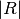 is small, which happens when
- When 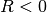, which happens when 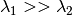 or vice versa, the region is edge.
- When
is large, which happens when
, the region is a corner.
It can be represented in a nice picture as follows:

So the result of Harris Corner Detection is a grayscale image with these scores. Thresholding for a suitable give you the corners in the image. We will do it with a simple image.
Harris Corner Detector in OpenCV¶
OpenCV has the function cv2.cornerHarris() for this purpose. Its arguments are :
- img - Input image, it should be grayscale and float32 type.
- blockSize - It is the size of neighbourhood considered for corner detection
- ksize - Aperture parameter of Sobel derivative used.
- k - Harris detector free parameter in the equation.
See the example below:
import cv2
import numpy as np
filename = 'chessboard.jpg'
img = cv2.imread(filename)
gray = cv2.cvtColor(img,cv2.COLOR_BGR2GRAY)
gray = np.float32(gray)
dst = cv2.cornerHarris(gray,2,3,0.04)
#result is dilated for marking the corners, not important
dst = cv2.dilate(dst,None)
# Threshold for an optimal value, it may vary depending on the image.
img[dst>0.01*dst.max()]=[0,0,255]
cv2.imshow('dst',img)
if cv2.waitKey(0) & 0xff == 27:
cv2.destroyAllWindows()
Below are the three results:

Corner with SubPixel Accuracy¶
Sometimes, you may need to find the corners with maximum accuracy. OpenCV comes with a function cv2.cornerSubPix() which further refines the corners detected with sub-pixel accuracy. Below is an example. As usual, we need to find the harris corners first. Then we pass the centroids of these corners (There may be a bunch of pixels at a corner, we take their centroid) to refine them. Harris corners are marked in red pixels and refined corners are marked in green pixels. For this function, we have to define the criteria when to stop the iteration. We stop it after a specified number of iteration or a certain accuracy is achieved, whichever occurs first. We also need to define the size of neighbourhood it would search for corners.
import cv2
import numpy as np
filename = 'chessboard2.jpg'
img = cv2.imread(filename)
gray = cv2.cvtColor(img,cv2.COLOR_BGR2GRAY)
# find Harris corners
gray = np.float32(gray)
dst = cv2.cornerHarris(gray,2,3,0.04)
dst = cv2.dilate(dst,None)
ret, dst = cv2.threshold(dst,0.01*dst.max(),255,0)
dst = np.uint8(dst)
# find centroids
ret, labels, stats, centroids = cv2.connectedComponentsWithStats(dst)
# define the criteria to stop and refine the corners
criteria = (cv2.TERM_CRITERIA_EPS + cv2.TERM_CRITERIA_MAX_ITER, 100, 0.001)
corners = cv2.cornerSubPix(gray,np.float32(centroids),(5,5),(-1,-1),criteria)
# Now draw them
res = np.hstack((centroids,corners))
res = np.int0(res)
img[res[:,1],res[:,0]]=[0,0,255]
img[res[:,3],res[:,2]] = [0,255,0]
cv2.imwrite('subpixel5.png',img)
Below is the result, where some important locations are shown in zoomed window to visualize:
Additional Resources¶
Exercises¶
Shi-Tomasi Corner Detector & Good Features to Track¶
Goal¶
In this chapter,
- We will learn about the another corner detector: Shi-Tomasi Corner Detector
- We will see the function: cv2.goodFeaturesToTrack()
Theory¶
In last chapter, we saw Harris Corner Detector. Later in 1994, J. Shi and C. Tomasi made a small modification to it in their paper Good Features to Track which shows better results compared to Harris Corner Detector. The scoring function in Harris Corner Detector was given by:

Instead of this, Shi-Tomasi proposed:

If it is a greater than a threshold value, it is considered as a corner. If we plot it in 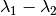 space as we did in Harris Corner Detector, we get an image as below:

From the figure, you can see that only when and are above a minimum value,  , it is conidered as a corner(green region).
, it is conidered as a corner(green region).
Code¶
OpenCV has a function, cv2.goodFeaturesToTrack(). It finds N strongest corners in the image by Shi-Tomasi method (or Harris Corner Detection, if you specify it). As usual, image should be a grayscale image. Then you specify number of corners you want to find. Then you specify the quality level, which is a value between 0-1, which denotes the minimum quality of corner below which everyone is rejected. Then we provide the minimum euclidean distance between corners detected.
With all these informations, the function finds corners in the image. All corners below quality level are rejected. Then it sorts the remaining corners based on quality in the descending order. Then function takes first strongest corner, throws away all the nearby corners in the range of minimum distance and returns N strongest corners.
In below example, we will try to find 25 best corners:
import numpy as np
import cv2
from matplotlib import pyplot as plt
img = cv2.imread('simple.jpg')
gray = cv2.cvtColor(img,cv2.COLOR_BGR2GRAY)
corners = cv2.goodFeaturesToTrack(gray,25,0.01,10)
corners = np.int0(corners)
for i in corners:
x,y = i.ravel()
cv2.circle(img,(x,y),3,255,-1)
plt.imshow(img),plt.show()
See the result below:

This function is more appropriate for tracking. We will see that when its time comes.
Additional Resources¶
Exercises¶
Introduction to SIFT (Scale-Invariant Feature Transform)¶
Goal¶
- In this chapter,
- We will learn about the concepts of SIFT algorithm
- We will learn to find SIFT Keypoints and Descriptors.
Theory¶
In last couple of chapters, we saw some corner detectors like Harris etc. They are rotation-invariant, which means, even if the image is rotated, we can find the same corners. It is obvious because corners remain corners in rotated image also. But what about scaling? A corner may not be a corner if the image is scaled. For example, check a simple image below. A corner in a small image within a small window is flat when it is zoomed in the same window. So Harris corner is not scale invariant.

So, in 2004, D.Lowe, University of British Columbia, came up with a new algorithm, Scale Invariant Feature Transform (SIFT) in his paper, Distinctive Image Features from Scale-Invariant Keypoints, which extract keypoints and compute its descriptors. (This paper is easy to understand and considered to be best material available on SIFT. So this explanation is just a short summary of this paper).
There are mainly four steps involved in SIFT algorithm. We will see them one-by-one.
1. Scale-space Extrema Detection¶
From the image above, it is obvious that we can’t use the same window to detect keypoints with different scale. It is OK with small corner. But to detect larger corners we need larger windows. For this, scale-space filtering is used. In it, Laplacian of Gaussian is found for the image with various  values. LoG acts as a blob detector which detects blobs in various sizes due to change in . In short, acts as a scaling parameter. For eg, in the above image, gaussian kernel with low gives high value for small corner while guassian kernel with high fits well for larger corner. So, we can find the local maxima across the scale and space which gives us a list of 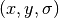 values which means there is a potential keypoint at (x,y) at scale.
values. LoG acts as a blob detector which detects blobs in various sizes due to change in . In short, acts as a scaling parameter. For eg, in the above image, gaussian kernel with low gives high value for small corner while guassian kernel with high fits well for larger corner. So, we can find the local maxima across the scale and space which gives us a list of 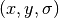 values which means there is a potential keypoint at (x,y) at scale.
But this LoG is a little costly, so SIFT algorithm uses Difference of Gaussians which is an approximation of LoG. Difference of Gaussian is obtained as the difference of Gaussian blurring of an image with two different , let it be and 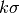. This process is done for different octaves of the image in Gaussian Pyramid. It is represented in below image:

Once this DoG are found, images are searched for local extrema over scale and space. For eg, one pixel in an image is compared with its 8 neighbours as well as 9 pixels in next scale and 9 pixels in previous scales. If it is a local extrema, it is a potential keypoint. It basically means that keypoint is best represented in that scale. It is shown in below image:

Regarding different parameters, the paper gives some empirical data which can be summarized as, number of octaves = 4, number of scale levels = 5, initial 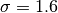, 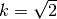 etc as optimal values.
2. Keypoint Localization¶
Once potential keypoints locations are found, they have to be refined to get more accurate results. They used Taylor series expansion of scale space to get more accurate location of extrema, and if the intensity at this extrema is less than a threshold value (0.03 as per the paper), it is rejected. This threshold is called contrastThreshold in OpenCV
DoG has higher response for edges, so edges also need to be removed. For this, a concept similar to Harris corner detector is used. They used a 2x2 Hessian matrix (H) to compute the pricipal curvature. We know from Harris corner detector that for edges, one eigen value is larger than the other. So here they used a simple function,
If this ratio is greater than a threshold, called edgeThreshold in OpenCV, that keypoint is discarded. It is given as 10 in paper.
So it eliminates any low-contrast keypoints and edge keypoints and what remains is strong interest points.
3. Orientation Assignment¶
Now an orientation is assigned to each keypoint to achieve invariance to image rotation. A neigbourhood is taken around the keypoint location depending on the scale, and the gradient magnitude and direction is calculated in that region. An orientation histogram with 36 bins covering 360 degrees is created. (It is weighted by gradient magnitude and gaussian-weighted circular window with equal to 1.5 times the scale of keypoint. The highest peak in the histogram is taken and any peak above 80% of it is also considered to calculate the orientation. It creates keypoints with same location and scale, but different directions. It contribute to stability of matching.
4. Keypoint Descriptor¶
Now keypoint descriptor is created. A 16x16 neighbourhood around the keypoint is taken. It is devided into 16 sub-blocks of 4x4 size. For each sub-block, 8 bin orientation histogram is created. So a total of 128 bin values are available. It is represented as a vector to form keypoint descriptor. In addition to this, several measures are taken to achieve robustness against illumination changes, rotation etc.
5. Keypoint Matching¶
Keypoints between two images are matched by identifying their nearest neighbours. But in some cases, the second closest-match may be very near to the first. It may happen due to noise or some other reasons. In that case, ratio of closest-distance to second-closest distance is taken. If it is greater than 0.8, they are rejected. It eliminaters around 90% of false matches while discards only 5% correct matches, as per the paper.
So this is a summary of SIFT algorithm. For more details and understanding, reading the original paper is highly recommended. Remember one thing, this algorithm is patented. So this algorithm is included in Non-free module in OpenCV.
SIFT in OpenCV¶
So now let’s see SIFT functionalities available in OpenCV. Let’s start with keypoint detection and draw them. First we have to construct a SIFT object. We can pass different parameters to it which are optional and they are well explained in docs.
import cv2
import numpy as np
img = cv2.imread('home.jpg')
gray= cv2.cvtColor(img,cv2.COLOR_BGR2GRAY)
sift = cv2.SIFT()
kp = sift.detect(gray,None)
img=cv2.drawKeypoints(gray,kp)
cv2.imwrite('sift_keypoints.jpg',img)
sift.detect() function finds the keypoint in the images. You can pass a mask if you want to search only a part of image. Each keypoint is a special structure which has many attributes like its (x,y) coordinates, size of the meaningful neighbourhood, angle which specifies its orientation, response that specifies strength of keypoints etc.
OpenCV also provides cv2.drawKeyPoints() function which draws the small circles on the locations of keypoints. If you pass a flag, cv2.DRAW_MATCHES_FLAGS_DRAW_RICH_KEYPOINTS to it, it will draw a circle with size of keypoint and it will even show its orientation. See below example.
img=cv2.drawKeypoints(gray,kp,flags=cv2.DRAW_MATCHES_FLAGS_DRAW_RICH_KEYPOINTS)
cv2.imwrite('sift_keypoints.jpg',img)
See the two results below:

Now to calculate the descriptor, OpenCV provides two methods.
- Since you already found keypoints, you can call sift.compute() which computes the descriptors from the keypoints we have found. Eg:
kp,des = sift.compute(gray,kp) - If you didn’t find keypoints, directly find keypoints and descriptors in a single step with the function, sift.detectAndCompute().
We will see the second method:
sift = cv2.SIFT()
kp, des = sift.detectAndCompute(gray,None)
Here kp will be a list of keypoints and des is a numpy array of shape 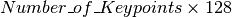.
So we got keypoints, descriptors etc. Now we want to see how to match keypoints in different images. That we will learn in coming chapters.
Additional Resources¶
Exercises¶
Introduction to SURF (Speeded-Up Robust Features)¶
Goal¶
- In this chapter,
- We will see the basics of SURF
- We will see SURF functionalities in OpenCV
Theory¶
In last chapter, we saw SIFT for keypoint detection and description. But it was comparatively slow and people needed more speeded-up version. In 2006, three people, Bay, H., Tuytelaars, T. and Van Gool, L, published another paper, “SURF: Speeded Up Robust Features” which introduced a new algorithm called SURF. As name suggests, it is a speeded-up version of SIFT.
In SIFT, Lowe approximated Laplacian of Gaussian with Difference of Gaussian for finding scale-space. SURF goes a little further and approximates LoG with Box Filter. Below image shows a demonstration of such an approximation. One big advantage of this approximation is that, convolution with box filter can be easily calculated with the help of integral images. And it can be done in parallel for different scales. Also the SURF rely on determinant of Hessian matrix for both scale and location.

For orientation assignment, SURF uses wavelet responses in horizontal and vertical direction for a neighbourhood of size 6s. Adequate guassian weights are also applied to it. Then they are plotted in a space as given in below image. The dominant orientation is estimated by calculating the sum of all responses within a sliding orientation window of angle 60 degrees. Interesting thing is that, wavelet response can be found out using integral images very easily at any scale. For many applications, rotation invariance is not required, so no need of finding this orientation, which speeds up the process. SURF provides such a functionality called Upright-SURF or U-SURF. It improves speed and is robust upto  . OpenCV supports both, depending upon the flag, upright. If it is 0, orientation is calculated. If it is 1, orientation is not calculated and it is more faster.
. OpenCV supports both, depending upon the flag, upright. If it is 0, orientation is calculated. If it is 1, orientation is not calculated and it is more faster.

For feature description, SURF uses Wavelet responses in horizontal and vertical direction (again, use of integral images makes things easier). A neighbourhood of size 20sX20s is taken around the keypoint where s is the size. It is divided into 4x4 subregions. For each subregion, horizontal and vertical wavelet responses are taken and a vector is formed like this,  . This when represented as a vector gives SURF feature descriptor with total 64 dimensions. Lower the dimension, higher the speed of computation and matching, but provide better distinctiveness of features.
. This when represented as a vector gives SURF feature descriptor with total 64 dimensions. Lower the dimension, higher the speed of computation and matching, but provide better distinctiveness of features.
For more distinctiveness, SURF feature descriptor has an extended 128 dimension version. The sums of 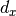 and  are computed separately for 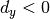 and
are computed separately for 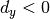 and  . Similarly, the sums of
. Similarly, the sums of  and
and  are split
up according to the sign of , thereby doubling the number of features. It doesn’t add much computation complexity. OpenCV supports both by setting the value of flag extended with 0 and 1 for 64-dim and 128-dim respectively (default is 128-dim)
are split
up according to the sign of , thereby doubling the number of features. It doesn’t add much computation complexity. OpenCV supports both by setting the value of flag extended with 0 and 1 for 64-dim and 128-dim respectively (default is 128-dim)
Another important improvement is the use of sign of Laplacian (trace of Hessian Matrix) for underlying interest point. It adds no computation cost since it is already computed during detection. The sign of the Laplacian distinguishes bright blobs on dark backgrounds from the reverse situation. In the matching stage, we only compare features if they have the same type of contrast (as shown in image below). This minimal information allows for faster matching, without reducing the descriptor’s performance.

In short, SURF adds a lot of features to improve the speed in every step. Analysis shows it is 3 times faster than SIFT while performance is comparable to SIFT. SURF is good at handling images with blurring and rotation, but not good at handling viewpoint change and illumination change.
SURF in OpenCV¶
OpenCV provides SURF functionalities just like SIFT. You initiate a SURF object with some optional conditions like 64/128-dim descriptors, Upright/Normal SURF etc. All the details are well explained in docs. Then as we did in SIFT, we can use SURF.detect(), SURF.compute() etc for finding keypoints and descriptors.
First we will see a simple demo on how to find SURF keypoints and descriptors and draw it. All examples are shown in Python terminal since it is just same as SIFT only.
>>> img = cv2.imread('fly.png',0)
# Create SURF object. You can specify params here or later.
# Here I set Hessian Threshold to 400
>>> surf = cv2.SURF(400)
# Find keypoints and descriptors directly
>>> kp, des = surf.detectAndCompute(img,None)
>>> len(kp)
699
1199 keypoints is too much to show in a picture. We reduce it to some 50 to draw it on an image. While matching, we may need all those features, but not now. So we increase the Hessian Threshold.
# Check present Hessian threshold
>>> print surf.hessianThreshold
400.0
# We set it to some 50000. Remember, it is just for representing in picture.
# In actual cases, it is better to have a value 300-500
>>> surf.hessianThreshold = 50000
# Again compute keypoints and check its number.
>>> kp, des = surf.detectAndCompute(img,None)
>>> print len(kp)
47
It is less than 50. Let’s draw it on the image.
>>> img2 = cv2.drawKeypoints(img,kp,None,(255,0,0),4)
>>> plt.imshow(img2),plt.show()
See the result below. You can see that SURF is more like a blob detector. It detects the white blobs on wings of butterfly. You can test it with other images.

Now I want to apply U-SURF, so that it won’t find the orientation.
# Check upright flag, if it False, set it to True
>>> print surf.upright
False
>>> surf.upright = True
# Recompute the feature points and draw it
>>> kp = surf.detect(img,None)
>>> img2 = cv2.drawKeypoints(img,kp,None,(255,0,0),4)
>>> plt.imshow(img2),plt.show()
See the results below. All the orientations are shown in same direction. It is more faster than previous. If you are working on cases where orientation is not a problem (like panorama stitching) etc, this is more better.

Finally we check the descriptor size and change it to 128 if it is only 64-dim.
# Find size of descriptor
>>> print surf.descriptorSize()
64
# That means flag, "extended" is False.
>>> surf.extended
False
# So we make it to True to get 128-dim descriptors.
>>> surf.extended = True
>>> kp, des = surf.detectAndCompute(img,None)
>>> print surf.descriptorSize()
128
>>> print des.shape
(47, 128)
Remaining part is matching which we will do in another chapter.
Additional Resources¶
Exercises¶
FAST Algorithm for Corner Detection¶
Goal¶
- In this chapter,
- We will understand the basics of FAST algorithm
- We will find corners using OpenCV functionalities for FAST algorithm.
Theory¶
We saw several feature detectors and many of them are really good. But when looking from a real-time application point of view, they are not fast enough. One best example would be SLAM (Simultaneous Localization and Mapping) mobile robot which have limited computational resources.
As a solution to this, FAST (Features from Accelerated Segment Test) algorithm was proposed by Edward Rosten and Tom Drummond in their paper “Machine learning for high-speed corner detection” in 2006 (Later revised it in 2010). A basic summary of the algorithm is presented below. Refer original paper for more details (All the images are taken from original paper).
Feature Detection using FAST¶
Select a pixel
 in the image which is to be identified as an interest point or not. Let its intensity be
in the image which is to be identified as an interest point or not. Let its intensity be  .
.Select appropriate threshold value
 .
.Consider a circle of 16 pixels around the pixel under test. (See the image below)

Now the pixel
is a corner if there exists a set of  contiguous pixels in the circle (of 16 pixels) which are all brighter than 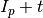, or all darker than
contiguous pixels in the circle (of 16 pixels) which are all brighter than 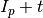, or all darker than  . (Shown as white dash lines in the above image). was chosen to be 12.
. (Shown as white dash lines in the above image). was chosen to be 12.A high-speed test was proposed to exclude a large number of non-corners. This test examines only the four pixels at 1, 9, 5 and 13 (First 1 and 9 are tested if they are too brighter or darker. If so, then checks 5 and 13). If
is a corner, then at least three of these must all be brighter than or darker than . If neither of these is the case, then cannot be a corner. The full segment test criterion can then be applied to the passed candidates by examining all pixels in the circle. This detector in itself exhibits high performance, but there are several weaknesses:- It does not reject as many candidates for n < 12.
- The choice of pixels is not optimal because its efficiency depends on ordering of the questions and distribution of corner appearances.
- Results of high-speed tests are thrown away.
- Multiple features are detected adjacent to one another.
First 3 points are addressed with a machine learning approach. Last one is addressed using non-maximal suppression.
Machine Learning a Corner Detector¶
Select a set of images for training (preferably from the target application domain)
Run FAST algorithm in every images to find feature points.
For every feature point, store the 16 pixels around it as a vector. Do it for all the images to get feature vector
 .
.Each pixel (say
 ) in these 16 pixels can have one of the following three states:
) in these 16 pixels can have one of the following three states:
Depending on these states, the feature vector
is subdivided into 3 subsets, 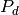, 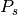,  .
.Define a new boolean variable, 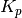, which is true if
is a corner and false otherwise.Use the ID3 algorithm (decision tree classifier) to query each subset using the variable for the knowledge about the true class. It selects the
which yields the most information about whether the candidate pixel is a corner, measured by the entropy of .This is recursively applied to all the subsets until its entropy is zero.
The decision tree so created is used for fast detection in other images.
Non-maximal Suppression¶
Detecting multiple interest points in adjacent locations is another problem. It is solved by using Non-maximum Suppression.
- Compute a score function,
 for all the detected feature points. is the sum of absolute difference between and 16 surrounding pixels values.
for all the detected feature points. is the sum of absolute difference between and 16 surrounding pixels values. - Consider two adjacent keypoints and compute their values.
- Discard the one with lower value.
Summary¶
It is several times faster than other existing corner detectors.
But it is not robust to high levels of noise. It is dependant on a threshold.
FAST Feature Detector in OpenCV¶
It is called as any other feature detector in OpenCV. If you want, you can specify the threshold, whether non-maximum suppression to be applied or not, the neighborhood to be used etc.
For the neighborhood, three flags are defined, cv2.FAST_FEATURE_DETECTOR_TYPE_5_8, cv2.FAST_FEATURE_DETECTOR_TYPE_7_12 and cv2.FAST_FEATURE_DETECTOR_TYPE_9_16. Below is a simple code on how to detect and draw the FAST feature points.
import numpy as np
import cv2
from matplotlib import pyplot as plt
img = cv2.imread('simple.jpg',0)
# Initiate FAST object with default values
fast = cv2.FastFeatureDetector()
# find and draw the keypoints
kp = fast.detect(img,None)
img2 = cv2.drawKeypoints(img, kp, color=(255,0,0))
# Print all default params
print "Threshold: ", fast.getInt('threshold')
print "nonmaxSuppression: ", fast.getBool('nonmaxSuppression')
print "neighborhood: ", fast.getInt('type')
print "Total Keypoints with nonmaxSuppression: ", len(kp)
cv2.imwrite('fast_true.png',img2)
# Disable nonmaxSuppression
fast.setBool('nonmaxSuppression',0)
kp = fast.detect(img,None)
print "Total Keypoints without nonmaxSuppression: ", len(kp)
img3 = cv2.drawKeypoints(img, kp, color=(255,0,0))
cv2.imwrite('fast_false.png',img3)
See the results. First image shows FAST with nonmaxSuppression and second one without nonmaxSuppression:

Additional Resources¶
- Edward Rosten and Tom Drummond, “Machine learning for high speed corner detection” in 9th European Conference on Computer Vision, vol. 1, 2006, pp. 430–443.
- Edward Rosten, Reid Porter, and Tom Drummond, “Faster and better: a machine learning approach to corner detection” in IEEE Trans. Pattern Analysis and Machine Intelligence, 2010, vol 32, pp. 105-119.
Exercises¶
BRIEF (Binary Robust Independent Elementary Features)¶
Goal¶
- In this chapter
- We will see the basics of BRIEF algorithm
Theory¶
We know SIFT uses 128-dim vector for descriptors. Since it is using floating point numbers, it takes basically 512 bytes. Similarly SURF also takes minimum of 256 bytes (for 64-dim). Creating such a vector for thousands of features takes a lot of memory which are not feasible for resouce-constraint applications especially for embedded systems. Larger the memory, longer the time it takes for matching.
But all these dimensions may not be needed for actual matching. We can compress it using several methods like PCA, LDA etc. Even other methods like hashing using LSH (Locality Sensitive Hashing) is used to convert these SIFT descriptors in floating point numbers to binary strings. These binary strings are used to match features using Hamming distance. This provides better speed-up because finding hamming distance is just applying XOR and bit count, which are very fast in modern CPUs with SSE instructions. But here, we need to find the descriptors first, then only we can apply hashing, which doesn’t solve our initial problem on memory.
BRIEF comes into picture at this moment. It provides a shortcut to find the binary strings directly without finding descriptors. It takes smoothened image patch and selects a set of  (x,y) location pairs in an unique way (explained in paper). Then some pixel intensity comparisons are done on these location pairs. For eg, let first location pairs be and
(x,y) location pairs in an unique way (explained in paper). Then some pixel intensity comparisons are done on these location pairs. For eg, let first location pairs be and  . If
. If  , then its result is 1, else it is 0. This is applied for all the location pairs to get a -dimensional bitstring.
, then its result is 1, else it is 0. This is applied for all the location pairs to get a -dimensional bitstring.
This can be 128, 256 or 512. OpenCV supports all of these, but by default, it would be 256 (OpenCV represents it in bytes. So the values will be 16, 32 and 64). So once you get this, you can use Hamming Distance to match these descriptors.
One important point is that BRIEF is a feature descriptor, it doesn’t provide any method to find the features. So you will have to use any other feature detectors like SIFT, SURF etc. The paper recommends to use CenSurE which is a fast detector and BRIEF works even slightly better for CenSurE points than for SURF points.
In short, BRIEF is a faster method feature descriptor calculation and matching. It also provides high recognition rate unless there is large in-plane rotation.
BRIEF in OpenCV¶
Below code shows the computation of BRIEF descriptors with the help of CenSurE detector. (CenSurE detector is called STAR detector in OpenCV)
import numpy as np
import cv2
from matplotlib import pyplot as plt
img = cv2.imread('simple.jpg',0)
# Initiate STAR detector
star = cv2.FeatureDetector_create("STAR")
# Initiate BRIEF extractor
brief = cv2.DescriptorExtractor_create("BRIEF")
# find the keypoints with STAR
kp = star.detect(img,None)
# compute the descriptors with BRIEF
kp, des = brief.compute(img, kp)
print brief.getInt('bytes')
print des.shape
The function brief.getInt('bytes') gives the size used in bytes. By default it is 32. Next one is matching, which will be done in another chapter.
Additional Resources¶
- Michael Calonder, Vincent Lepetit, Christoph Strecha, and Pascal Fua, “BRIEF: Binary Robust Independent Elementary Features”, 11th European Conference on Computer Vision (ECCV), Heraklion, Crete. LNCS Springer, September 2010.
- LSH (Locality Sensitive Hasing) at wikipedia.
ORB (Oriented FAST and Rotated BRIEF)¶
Goal¶
- In this chapter,
- We will see the basics of ORB
Theory¶
As an OpenCV enthusiast, the most important thing about the ORB is that it came from “OpenCV Labs”. This algorithm was brought up by Ethan Rublee, Vincent Rabaud, Kurt Konolige and Gary R. Bradski in their paper ORB: An efficient alternative to SIFT or SURF in 2011. As the title says, it is a good alternative to SIFT and SURF in computation cost, matching performance and mainly the patents. Yes, SIFT and SURF are patented and you are supposed to pay them for its use. But ORB is not !!!
ORB is basically a fusion of FAST keypoint detector and BRIEF descriptor with many modifications to enhance the performance. First it use FAST to find keypoints, then apply Harris corner measure to find top N points among them. It also use pyramid to produce multiscale-features. But one problem is that, FAST doesn’t compute the orientation. So what about rotation invariance? Authors came up with following modification.
It computes the intensity weighted centroid of the patch with located corner at center. The direction of the vector from this corner point to centroid gives the orientation. To improve the rotation invariance, moments are computed with x and y which should be in a circular region of radius , where is the size of the patch.
Now for descriptors, ORB use BRIEF descriptors. But we have already seen that BRIEF performs poorly with rotation. So what ORB does is to “steer” BRIEF according to the orientation of keypoints. For any feature set of binary tests at location
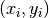, define a  matrix,
matrix,  which contains the coordinates of these pixels. Then using the orientation of patch, , its rotation matrix is found and rotates the to get steered(rotated) version
which contains the coordinates of these pixels. Then using the orientation of patch, , its rotation matrix is found and rotates the to get steered(rotated) version  .
.
ORB discretize the angle to increments of 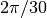 (12 degrees), and construct a lookup table of precomputed BRIEF patterns. As long as the keypoint orientation is consistent across views, the correct set of points will be used to compute its descriptor.
BRIEF has an important property that each bit feature has a large variance and a mean near 0.5. But once it is oriented along keypoint direction, it loses this property and become more distributed. High variance makes a feature more discriminative, since it responds differentially to inputs. Another desirable property is to have the tests uncorrelated, since then each test will contribute to the result. To resolve all these, ORB runs a greedy search among all possible binary tests to find the ones that have both high variance and means close to 0.5, as well as being uncorrelated. The result is called rBRIEF.
For descriptor matching, multi-probe LSH which improves on the traditional LSH, is used. The paper says ORB is much faster than SURF and SIFT and ORB descriptor works better than SURF. ORB is a good choice in low-power devices for panorama stitching etc.
ORB in OpenCV¶
As usual, we have to create an ORB object with the function, cv2.ORB() or using feature2d common interface. It has a number of optional parameters. Most useful ones are nFeatures which denotes maximum number of features to be retained (by default 500), scoreType which denotes whether Harris score or FAST score to rank the features (by default, Harris score) etc. Another parameter, WTA_K decides number of points that produce each element of the oriented BRIEF descriptor. By default it is two, ie selects two points at a time. In that case, for matching, NORM_HAMMING distance is used. If WTA_K is 3 or 4, which takes 3 or 4 points to produce BRIEF descriptor, then matching distance is defined by NORM_HAMMING2.
Below is a simple code which shows the use of ORB.
import numpy as np
import cv2
from matplotlib import pyplot as plt
img = cv2.imread('simple.jpg',0)
# Initiate STAR detector
orb = cv2.ORB()
# find the keypoints with ORB
kp = orb.detect(img,None)
# compute the descriptors with ORB
kp, des = orb.compute(img, kp)
# draw only keypoints location,not size and orientation
img2 = cv2.drawKeypoints(img,kp,color=(0,255,0), flags=0)
plt.imshow(img2),plt.show()
See the result below:

ORB feature matching, we will do in another chapter.
Additional Resources¶
- Ethan Rublee, Vincent Rabaud, Kurt Konolige, Gary R. Bradski: ORB: An efficient alternative to SIFT or SURF. ICCV 2011: 2564-2571.
Exercises¶
Feature Matching¶
Goal¶
- In this chapter
- We will see how to match features in one image with others.
- We will use the Brute-Force matcher and FLANN Matcher in OpenCV
Basics of Brute-Force Matcher¶
Brute-Force matcher is simple. It takes the descriptor of one feature in first set and is matched with all other features in second set using some distance calculation. And the closest one is returned.
For BF matcher, first we have to create the BFMatcher object using cv2.BFMatcher(). It takes two optional params. First one is normType. It specifies the distance measurement to be used. By default, it is cv2.NORM_L2. It is good for SIFT, SURF etc (cv2.NORM_L1 is also there). For binary string based descriptors like ORB, BRIEF, BRISK etc, cv2.NORM_HAMMING should be used, which used Hamming distance as measurement. If ORB is using VTA_K == 3 or 4, cv2.NORM_HAMMING2 should be used.
Second param is boolean variable, crossCheck which is false by default. If it is true, Matcher returns only those matches with value (i,j) such that i-th descriptor in set A has j-th descriptor in set B as the best match and vice-versa. That is, the two features in both sets should match each other. It provides consistant result, and is a good alternative to ratio test proposed by D.Lowe in SIFT paper.
Once it is created, two important methods are BFMatcher.match() and BFMatcher.knnMatch(). First one returns the best match. Second method returns k best matches where k is specified by the user. It may be useful when we need to do additional work on that.
Like we used cv2.drawKeypoints() to draw keypoints, cv2.drawMatches() helps us to draw the matches. It stacks two images horizontally and draw lines from first image to second image showing best matches. There is also cv2.drawMatchesKnn which draws all the k best matches. If k=2, it will draw two match-lines for each keypoint. So we have to pass a mask if we want to selectively draw it.
Let’s see one example for each of SURF and ORB (Both use different distance measurements).
Brute-Force Matching with ORB Descriptors¶
Here, we will see a simple example on how to match features between two images. In this case, I have a queryImage and a trainImage. We will try to find the queryImage in trainImage using feature matching. ( The images are /samples/c/box.png and /samples/c/box_in_scene.png)
We are using SIFT descriptors to match features. So let’s start with loading images, finding descriptors etc.
import numpy as np
import cv2
from matplotlib import pyplot as plt
img1 = cv2.imread('box.png',0) # queryImage
img2 = cv2.imread('box_in_scene.png',0) # trainImage
# Initiate SIFT detector
orb = cv2.ORB()
# find the keypoints and descriptors with SIFT
kp1, des1 = orb.detectAndCompute(img1,None)
kp2, des2 = orb.detectAndCompute(img2,None)
Next we create a BFMatcher object with distance measurement cv2.NORM_HAMMING (since we are using ORB) and crossCheck is switched on for better results. Then we use Matcher.match() method to get the best matches in two images. We sort them in ascending order of their distances so that best matches (with low distance) come to front. Then we draw only first 10 matches (Just for sake of visibility. You can increase it as you like)
# create BFMatcher object
bf = cv2.BFMatcher(cv2.NORM_HAMMING, crossCheck=True)
# Match descriptors.
matches = bf.match(des1,des2)
# Sort them in the order of their distance.
matches = sorted(matches, key = lambda x:x.distance)
# Draw first 10 matches.
img3 = cv2.drawMatches(img1,kp1,img2,kp2,matches[:10], flags=2)
plt.imshow(img3),plt.show()
Below is the result I got:

What is this Matcher Object?¶
The result of matches = bf.match(des1,des2) line is a list of DMatch objects. This DMatch object has following attributes:
DMatch.distance- Distance between descriptors. The lower, the better it is.DMatch.trainIdx- Index of the descriptor in train descriptorsDMatch.queryIdx- Index of the descriptor in query descriptorsDMatch.imgIdx- Index of the train image.
Brute-Force Matching with SIFT Descriptors and Ratio Test¶
This time, we will use BFMatcher.knnMatch() to get k best matches. In this example, we will take k=2 so that we can apply ratio test explained by D.Lowe in his paper.
import numpy as np
import cv2
from matplotlib import pyplot as plt
img1 = cv2.imread('box.png',0) # queryImage
img2 = cv2.imread('box_in_scene.png',0) # trainImage
# Initiate SIFT detector
sift = cv2.SIFT()
# find the keypoints and descriptors with SIFT
kp1, des1 = sift.detectAndCompute(img1,None)
kp2, des2 = sift.detectAndCompute(img2,None)
# BFMatcher with default params
bf = cv2.BFMatcher()
matches = bf.knnMatch(des1,des2, k=2)
# Apply ratio test
good = []
for m,n in matches:
if m.distance < 0.75*n.distance:
good.append([m])
# cv2.drawMatchesKnn expects list of lists as matches.
img3 = cv2.drawMatchesKnn(img1,kp1,img2,kp2,good,flags=2)
plt.imshow(img3),plt.show()
See the result below:

FLANN based Matcher¶
FLANN stands for Fast Library for Approximate Nearest Neighbors. It contains a collection of algorithms optimized for fast nearest neighbor search in large datasets and for high dimensional features. It works more faster than BFMatcher for large datasets. We will see the second example with FLANN based matcher.
For FLANN based matcher, we need to pass two dictionaries which specifies the algorithm to be used, its related parameters etc. First one is IndexParams. For various algorithms, the information to be passed is explained in FLANN docs. As a summary, for algorithms like SIFT, SURF etc. you can pass following:
index_params = dict(algorithm = FLANN_INDEX_KDTREE, trees = 5)
While using ORB, you can pass the following. The commented values are recommended as per the docs, but it didn’t provide required results in some cases. Other values worked fine.:
index_params= dict(algorithm = FLANN_INDEX_LSH,
table_number = 6, # 12
key_size = 12, # 20
multi_probe_level = 1) #2
Second dictionary is the SearchParams. It specifies the number of times the trees in the index should be recursively traversed. Higher values gives better precision, but also takes more time. If you want to change the value, pass search_params = dict(checks=100).
With these informations, we are good to go.
import numpy as np
import cv2
from matplotlib import pyplot as plt
img1 = cv2.imread('box.png',0) # queryImage
img2 = cv2.imread('box_in_scene.png',0) # trainImage
# Initiate SIFT detector
sift = cv2.SIFT()
# find the keypoints and descriptors with SIFT
kp1, des1 = sift.detectAndCompute(img1,None)
kp2, des2 = sift.detectAndCompute(img2,None)
# FLANN parameters
FLANN_INDEX_KDTREE = 0
index_params = dict(algorithm = FLANN_INDEX_KDTREE, trees = 5)
search_params = dict(checks=50) # or pass empty dictionary
flann = cv2.FlannBasedMatcher(index_params,search_params)
matches = flann.knnMatch(des1,des2,k=2)
# Need to draw only good matches, so create a mask
matchesMask = [[0,0] for i in xrange(len(matches))]
# ratio test as per Lowe's paper
for i,(m,n) in enumerate(matches):
if m.distance < 0.7*n.distance:
matchesMask[i]=[1,0]
draw_params = dict(matchColor = (0,255,0),
singlePointColor = (255,0,0),
matchesMask = matchesMask,
flags = 0)
img3 = cv2.drawMatchesKnn(img1,kp1,img2,kp2,matches,None,**draw_params)
plt.imshow(img3,),plt.show()
See the result below:

Additional Resources¶
Exercises¶
Feature Matching + Homography to find Objects¶
Goal¶
- In this chapter,
- We will mix up the feature matching and findHomography from calib3d module to find known objects in a complex image.
Basics¶
So what we did in last session? We used a queryImage, found some feature points in it, we took another trainImage, found the features in that image too and we found the best matches among them. In short, we found locations of some parts of an object in another cluttered image. This information is sufficient to find the object exactly on the trainImage.
For that, we can use a function from calib3d module, ie cv2.findHomography(). If we pass the set of points from both the images, it will find the perpective transformation of that object. Then we can use cv2.perspectiveTransform() to find the object. It needs atleast four correct points to find the transformation.
We have seen that there can be some possible errors while matching which may affect the result. To solve this problem, algorithm uses RANSAC or LEAST_MEDIAN (which can be decided by the flags). So good matches which provide correct estimation are called inliers and remaining are called outliers. cv2.findHomography() returns a mask which specifies the inlier and outlier points.
So let’s do it !!!
Code¶
First, as usual, let’s find SIFT features in images and apply the ratio test to find the best matches.
import numpy as np
import cv2
from matplotlib import pyplot as plt
MIN_MATCH_COUNT = 10
img1 = cv2.imread('box.png',0) # queryImage
img2 = cv2.imread('box_in_scene.png',0) # trainImage
# Initiate SIFT detector
sift = cv2.SIFT()
# find the keypoints and descriptors with SIFT
kp1, des1 = sift.detectAndCompute(img1,None)
kp2, des2 = sift.detectAndCompute(img2,None)
FLANN_INDEX_KDTREE = 0
index_params = dict(algorithm = FLANN_INDEX_KDTREE, trees = 5)
search_params = dict(checks = 50)
flann = cv2.FlannBasedMatcher(index_params, search_params)
matches = flann.knnMatch(des1,des2,k=2)
# store all the good matches as per Lowe's ratio test.
good = []
for m,n in matches:
if m.distance < 0.7*n.distance:
good.append(m)
Now we set a condition that atleast 10 matches (defined by MIN_MATCH_COUNT) are to be there to find the object. Otherwise simply show a message saying not enough matches are present.
If enough matches are found, we extract the locations of matched keypoints in both the images. They are passed to find the perpective transformation. Once we get this 3x3 transformation matrix, we use it to transform the corners of queryImage to corresponding points in trainImage. Then we draw it.
if len(good)>MIN_MATCH_COUNT:
src_pts = np.float32([ kp1[m.queryIdx].pt for m in good ]).reshape(-1,1,2)
dst_pts = np.float32([ kp2[m.trainIdx].pt for m in good ]).reshape(-1,1,2)
M, mask = cv2.findHomography(src_pts, dst_pts, cv2.RANSAC,5.0)
matchesMask = mask.ravel().tolist()
h,w = img1.shape
pts = np.float32([ [0,0],[0,h-1],[w-1,h-1],[w-1,0] ]).reshape(-1,1,2)
dst = cv2.perspectiveTransform(pts,M)
img2 = cv2.polylines(img2,[np.int32(dst)],True,255,3, cv2.LINE_AA)
else:
print "Not enough matches are found - %d/%d" % (len(good),MIN_MATCH_COUNT)
matchesMask = None
Finally we draw our inliers (if successfully found the object) or matching keypoints (if failed).
draw_params = dict(matchColor = (0,255,0), # draw matches in green color
singlePointColor = None,
matchesMask = matchesMask, # draw only inliers
flags = 2)
img3 = cv2.drawMatches(img1,kp1,img2,kp2,good,None,**draw_params)
plt.imshow(img3, 'gray'),plt.show()
See the result below. Object is marked in white color in cluttered image:

Additional Resources¶
Exercises¶
Video Analysis¶
We have already seen an example of color-based tracking. It is simpler. This time, we see much more better algorithms like “Meanshift”, and its upgraded version, “Camshift” to find and track them.

Now let’s discuss an important concept, “Optical Flow”, which is related to videos and has many applications.

In several applications, we need to extract foreground for further operations like object tracking. Background Subtraction is a well-known method in those cases.

Meanshift and Camshift¶
Goal¶
In this chapter,
- We will learn about Meanshift and Camshift algorithms to find and track objects in videos.
Meanshift¶
The intuition behind the meanshift is simple. Consider you have a set of points. (It can be a pixel distribution like histogram backprojection). You are given a small window ( may be a circle) and you have to move that window to the area of maximum pixel density (or maximum number of points). It is illustrated in the simple image given below:

The initial window is shown in blue circle with the name “C1”. Its original center is marked in blue rectangle, named “C1_o”. But if you find the centroid of the points inside that window, you will get the point “C1_r” (marked in small blue circle) which is the real centroid of window. Surely they don’t match. So move your window such that circle of the new window matches with previous centroid. Again find the new centroid. Most probably, it won’t match. So move it again, and continue the iterations such that center of window and its centroid falls on the same location (or with a small desired error). So finally what you obtain is a window with maximum pixel distribution. It is marked with green circle, named “C2”. As you can see in image, it has maximum number of points. The whole process is demonstrated on a static image below:

So we normally pass the histogram backprojected image and initial target location. When the object moves, obviously the movement is reflected in histogram backprojected image. As a result, meanshift algorithm moves our window to the new location with maximum density.
Meanshift in OpenCV¶
To use meanshift in OpenCV, first we need to setup the target, find its histogram so that we can backproject the target on each frame for calculation of meanshift. We also need to provide initial location of window. For histogram, only Hue is considered here. Also, to avoid false values due to low light, low light values are discarded using cv2.inRange() function.
import numpy as np
import cv2
cap = cv2.VideoCapture('slow.flv')
# take first frame of the video
ret,frame = cap.read()
# setup initial location of window
r,h,c,w = 250,90,400,125 # simply hardcoded the values
track_window = (c,r,w,h)
# set up the ROI for tracking
roi = frame[r:r+h, c:c+w]
hsv_roi = cv2.cvtColor(frame, cv2.COLOR_BGR2HSV)
mask = cv2.inRange(hsv_roi, np.array((0., 60.,32.)), np.array((180.,255.,255.)))
roi_hist = cv2.calcHist([hsv_roi],[0],mask,[180],[0,180])
cv2.normalize(roi_hist,roi_hist,0,255,cv2.NORM_MINMAX)
# Setup the termination criteria, either 10 iteration or move by atleast 1 pt
term_crit = ( cv2.TERM_CRITERIA_EPS | cv2.TERM_CRITERIA_COUNT, 10, 1 )
while(1):
ret ,frame = cap.read()
if ret == True:
hsv = cv2.cvtColor(frame, cv2.COLOR_BGR2HSV)
dst = cv2.calcBackProject([hsv],[0],roi_hist,[0,180],1)
# apply meanshift to get the new location
ret, track_window = cv2.meanShift(dst, track_window, term_crit)
# Draw it on image
x,y,w,h = track_window
img2 = cv2.rectangle(frame, (x,y), (x+w,y+h), 255,2)
cv2.imshow('img2',img2)
k = cv2.waitKey(60) & 0xff
if k == 27:
break
else:
cv2.imwrite(chr(k)+".jpg",img2)
else:
break
cv2.destroyAllWindows()
cap.release()
Three frames in a video I used is given below:

Camshift¶
Did you closely watch the last result? There is a problem. Our window always has the same size when car is farther away and it is very close to camera. That is not good. We need to adapt the window size with size and rotation of the target. Once again, the solution came from “OpenCV Labs” and it is called CAMshift (Continuously Adaptive Meanshift) published by Gary Bradsky in his paper “Computer Vision Face Tracking for Use in a Perceptual User Interface” in 1988.
It applies meanshift first. Once meanshift converges, it updates the size of the window as,  . It also calculates the orientation of best fitting ellipse to it. Again it applies the meanshift with new scaled search window and previous window location. The process is continued until required accuracy is met.
. It also calculates the orientation of best fitting ellipse to it. Again it applies the meanshift with new scaled search window and previous window location. The process is continued until required accuracy is met.

Camshift in OpenCV¶
It is almost same as meanshift, but it returns a rotated rectangle (that is our result) and box parameters (used to be passed as search window in next iteration). See the code below:
import numpy as np
import cv2
cap = cv2.VideoCapture('slow.flv')
# take first frame of the video
ret,frame = cap.read()
# setup initial location of window
r,h,c,w = 250,90,400,125 # simply hardcoded the values
track_window = (c,r,w,h)
# set up the ROI for tracking
roi = frame[r:r+h, c:c+w]
hsv_roi = cv2.cvtColor(frame, cv2.COLOR_BGR2HSV)
mask = cv2.inRange(hsv_roi, np.array((0., 60.,32.)), np.array((180.,255.,255.)))
roi_hist = cv2.calcHist([hsv_roi],[0],mask,[180],[0,180])
cv2.normalize(roi_hist,roi_hist,0,255,cv2.NORM_MINMAX)
# Setup the termination criteria, either 10 iteration or move by atleast 1 pt
term_crit = ( cv2.TERM_CRITERIA_EPS | cv2.TERM_CRITERIA_COUNT, 10, 1 )
while(1):
ret ,frame = cap.read()
if ret == True:
hsv = cv2.cvtColor(frame, cv2.COLOR_BGR2HSV)
dst = cv2.calcBackProject([hsv],[0],roi_hist,[0,180],1)
# apply meanshift to get the new location
ret, track_window = cv2.CamShift(dst, track_window, term_crit)
# Draw it on image
pts = cv2.boxPoints(ret)
pts = np.int0(pts)
img2 = cv2.polylines(frame,[pts],True, 255,2)
cv2.imshow('img2',img2)
k = cv2.waitKey(60) & 0xff
if k == 27:
break
else:
cv2.imwrite(chr(k)+".jpg",img2)
else:
break
cv2.destroyAllWindows()
cap.release()
Three frames of the result is shown below:

Additional Resources¶
- French Wikipedia page on Camshift. (The two animations are taken from here)
- Bradski, G.R., “Real time face and object tracking as a component of a perceptual user interface,” Applications of Computer Vision, 1998. WACV ‘98. Proceedings., Fourth IEEE Workshop on , vol., no., pp.214,219, 19-21 Oct 1998
Exercises¶
- OpenCV comes with a Python sample on interactive demo of camshift. Use it, hack it, understand it.
Optical Flow¶
Goal¶
- In this chapter,
- We will understand the concepts of optical flow and its estimation using Lucas-Kanade method.
- We will use functions like cv2.calcOpticalFlowPyrLK() to track feature points in a video.
Optical Flow¶
Optical flow is the pattern of apparent motion of image objects between two consecutive frames caused by the movemement of object or camera. It is 2D vector field where each vector is a displacement vector showing the movement of points from first frame to second. Consider the image below (Image Courtesy: Wikipedia article on Optical Flow).

It shows a ball moving in 5 consecutive frames. The arrow shows its displacement vector. Optical flow has many applications in areas like :
- Structure from Motion
- Video Compression
- Video Stabilization ...
Optical flow works on several assumptions:
- The pixel intensities of an object do not change between consecutive frames.
- Neighbouring pixels have similar motion.
Consider a pixel 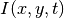 in first frame (Check a new dimension, time, is added here. Earlier we were working with images only, so no need of time). It moves by distance 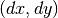 in next frame taken after  time. So since those pixels are the same and intensity does not change, we can say,
time. So since those pixels are the same and intensity does not change, we can say,

Then take taylor series approximation of right-hand side, remove common terms and divide by to get the following equation:

where:

Above equation is called Optical Flow equation. In it, we can find  and 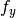, they are image gradients. Similarly
and 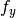, they are image gradients. Similarly  is the gradient along time. But is unknown. We cannot solve this one equation with two unknown variables. So several methods are provided to solve this problem and one of them is Lucas-Kanade.
is the gradient along time. But is unknown. We cannot solve this one equation with two unknown variables. So several methods are provided to solve this problem and one of them is Lucas-Kanade.
Lucas-Kanade method¶
We have seen an assumption before, that all the neighbouring pixels will have similar motion. Lucas-Kanade method takes a 3x3 patch around the point. So all the 9 points have the same motion. We can find 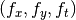 for these 9 points. So now our problem becomes solving 9 equations with two unknown variables which is over-determined. A better solution is obtained with least square fit method. Below is the final solution which is two equation-two unknown problem and solve to get the solution.

( Check similarity of inverse matrix with Harris corner detector. It denotes that corners are better points to be tracked.)
So from user point of view, idea is simple, we give some points to track, we receive the optical flow vectors of those points. But again there are some problems. Until now, we were dealing with small motions. So it fails when there is large motion. So again we go for pyramids. When we go up in the pyramid, small motions are removed and large motions becomes small motions. So applying Lucas-Kanade there, we get optical flow along with the scale.
Lucas-Kanade Optical Flow in OpenCV¶
OpenCV provides all these in a single function, cv2.calcOpticalFlowPyrLK(). Here, we create a simple application which tracks some points in a video. To decide the points, we use cv2.goodFeaturesToTrack(). We take the first frame, detect some Shi-Tomasi corner points in it, then we iteratively track those points using Lucas-Kanade optical flow. For the function cv2.calcOpticalFlowPyrLK() we pass the previous frame, previous points and next frame. It returns next points along with some status numbers which has a value of 1 if next point is found, else zero. We iteratively pass these next points as previous points in next step. See the code below:
import numpy as np
import cv2
cap = cv2.VideoCapture('slow.flv')
# params for ShiTomasi corner detection
feature_params = dict( maxCorners = 100,
qualityLevel = 0.3,
minDistance = 7,
blockSize = 7 )
# Parameters for lucas kanade optical flow
lk_params = dict( winSize = (15,15),
maxLevel = 2,
criteria = (cv2.TERM_CRITERIA_EPS | cv2.TERM_CRITERIA_COUNT, 10, 0.03))
# Create some random colors
color = np.random.randint(0,255,(100,3))
# Take first frame and find corners in it
ret, old_frame = cap.read()
old_gray = cv2.cvtColor(old_frame, cv2.COLOR_BGR2GRAY)
p0 = cv2.goodFeaturesToTrack(old_gray, mask = None, **feature_params)
# Create a mask image for drawing purposes
mask = np.zeros_like(old_frame)
while(1):
ret,frame = cap.read()
frame_gray = cv2.cvtColor(frame, cv2.COLOR_BGR2GRAY)
# calculate optical flow
p1, st, err = cv2.calcOpticalFlowPyrLK(old_gray, frame_gray, p0, None, **lk_params)
# Select good points
good_new = p1[st==1]
good_old = p0[st==1]
# draw the tracks
for i,(new,old) in enumerate(zip(good_new,good_old)):
a,b = new.ravel()
c,d = old.ravel()
mask = cv2.line(mask, (a,b),(c,d), color[i].tolist(), 2)
frame = cv2.circle(frame,(a,b),5,color[i].tolist(),-1)
img = cv2.add(frame,mask)
cv2.imshow('frame',img)
k = cv2.waitKey(30) & 0xff
if k == 27:
break
# Now update the previous frame and previous points
old_gray = frame_gray.copy()
p0 = good_new.reshape(-1,1,2)
cv2.destroyAllWindows()
cap.release()
(This code doesn’t check how correct are the next keypoints. So even if any feature point disappears in image, there is a chance that optical flow finds the next point which may look close to it. So actually for a robust tracking, corner points should be detected in particular intervals. OpenCV samples comes up with such a sample which finds the feature points at every 5 frames. It also run a backward-check of the optical flow points got to select only good ones. Check samples/python2/lk_track.py).
See the results we got:

Dense Optical Flow in OpenCV¶
Lucas-Kanade method computes optical flow for a sparse feature set (in our example, corners detected using Shi-Tomasi algorithm). OpenCV provides another algorithm to find the dense optical flow. It computes the optical flow for all the points in the frame. It is based on Gunner Farneback’s algorithm which is explained in “Two-Frame Motion Estimation Based on Polynomial Expansion” by Gunner Farneback in 2003.
Below sample shows how to find the dense optical flow using above algorithm. We get a 2-channel array with optical flow vectors, . We find their magnitude and direction. We color code the result for better visualization. Direction corresponds to Hue value of the image. Magnitude corresponds to Value plane. See the code below:
import cv2
import numpy as np
cap = cv2.VideoCapture("vtest.avi")
ret, frame1 = cap.read()
prvs = cv2.cvtColor(frame1,cv2.COLOR_BGR2GRAY)
hsv = np.zeros_like(frame1)
hsv[...,1] = 255
while(1):
ret, frame2 = cap.read()
next = cv2.cvtColor(frame2,cv2.COLOR_BGR2GRAY)
flow = cv2.calcOpticalFlowFarneback(prvs,next, None, 0.5, 3, 15, 3, 5, 1.2, 0)
mag, ang = cv2.cartToPolar(flow[...,0], flow[...,1])
hsv[...,0] = ang*180/np.pi/2
hsv[...,2] = cv2.normalize(mag,None,0,255,cv2.NORM_MINMAX)
rgb = cv2.cvtColor(hsv,cv2.COLOR_HSV2BGR)
cv2.imshow('frame2',rgb)
k = cv2.waitKey(30) & 0xff
if k == 27:
break
elif k == ord('s'):
cv2.imwrite('opticalfb.png',frame2)
cv2.imwrite('opticalhsv.png',rgb)
prvs = next
cap.release()
cv2.destroyAllWindows()
See the result below:

OpenCV comes with a more advanced sample on dense optical flow, please see samples/python2/opt_flow.py.
Additional Resources¶
Exercises¶
- Check the code in
samples/python2/lk_track.py. Try to understand the code. - Check the code in
samples/python2/opt_flow.py. Try to understand the code.
Background Subtraction¶
Goal¶
In this chapter,
- We will familiarize with the background subtraction methods available in OpenCV.
Basics¶
Background subtraction is a major preprocessing steps in many vision based applications. For example, consider the cases like visitor counter where a static camera takes the number of visitors entering or leaving the room, or a traffic camera extracting information about the vehicles etc. In all these cases, first you need to extract the person or vehicles alone. Technically, you need to extract the moving foreground from static background.
If you have an image of background alone, like image of the room without visitors, image of the road without vehicles etc, it is an easy job. Just subtract the new image from the background. You get the foreground objects alone. But in most of the cases, you may not have such an image, so we need to extract the background from whatever images we have. It become more complicated when there is shadow of the vehicles. Since shadow is also moving, simple subtraction will mark that also as foreground. It complicates things.
Several algorithms were introduced for this purpose. OpenCV has implemented three such algorithms which is very easy to use. We will see them one-by-one.
BackgroundSubtractorMOG¶
It is a Gaussian Mixture-based Background/Foreground Segmentation Algorithm. It was introduced in the paper “An improved adaptive background mixture model for real-time tracking with shadow detection” by P. KadewTraKuPong and R. Bowden in 2001. It uses a method to model each background pixel by a mixture of K Gaussian distributions (K = 3 to 5). The weights of the mixture represent the time proportions that those colours stay in the scene. The probable background colours are the ones which stay longer and more static.
While coding, we need to create a background object using the function, cv2.createBackgroundSubtractorMOG(). It has some optional parameters like length of history, number of gaussian mixtures, threshold etc. It is all set to some default values. Then inside the video loop, use backgroundsubtractor.apply() method to get the foreground mask.
See a simple example below:
import numpy as np
import cv2
cap = cv2.VideoCapture('vtest.avi')
fgbg = cv2.createBackgroundSubtractorMOG()
while(1):
ret, frame = cap.read()
fgmask = fgbg.apply(frame)
cv2.imshow('frame',fgmask)
k = cv2.waitKey(30) & 0xff
if k == 27:
break
cap.release()
cv2.destroyAllWindows()
( All the results are shown at the end for comparison).
BackgroundSubtractorMOG2¶
It is also a Gaussian Mixture-based Background/Foreground Segmentation Algorithm. It is based on two papers by Z.Zivkovic, “Improved adaptive Gausian mixture model for background subtraction” in 2004 and “Efficient Adaptive Density Estimation per Image Pixel for the Task of Background Subtraction” in 2006. One important feature of this algorithm is that it selects the appropriate number of gaussian distribution for each pixel. (Remember, in last case, we took a K gaussian distributions throughout the algorithm). It provides better adaptibility to varying scenes due illumination changes etc.
As in previous case, we have to create a background subtractor object. Here, you have an option of selecting whether shadow to be detected or not. If detectShadows = True (which is so by default), it detects and marks shadows, but decreases the speed. Shadows will be marked in gray color.
import numpy as np
import cv2
cap = cv2.VideoCapture('vtest.avi')
fgbg = cv2.createBackgroundSubtractorMOG2()
while(1):
ret, frame = cap.read()
fgmask = fgbg.apply(frame)
cv2.imshow('frame',fgmask)
k = cv2.waitKey(30) & 0xff
if k == 27:
break
cap.release()
cv2.destroyAllWindows()
(Results given at the end)
BackgroundSubtractorGMG¶
This algorithm combines statistical background image estimation and per-pixel Bayesian segmentation. It was introduced by Andrew B. Godbehere, Akihiro Matsukawa, Ken Goldberg in their paper “Visual Tracking of Human Visitors under Variable-Lighting Conditions for a Responsive Audio Art Installation” in 2012. As per the paper, the system ran a successful interactive audio art installation called “Are We There Yet?” from March 31 - July 31 2011 at the Contemporary Jewish Museum in San Francisco, California.
It uses first few (120 by default) frames for background modelling. It employs probabilistic foreground segmentation algorithm that identifies possible foreground objects using Bayesian inference. The estimates are adaptive; newer observations are more heavily weighted than old observations to accommodate variable illumination. Several morphological filtering operations like closing and opening are done to remove unwanted noise. You will get a black window during first few frames.
It would be better to apply morphological opening to the result to remove the noises.
import numpy as np
import cv2
cap = cv2.VideoCapture('vtest.avi')
kernel = cv2.getStructuringElement(cv2.MORPH_ELLIPSE,(3,3))
fgbg = cv2.createBackgroundSubtractorGMG()
while(1):
ret, frame = cap.read()
fgmask = fgbg.apply(frame)
fgmask = cv2.morphologyEx(fgmask, cv2.MORPH_OPEN, kernel)
cv2.imshow('frame',fgmask)
k = cv2.waitKey(30) & 0xff
if k == 27:
break
cap.release()
cv2.destroyAllWindows()
Results¶
Original Frame
Below image shows the 200th frame of a video

Result of BackgroundSubtractorMOG

Result of BackgroundSubtractorMOG2
Gray color region shows shadow region.

Result of BackgroundSubtractorGMG
Noise is removed with morphological opening.

Additional Resources¶
Exercises¶
Camera Calibration and 3D Reconstruction¶
Let’s find how good is our camera. Is there any distortion in images taken with it? If so how to correct it?
This is a small section which will help you to create some cool 3D effects with calib module.
Let’s understand epipolar geometry and epipolar constraint.
Extract depth information from 2D images.
Camera Calibration¶
Goal¶
- In this section,
- We will learn about distortions in camera, intrinsic and extrinsic parameters of camera etc.
- We will learn to find these parameters, undistort images etc.
Basics¶
Today’s cheap pinhole cameras introduces a lot of distortion to images. Two major distortions are radial distortion and tangential distortion.
Due to radial distortion, straight lines will appear curved. Its effect is more as we move away from the center of image. For example, one image is shown below, where two edges of a chess board are marked with red lines. But you can see that border is not a straight line and doesn’t match with the red line. All the expected straight lines are bulged out. Visit Distortion (optics) for more details.

This distortion is solved as follows:
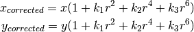
Similarly, another distortion is the tangential distortion which occurs because image taking lense is not aligned perfectly parallel to the imaging plane. So some areas in image may look nearer than expected. It is solved as below:
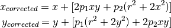
In short, we need to find five parameters, known as distortion coefficients given by:
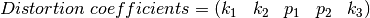
In addition to this, we need to find a few more information, like intrinsic and extrinsic parameters of a camera. Intrinsic parameters are specific to a camera. It includes information like focal length (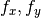), optical centers ( ) etc. It is also called camera matrix. It depends on the camera only, so once calculated, it can be stored for future purposes. It is expressed as a 3x3 matrix:
) etc. It is also called camera matrix. It depends on the camera only, so once calculated, it can be stored for future purposes. It is expressed as a 3x3 matrix:
![camera \; matrix = \left [ \begin{matrix} f_x & 0 & c_x \\ 0 & f_y & c_y \\ 0 & 0 & 1 \end{matrix} \right ]](_images/math/5e9d2db8b3561f68fa0688992fa45c13766a382c.png)
Extrinsic parameters corresponds to rotation and translation vectors which translates a coordinates of a 3D point to a coordinate system.
For stereo applications, these distortions need to be corrected first. To find all these parameters, what we have to do is to provide some sample images of a well defined pattern (eg, chess board). We find some specific points in it ( square corners in chess board). We know its coordinates in real world space and we know its coordinates in image. With these data, some mathematical problem is solved in background to get the distortion coefficients. That is the summary of the whole story. For better results, we need atleast 10 test patterns.
Code¶
As mentioned above, we need atleast 10 test patterns for camera calibration. OpenCV comes with some images of chess board (see samples/cpp/left01.jpg -- left14.jpg), so we will utilize it. For sake of understanding, consider just one image of a chess board. Important input datas needed for camera calibration is a set of 3D real world points and its corresponding 2D image points. 2D image points are OK which we can easily find from the image. (These image points are locations where two black squares touch each other in chess boards)
What about the 3D points from real world space? Those images are taken from a static camera and chess boards are placed at different locations and orientations. So we need to know  values. But for simplicity, we can say chess board was kept stationary at XY plane, (so Z=0 always) and camera was moved accordingly. This consideration helps us to find only X,Y values. Now for X,Y values, we can simply pass the points as (0,0), (1,0), (2,0), ... which denotes the location of points. In this case, the results we get will be in the scale of size of chess board square. But if we know the square size, (say 30 mm), and we can pass the values as (0,0),(30,0),(60,0),..., we get the results in mm. (In this case, we don’t know square size since we didn’t take those images, so we pass in terms of square size).
values. But for simplicity, we can say chess board was kept stationary at XY plane, (so Z=0 always) and camera was moved accordingly. This consideration helps us to find only X,Y values. Now for X,Y values, we can simply pass the points as (0,0), (1,0), (2,0), ... which denotes the location of points. In this case, the results we get will be in the scale of size of chess board square. But if we know the square size, (say 30 mm), and we can pass the values as (0,0),(30,0),(60,0),..., we get the results in mm. (In this case, we don’t know square size since we didn’t take those images, so we pass in terms of square size).
3D points are called object points and 2D image points are called image points.
Setup¶
So to find pattern in chess board, we use the function, cv2.findChessboardCorners(). We also need to pass what kind of pattern we are looking, like 8x8 grid, 5x5 grid etc. In this example, we use 7x6 grid. (Normally a chess board has 8x8 squares and 7x7 internal corners). It returns the corner points and retval which will be True if pattern is obtained. These corners will be placed in an order (from left-to-right, top-to-bottom)
See also
This function may not be able to find the required pattern in all the images. So one good option is to write the code such that, it starts the camera and check each frame for required pattern. Once pattern is obtained, find the corners and store it in a list. Also provides some interval before reading next frame so that we can adjust our chess board in different direction. Continue this process until required number of good patterns are obtained. Even in the example provided here, we are not sure out of 14 images given, how many are good. So we read all the images and take the good ones.
See also
Instead of chess board, we can use some circular grid, but then use the function cv2.findCirclesGrid() to find the pattern. It is said that less number of images are enough when using circular grid.
Once we find the corners, we can increase their accuracy using cv2.cornerSubPix(). We can also draw the pattern using cv2.drawChessboardCorners(). All these steps are included in below code:
import numpy as np
import cv2
import glob
# termination criteria
criteria = (cv2.TERM_CRITERIA_EPS + cv2.TERM_CRITERIA_MAX_ITER, 30, 0.001)
# prepare object points, like (0,0,0), (1,0,0), (2,0,0) ....,(6,5,0)
objp = np.zeros((6*7,3), np.float32)
objp[:,:2] = np.mgrid[0:7,0:6].T.reshape(-1,2)
# Arrays to store object points and image points from all the images.
objpoints = [] # 3d point in real world space
imgpoints = [] # 2d points in image plane.
images = glob.glob('*.jpg')
for fname in images:
img = cv2.imread(fname)
gray = cv2.cvtColor(img,cv2.COLOR_BGR2GRAY)
# Find the chess board corners
ret, corners = cv2.findChessboardCorners(gray, (7,6),None)
# If found, add object points, image points (after refining them)
if ret == True:
objpoints.append(objp)
corners2 = cv2.cornerSubPix(gray,corners,(11,11),(-1,-1),criteria)
imgpoints.append(corners2)
# Draw and display the corners
img = cv2.drawChessboardCorners(img, (7,6), corners2,ret)
cv2.imshow('img',img)
cv2.waitKey(500)
cv2.destroyAllWindows()
One image with pattern drawn on it is shown below:

Calibration¶
So now we have our object points and image points we are ready to go for calibration. For that we use the function, cv2.calibrateCamera(). It returns the camera matrix, distortion coefficients, rotation and translation vectors etc.
ret, mtx, dist, rvecs, tvecs = cv2.calibrateCamera(objpoints, imgpoints, gray.shape[::-1],None,None)
Undistortion¶
We have got what we were trying. Now we can take an image and undistort it. OpenCV comes with two methods, we will see both. But before that, we can refine the camera matrix based on a free scaling parameter using cv2.getOptimalNewCameraMatrix(). If the scaling parameter alpha=0, it returns undistorted image with minimum unwanted pixels. So it may even remove some pixels at image corners. If alpha=1, all pixels are retained with some extra black images. It also returns an image ROI which can be used to crop the result.
So we take a new image (left12.jpg in this case. That is the first image in this chapter)
img = cv2.imread('left12.jpg')
h, w = img.shape[:2]
newcameramtx, roi=cv2.getOptimalNewCameraMatrix(mtx,dist,(w,h),1,(w,h))
This is the shortest path. Just call the function and use ROI obtained above to crop the result.
# undistort
dst = cv2.undistort(img, mtx, dist, None, newcameramtx)
# crop the image
x,y,w,h = roi
dst = dst[y:y+h, x:x+w]
cv2.imwrite('calibresult.png',dst)
This is curved path. First find a mapping function from distorted image to undistorted image. Then use the remap function.
# undistort
mapx,mapy = cv2.initUndistortRectifyMap(mtx,dist,None,newcameramtx,(w,h),5)
dst = cv2.remap(img,mapx,mapy,cv2.INTER_LINEAR)
# crop the image
x,y,w,h = roi
dst = dst[y:y+h, x:x+w]
cv2.imwrite('calibresult.png',dst)
Both the methods give the same result. See the result below:

You can see in the result that all the edges are straight.
Now you can store the camera matrix and distortion coefficients using write functions in Numpy (np.savez, np.savetxt etc) for future uses.
Re-projection Error¶
Re-projection error gives a good estimation of just how exact is the found parameters. This should be as close to zero as possible. Given the intrinsic, distortion, rotation and translation matrices, we first transform the object point to image point using cv2.projectPoints(). Then we calculate the absolute norm between what we got with our transformation and the corner finding algorithm. To find the average error we calculate the arithmetical mean of the errors calculate for all the calibration images.
mean_error = 0
for i in xrange(len(objpoints)):
imgpoints2, _ = cv2.projectPoints(objpoints[i], rvecs[i], tvecs[i], mtx, dist)
error = cv2.norm(imgpoints[i],imgpoints2, cv2.NORM_L2)/len(imgpoints2)
tot_error += error
print "total error: ", mean_error/len(objpoints)
Additional Resources¶
Exercises¶
- Try camera calibration with circular grid.
Pose Estimation¶
Goal¶
- In this section,
- We will learn to exploit calib3d module to create some 3D effects in images.
Basics¶
This is going to be a small section. During the last session on camera calibration, you have found the camera matrix, distortion coefficients etc. Given a pattern image, we can utilize the above information to calculate its pose, or how the object is situated in space, like how it is rotated, how it is displaced etc. For a planar object, we can assume Z=0, such that, the problem now becomes how camera is placed in space to see our pattern image. So, if we know how the object lies in the space, we can draw some 2D diagrams in it to simulate the 3D effect. Let’s see how to do it.
Our problem is, we want to draw our 3D coordinate axis (X, Y, Z axes) on our chessboard’s first corner. X axis in blue color, Y axis in green color and Z axis in red color. So in-effect, Z axis should feel like it is perpendicular to our chessboard plane.
First, let’s load the camera matrix and distortion coefficients from the previous calibration result.
import cv2
import numpy as np
import glob
# Load previously saved data
with np.load('B.npz') as X:
mtx, dist, _, _ = [X[i] for i in ('mtx','dist','rvecs','tvecs')]
Now let’s create a function, draw which takes the corners in the chessboard (obtained using cv2.findChessboardCorners()) and axis points to draw a 3D axis.
def draw(img, corners, imgpts):
corner = tuple(corners[0].ravel())
img = cv2.line(img, corner, tuple(imgpts[0].ravel()), (255,0,0), 5)
img = cv2.line(img, corner, tuple(imgpts[1].ravel()), (0,255,0), 5)
img = cv2.line(img, corner, tuple(imgpts[2].ravel()), (0,0,255), 5)
return img
Then as in previous case, we create termination criteria, object points (3D points of corners in chessboard) and axis points. Axis points are points in 3D space for drawing the axis. We draw axis of length 3 (units will be in terms of chess square size since we calibrated based on that size). So our X axis is drawn from (0,0,0) to (3,0,0), so for Y axis. For Z axis, it is drawn from (0,0,0) to (0,0,-3). Negative denotes it is drawn towards the camera.
criteria = (cv2.TERM_CRITERIA_EPS + cv2.TERM_CRITERIA_MAX_ITER, 30, 0.001)
objp = np.zeros((6*7,3), np.float32)
objp[:,:2] = np.mgrid[0:7,0:6].T.reshape(-1,2)
axis = np.float32([[3,0,0], [0,3,0], [0,0,-3]]).reshape(-1,3)
Now, as usual, we load each image. Search for 7x6 grid. If found, we refine it with subcorner pixels. Then to calculate the rotation and translation, we use the function, cv2.solvePnPRansac(). Once we those transformation matrices, we use them to project our axis points to the image plane. In simple words, we find the points on image plane corresponding to each of (3,0,0),(0,3,0),(0,0,3) in 3D space. Once we get them, we draw lines from the first corner to each of these points using our draw() function. Done !!!
for fname in glob.glob('left*.jpg'):
img = cv2.imread(fname)
gray = cv2.cvtColor(img,cv2.COLOR_BGR2GRAY)
ret, corners = cv2.findChessboardCorners(gray, (7,6),None)
if ret == True:
corners2 = cv2.cornerSubPix(gray,corners,(11,11),(-1,-1),criteria)
# Find the rotation and translation vectors.
rvecs, tvecs, inliers = cv2.solvePnPRansac(objp, corners2, mtx, dist)
# project 3D points to image plane
imgpts, jac = cv2.projectPoints(axis, rvecs, tvecs, mtx, dist)
img = draw(img,corners2,imgpts)
cv2.imshow('img',img)
k = cv2.waitKey(0) & 0xff
if k == 's':
cv2.imwrite(fname[:6]+'.png', img)
cv2.destroyAllWindows()
See some results below. Notice that each axis is 3 squares long.:

Render a Cube¶
If you want to draw a cube, modify the draw() function and axis points as follows.
Modified draw() function:
def draw(img, corners, imgpts):
imgpts = np.int32(imgpts).reshape(-1,2)
# draw ground floor in green
img = cv2.drawContours(img, [imgpts[:4]],-1,(0,255,0),-3)
# draw pillars in blue color
for i,j in zip(range(4),range(4,8)):
img = cv2.line(img, tuple(imgpts[i]), tuple(imgpts[j]),(255),3)
# draw top layer in red color
img = cv2.drawContours(img, [imgpts[4:]],-1,(0,0,255),3)
return img
Modified axis points. They are the 8 corners of a cube in 3D space:
axis = np.float32([[0,0,0], [0,3,0], [3,3,0], [3,0,0],
[0,0,-3],[0,3,-3],[3,3,-3],[3,0,-3] ])
And look at the result below:

If you are interested in graphics, augmented reality etc, you can use OpenGL to render more complicated figures.
Additional Resources¶
Exercises¶
Epipolar Geometry¶
Goal¶
In this section,
- We will learn about the basics of multiview geometry
- We will see what is epipole, epipolar lines, epipolar constraint etc.
Basic Concepts¶
When we take an image using pin-hole camera, we loose an important information, ie depth of the image. Or how far is each point in the image from the camera because it is a 3D-to-2D conversion. So it is an important question whether we can find the depth information using these cameras. And the answer is to use more than one camera. Our eyes works in similar way where we use two cameras (two eyes) which is called stereo vision. So let’s see what OpenCV provides in this field.
(Learning OpenCV by Gary Bradsky has a lot of information in this field.)
Before going to depth images, let’s first understand some basic concepts in multiview geometry. In this section we will deal with epipolar geometry. See the image below which shows a basic setup with two cameras taking the image of same scene.

If we are using only the left camera, we can’t find the 3D point corresponding to the point in image because every point on the line  projects to the same point on the image plane. But consider the right image also. Now different points on the line projects to different points (
projects to the same point on the image plane. But consider the right image also. Now different points on the line projects to different points ( ) in right plane. So with these two images, we can triangulate the correct 3D point. This is the whole idea.
) in right plane. So with these two images, we can triangulate the correct 3D point. This is the whole idea.
The projection of the different points on form a line on right plane (line  ). We call it epiline corresponding to the point . It means, to find the point on the right image, search along this epiline. It should be somewhere on this line (Think of it this way, to find the matching point in other image, you need not search the whole image, just search along the epiline. So it provides better performance and accuracy). This is called Epipolar Constraint. Similarly all points will have its corresponding epilines in the other image. The plane 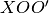 is called Epipolar Plane.
). We call it epiline corresponding to the point . It means, to find the point on the right image, search along this epiline. It should be somewhere on this line (Think of it this way, to find the matching point in other image, you need not search the whole image, just search along the epiline. So it provides better performance and accuracy). This is called Epipolar Constraint. Similarly all points will have its corresponding epilines in the other image. The plane 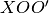 is called Epipolar Plane.
 and
and  are the camera centers. From the setup given above, you can see that projection of right camera is seen on the left image at the point,
are the camera centers. From the setup given above, you can see that projection of right camera is seen on the left image at the point,  . It is called the epipole. Epipole is the point of intersection of line through camera centers and the image planes. Similarly 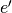 is the epipole of the left camera. In some cases, you won’t be able to locate the epipole in the image, they may be outside the image (which means, one camera doesn’t see the other).
. It is called the epipole. Epipole is the point of intersection of line through camera centers and the image planes. Similarly 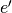 is the epipole of the left camera. In some cases, you won’t be able to locate the epipole in the image, they may be outside the image (which means, one camera doesn’t see the other).
All the epilines pass through its epipole. So to find the location of epipole, we can find many epilines and find their intersection point.
So in this session, we focus on finding epipolar lines and epipoles. But to find them, we need two more ingredients, Fundamental Matrix (F) and Essential Matrix (E). Essential Matrix contains the information about translation and rotation, which describe the location of the second camera relative to the first in global coordinates. See the image below (Image courtesy: Learning OpenCV by Gary Bradsky):

But we prefer measurements to be done in pixel coordinates, right? Fundamental Matrix contains the same information as Essential Matrix in addition to the information about the intrinsics of both cameras so that we can relate the two cameras in pixel coordinates. (If we are using rectified images and normalize the point by dividing by the focal lengths,  ). In simple words, Fundamental Matrix F, maps a point in one image to a line (epiline) in the other image. This is calculated from matching points from both the images. A minimum of 8 such points are required to find the fundamental matrix (while using 8-point algorithm). More points are preferred and use RANSAC to get a more robust result.
). In simple words, Fundamental Matrix F, maps a point in one image to a line (epiline) in the other image. This is calculated from matching points from both the images. A minimum of 8 such points are required to find the fundamental matrix (while using 8-point algorithm). More points are preferred and use RANSAC to get a more robust result.
Code¶
So first we need to find as many possible matches between two images to find the fundamental matrix. For this, we use SIFT descriptors with FLANN based matcher and ratio test.
import cv2
import numpy as np
from matplotlib import pyplot as plt
img1 = cv2.imread('myleft.jpg',0) #queryimage # left image
img2 = cv2.imread('myright.jpg',0) #trainimage # right image
sift = cv2.SIFT()
# find the keypoints and descriptors with SIFT
kp1, des1 = sift.detectAndCompute(img1,None)
kp2, des2 = sift.detectAndCompute(img2,None)
# FLANN parameters
FLANN_INDEX_KDTREE = 0
index_params = dict(algorithm = FLANN_INDEX_KDTREE, trees = 5)
search_params = dict(checks=50)
flann = cv2.FlannBasedMatcher(index_params,search_params)
matches = flann.knnMatch(des1,des2,k=2)
good = []
pts1 = []
pts2 = []
# ratio test as per Lowe's paper
for i,(m,n) in enumerate(matches):
if m.distance < 0.8*n.distance:
good.append(m)
pts2.append(kp2[m.trainIdx].pt)
pts1.append(kp1[m.queryIdx].pt)
Now we have the list of best matches from both the images. Let’s find the Fundamental Matrix.
pts1 = np.int32(pts1)
pts2 = np.int32(pts2)
F, mask = cv2.findFundamentalMat(pts1,pts2,cv2.FM_LMEDS)
# We select only inlier points
pts1 = pts1[mask.ravel()==1]
pts2 = pts2[mask.ravel()==1]
Next we find the epilines. Epilines corresponding to the points in first image is drawn on second image. So mentioning of correct images are important here. We get an array of lines. So we define a new function to draw these lines on the images.
def drawlines(img1,img2,lines,pts1,pts2):
''' img1 - image on which we draw the epilines for the points in img2
lines - corresponding epilines '''
r,c = img1.shape
img1 = cv2.cvtColor(img1,cv2.COLOR_GRAY2BGR)
img2 = cv2.cvtColor(img2,cv2.COLOR_GRAY2BGR)
for r,pt1,pt2 in zip(lines,pts1,pts2):
color = tuple(np.random.randint(0,255,3).tolist())
x0,y0 = map(int, [0, -r[2]/r[1] ])
x1,y1 = map(int, [c, -(r[2]+r[0]*c)/r[1] ])
img1 = cv2.line(img1, (x0,y0), (x1,y1), color,1)
img1 = cv2.circle(img1,tuple(pt1),5,color,-1)
img2 = cv2.circle(img2,tuple(pt2),5,color,-1)
return img1,img2
Now we find the epilines in both the images and draw them.
# Find epilines corresponding to points in right image (second image) and
# drawing its lines on left image
lines1 = cv2.computeCorrespondEpilines(pts2.reshape(-1,1,2), 2,F)
lines1 = lines1.reshape(-1,3)
img5,img6 = drawlines(img1,img2,lines1,pts1,pts2)
# Find epilines corresponding to points in left image (first image) and
# drawing its lines on right image
lines2 = cv2.computeCorrespondEpilines(pts1.reshape(-1,1,2), 1,F)
lines2 = lines2.reshape(-1,3)
img3,img4 = drawlines(img2,img1,lines2,pts2,pts1)
plt.subplot(121),plt.imshow(img5)
plt.subplot(122),plt.imshow(img3)
plt.show()
Below is the result we get:

You can see in the left image that all epilines are converging at a point outside the image at right side. That meeting point is the epipole.
For better results, images with good resolution and many non-planar points should be used.
Additional Resources¶
Exercises¶
- One important topic is the forward movement of camera. Then epipoles will be seen at the same locations in both with epilines emerging from a fixed point. See this discussion.
- Fundamental Matrix estimation is sensitive to quality of matches, outliers etc. It becomes worse when all selected matches lie on the same plane. Check this discussion.
Depth Map from Stereo Images¶
Goal¶
- In this session,
- We will learn to create depth map from stereo images.
Basics¶
In last session, we saw basic concepts like epipolar constraints and other related terms. We also saw that if we have two images of same scene, we can get depth information from that in an intuitive way. Below is an image and some simple mathematical formulas which proves that intuition. (Image Courtesy :

The above diagram contains equivalent triangles. Writing their equivalent equations will yield us following result:
and are the distance between points in image plane corresponding to the scene point 3D and their camera center.  is the distance between two cameras (which we know) and is the focal length of camera (already known). So in short, above equation says that the depth of a point in a scene is inversely proportional to the difference in distance of corresponding image points and their camera centers. So with this information, we can derive the depth of all pixels in an image.
is the distance between two cameras (which we know) and is the focal length of camera (already known). So in short, above equation says that the depth of a point in a scene is inversely proportional to the difference in distance of corresponding image points and their camera centers. So with this information, we can derive the depth of all pixels in an image.
So it finds corresponding matches between two images. We have already seen how epiline constraint make this operation faster and accurate. Once it finds matches, it finds the disparity. Let’s see how we can do it with OpenCV.
Code¶
Below code snippet shows a simple procedure to create disparity map.
import numpy as np
import cv2
from matplotlib import pyplot as plt
imgL = cv2.imread('tsukuba_l.png',0)
imgR = cv2.imread('tsukuba_r.png',0)
stereo = cv2.createStereoBM(numDisparities=16, blockSize=15)
disparity = stereo.compute(imgL,imgR)
plt.imshow(disparity,'gray')
plt.show()
Below image contains the original image (left) and its disparity map (right). As you can see, result is contaminated with high degree of noise. By adjusting the values of numDisparities and blockSize, you can get better results.

Note
More details to be added
Additional Resources¶
Exercises¶
- OpenCV samples contain an example of generating disparity map and its 3D reconstruction. Check
stereo_match.pyin OpenCV-Python samples.
Machine Learning¶
Learn to use kNN for classification Plus learn about handwritten digit recognition using kNN

Understand concepts of SVM

Learn to use K-Means Clustering to group data to a number of clusters. Plus learn to do color quantization using K-Means Clustering

K-Nearest Neighbour¶
Get a basic understanding of what kNN is

Now let’s use kNN in OpenCV for digit recognition OCR

Understanding k-Nearest Neighbour¶
Goal¶
In this chapter, we will understand the concepts of k-Nearest Neighbour (kNN) algorithm.
Theory¶
kNN is one of the simplest of classification algorithms available for supervised learning. The idea is to search for closest match of the test data in feature space. We will look into it with below image.

In the image, there are two families, Blue Squares and Red Triangles. We call each family as Class. Their houses are shown in their town map which we call feature space. (You can consider a feature space as a space where all datas are projected. For example, consider a 2D coordinate space. Each data has two features, x and y coordinates. You can represent this data in your 2D coordinate space, right? Now imagine if there are three features, you need 3D space. Now consider N features, where you need N-dimensional space, right? This N-dimensional space is its feature space. In our image, you can consider it as a 2D case with two features).
Now a new member comes into the town and creates a new home, which is shown as green circle. He should be added to one of these Blue/Red families. We call that process, Classification. What we do? Since we are dealing with kNN, let us apply this algorithm.
One method is to check who is his nearest neighbour. From the image, it is clear it is the Red Triangle family. So he is also added into Red Triangle. This method is called simply Nearest Neighbour, because classification depends only on the nearest neighbour.
But there is a problem with that. Red Triangle may be the nearest. But what if there are lot of Blue Squares near to him? Then Blue Squares have more strength in that locality than Red Triangle. So just checking nearest one is not sufficient. Instead we check some k nearest families. Then whoever is majority in them, the new guy belongs to that family. In our image, let’s take k=3, ie 3 nearest families. He has two Red and one Blue (there are two Blues equidistant, but since k=3, we take only one of them), so again he should be added to Red family. But what if we take k=7? Then he has 5 Blue families and 2 Red families. Great!! Now he should be added to Blue family. So it all changes with value of k. More funny thing is, what if k = 4? He has 2 Red and 2 Blue neighbours. It is a tie !!! So better take k as an odd number. So this method is called k-Nearest Neighbour since classification depends on k nearest neighbours.
Again, in kNN, it is true we are considering k neighbours, but we are giving equal importance to all, right? Is it justice? For example, take the case of k=4. We told it is a tie. But see, the 2 Red families are more closer to him than the other 2 Blue families. So he is more eligible to be added to Red. So how do we mathematically explain that? We give some weights to each family depending on their distance to the new-comer. For those who are near to him get higher weights while those are far away get lower weights. Then we add total weights of each family separately. Whoever gets highest total weights, new-comer goes to that family. This is called modified kNN.
So what are some important things you see here?
- You need to have information about all the houses in town, right? Because, we have to check the distance from new-comer to all the existing houses to find the nearest neighbour. If there are plenty of houses and families, it takes lots of memory, and more time for calculation also.
- There is almost zero time for any kind of training or preparation.
Now let’s see it in OpenCV.
kNN in OpenCV¶
We will do a simple example here, with two families (classes), just like above. Then in the next chapter, we will do much more better example.
So here, we label the Red family as Class-0 (so denoted by 0) and Blue family as Class-1 (denoted by 1). We create 25 families or 25 training data, and label them either Class-0 or Class-1. We do all these with the help of Random Number Generator in Numpy.
Then we plot it with the help of Matplotlib. Red families are shown as Red Triangles and Blue families are shown as Blue Squares.
import cv2
import numpy as np
import matplotlib.pyplot as plt
# Feature set containing (x,y) values of 25 known/training data
trainData = np.random.randint(0,100,(25,2)).astype(np.float32)
# Labels each one either Red or Blue with numbers 0 and 1
responses = np.random.randint(0,2,(25,1)).astype(np.float32)
# Take Red families and plot them
red = trainData[responses.ravel()==0]
plt.scatter(red[:,0],red[:,1],80,'r','^')
# Take Blue families and plot them
blue = trainData[responses.ravel()==1]
plt.scatter(blue[:,0],blue[:,1],80,'b','s')
plt.show()
You will get something similar to our first image. Since you are using random number generator, you will be getting different data each time you run the code.
Next initiate the kNN algorithm and pass the trainData and responses to train the kNN (It constructs a search tree).
Then we will bring one new-comer and classify him to a family with the help of kNN in OpenCV. Before going to kNN, we need to know something on our test data (data of new comers). Our data should be a floating point array with size  . Then we find the nearest neighbours of new-comer. We can specify how many neighbours we want. It returns:
. Then we find the nearest neighbours of new-comer. We can specify how many neighbours we want. It returns:
- The label given to new-comer depending upon the kNN theory we saw earlier. If you want Nearest Neighbour algorithm, just specify k=1 where k is the number of neighbours.
- The labels of k-Nearest Neighbours.
- Corresponding distances from new-comer to each nearest neighbour.
So let’s see how it works. New comer is marked in green color.
newcomer = np.random.randint(0,100,(1,2)).astype(np.float32)
plt.scatter(newcomer[:,0],newcomer[:,1],80,'g','o')
knn = cv2.KNearest()
knn.train(trainData,responses)
ret, results, neighbours ,dist = knn.find_nearest(newcomer, 3)
print "result: ", results,"\n"
print "neighbours: ", neighbours,"\n"
print "distance: ", dist
plt.show()
I got the result as follows:
result: [[ 1.]]
neighbours: [[ 1. 1. 1.]]
distance: [[ 53. 58. 61.]]
It says our new-comer got 3 neighbours, all from Blue family. Therefore, he is labelled as Blue family. It is obvious from plot below:

If you have large number of data, you can just pass it as array. Corresponding results are also obtained as arrays.
# 10 new comers
newcomers = np.random.randint(0,100,(10,2)).astype(np.float32)
ret, results,neighbours,dist = knn.find_nearest(newcomer, 3)
# The results also will contain 10 labels.
Additional Resources¶
Exercises¶
OCR of Hand-written Data using kNN¶
Goal¶
- In this chapter
- We will use our knowledge on kNN to build a basic OCR application.
- We will try with Digits and Alphabets data available that comes with OpenCV.
OCR of Hand-written Digits¶
Our goal is to build an application which can read the handwritten digits. For this we need some train_data and test_data. OpenCV comes with an image digits.png (in the folder opencv/samples/python2/data/) which has 5000 handwritten digits (500 for each digit). Each digit is a 20x20 image. So our first step is to split this image into 5000 different digits. For each digit, we flatten it into a single row with 400 pixels. That is our feature set, ie intensity values of all pixels. It is the simplest feature set we can create. We use first 250 samples of each digit as train_data, and next 250 samples as test_data. So let’s prepare them first.
import numpy as np
import cv2
from matplotlib import pyplot as plt
img = cv2.imread('digits.png')
gray = cv2.cvtColor(img,cv2.COLOR_BGR2GRAY)
# Now we split the image to 5000 cells, each 20x20 size
cells = [np.hsplit(row,100) for row in np.vsplit(gray,50)]
# Make it into a Numpy array. It size will be (50,100,20,20)
x = np.array(cells)
# Now we prepare train_data and test_data.
train = x[:,:50].reshape(-1,400).astype(np.float32) # Size = (2500,400)
test = x[:,50:100].reshape(-1,400).astype(np.float32) # Size = (2500,400)
# Create labels for train and test data
k = np.arange(10)
train_labels = np.repeat(k,250)[:,np.newaxis]
test_labels = train_labels.copy()
# Initiate kNN, train the data, then test it with test data for k=1
knn = cv2.KNearest()
knn.train(train,train_labels)
ret,result,neighbours,dist = knn.find_nearest(test,k=5)
# Now we check the accuracy of classification
# For that, compare the result with test_labels and check which are wrong
matches = result==test_labels
correct = np.count_nonzero(matches)
accuracy = correct*100.0/result.size
print accuracy
So our basic OCR app is ready. This particular example gave me an accuracy of 91%. One option improve accuracy is to add more data for training, especially the wrong ones. So instead of finding this training data everytime I start application, I better save it, so that next time, I directly read this data from a file and start classification. You can do it with the help of some Numpy functions like np.savetxt, np.savez, np.load etc. Please check their docs for more details.
# save the data
np.savez('knn_data.npz',train=train, train_labels=train_labels)
# Now load the data
with np.load('knn_data.npz') as data:
print data.files
train = data['train']
train_labels = data['train_labels']
In my system, it takes around 4.4 MB of memory. Since we are using intensity values (uint8 data) as features, it would be better to convert the data to np.uint8 first and then save it. It takes only 1.1 MB in this case. Then while loading, you can convert back into float32.
OCR of English Alphabets¶
Next we will do the same for English alphabets, but there is a slight change in data and feature set. Here, instead of images, OpenCV comes with a data file, letter-recognition.data in opencv/samples/cpp/ folder. If you open it, you will see 20000 lines which may, on first sight, look like garbage. Actually, in each row, first column is an alphabet which is our label. Next 16 numbers following it are its different features. These features are obtained from UCI Machine Learning Repository. You can find the details of these features in this page.
There are 20000 samples available, so we take first 10000 data as training samples and remaining 10000 as test samples. We should change the alphabets to ascii characters because we can’t work with alphabets directly.
import cv2
import numpy as np
import matplotlib.pyplot as plt
# Load the data, converters convert the letter to a number
data= np.loadtxt('letter-recognition.data', dtype= 'float32', delimiter = ',',
converters= {0: lambda ch: ord(ch)-ord('A')})
# split the data to two, 10000 each for train and test
train, test = np.vsplit(data,2)
# split trainData and testData to features and responses
responses, trainData = np.hsplit(train,[1])
labels, testData = np.hsplit(test,[1])
# Initiate the kNN, classify, measure accuracy.
knn = cv2.KNearest()
knn.train(trainData, responses)
ret, result, neighbours, dist = knn.find_nearest(testData, k=5)
correct = np.count_nonzero(result == labels)
accuracy = correct*100.0/10000
print accuracy
It gives me an accuracy of 93.22%. Again, if you want to increase accuracy, you can iteratively add error data in each level.
Additional Resources¶
Exercises¶
Support Vector Machines (SVM)¶
Get a basic understanding of what SVM is

Let’s use SVM functionalities in OpenCV

Understanding SVM¶
Goal¶
- In this chapter
- We will see an intuitive understanding of SVM
Theory¶
Consider the image below which has two types of data, red and blue. In kNN, for a test data, we used to measure its distance to all the training samples and take the one with minimum distance. It takes plenty of time to measure all the distances and plenty of memory to store all the training-samples. But considering the data given in image, should we need that much?

Consider another idea. We find a line, which divides both the data to two regions. When we get a new test_data  , just substitute it in
, just substitute it in  . If
. If  , it belongs to blue group, else it belongs to red group. We can call this line as Decision Boundary. It is very simple and memory-efficient. Such data which can be divided into two with a straight line (or hyperplanes in higher dimensions) is called Linear Separable.
, it belongs to blue group, else it belongs to red group. We can call this line as Decision Boundary. It is very simple and memory-efficient. Such data which can be divided into two with a straight line (or hyperplanes in higher dimensions) is called Linear Separable.
So in above image, you can see plenty of such lines are possible. Which one we will take? Very intuitively we can say that the line should be passing as far as possible from all the points. Why? Because there can be noise in the incoming data. This data should not affect the classification accuracy. So taking a farthest line will provide more immunity against noise. So what SVM does is to find a straight line (or hyperplane) with largest minimum distance to the training samples. See the bold line in below image passing through the center.

So to find this Decision Boundary, you need training data. Do you need all? NO. Just the ones which are close to the opposite group are sufficient. In our image, they are the one blue filled circle and two red filled squares. We can call them Support Vectors and the lines passing through them are called Support Planes. They are adequate for finding our decision boundary. We need not worry about all the data. It helps in data reduction.
What happened is, first two hyperplanes are found which best represents the data. For eg, blue data is represented by while red data is represented by where  is weight vector ( ) and is the feature vector (
is weight vector ( ) and is the feature vector (![x = [x_1,x_2,..., x_n]](_images/math/2191d7168dbb9daf9d46b22e43b81bb2e5f9c401.png) ).
).  is the bias. Weight vector decides the orientation of decision boundary while bias point decides its location. Now decision boundary is defined to be midway between these hyperplanes, so expressed as
is the bias. Weight vector decides the orientation of decision boundary while bias point decides its location. Now decision boundary is defined to be midway between these hyperplanes, so expressed as  . The minimum distance from support vector to the decision boundary is given by,
. The minimum distance from support vector to the decision boundary is given by,  . Margin is twice this distance, and we need to maximize this margin. i.e. we need to minimize a new function with some constraints which can expressed below:
. Margin is twice this distance, and we need to maximize this margin. i.e. we need to minimize a new function with some constraints which can expressed below:

where  is the label of each class,
is the label of each class, ![t_i \in [-1,1]](_images/math/6513fc85b1daf439bb5a4ab1ea313ae91358bb41.png) .
.
Consider some data which can’t be divided into two with a straight line. For example, consider an one-dimensional data where ‘X’ is at -3 & +3 and ‘O’ is at -1 & +1. Clearly it is not linearly separable. But there are methods to solve these kinds of problems. If we can map this data set with a function, , we get ‘X’ at 9 and ‘O’ at 1 which are linear separable.
Otherwise we can convert this one-dimensional to two-dimensional data. We can use function to map this data. Then ‘X’ becomes (-3,9) and (3,9) while ‘O’ becomes (-1,1) and (1,1). This is also linear separable. In short, chance is more for a non-linear separable data in lower-dimensional space to become linear separable in higher-dimensional space.
In general, it is possible to map points in a d-dimensional space to some D-dimensional space  to check the possibility of linear separability. There is an idea which helps to compute the dot product in the high-dimensional (kernel) space by performing computations in the low-dimensional input (feature) space. We can illustrate with following example.
to check the possibility of linear separability. There is an idea which helps to compute the dot product in the high-dimensional (kernel) space by performing computations in the low-dimensional input (feature) space. We can illustrate with following example.
Consider two points in two-dimensional space, and  . Let
. Let  be a mapping function which maps a two-dimensional point to three-dimensional space as follows:
be a mapping function which maps a two-dimensional point to three-dimensional space as follows:

Let us define a kernel function which does a dot product between two points, shown below:

It means, a dot product in three-dimensional space can be achieved using squared dot product in two-dimensional space. This can be applied to higher dimensional space. So we can calculate higher dimensional features from lower dimensions itself. Once we map them, we get a higher dimensional space.
In addition to all these concepts, there comes the problem of misclassification. So just finding decision boundary with maximum margin is not sufficient. We need to consider the problem of misclassification errors also. Sometimes, it may be possible to find a decision boundary with less margin, but with reduced misclassification. Anyway we need to modify our model such that it should find decision boundary with maximum margin, but with less misclassification. The minimization criteria is modified as:
Below image shows this concept. For each sample of the training data a new parameter is defined. It is the distance from its corresponding training sample to their correct decision region. For those who are not misclassified, they fall on their corresponding support planes, so their distance is zero.

So the new optimization problem is :
How should the parameter C be chosen? It is obvious that the answer to this question depends on how the training data is distributed. Although there is no general answer, it is useful to take into account these rules:
- Large values of C give solutions with less misclassification errors but a smaller margin. Consider that in this case it is expensive to make misclassification errors. Since the aim of the optimization is to minimize the argument, few misclassifications errors are allowed.
- Small values of C give solutions with bigger margin and more classification errors. In this case the minimization does not consider that much the term of the sum so it focuses more on finding a hyperplane with big margin.
Additional Resources¶
Exercises¶
OCR of Hand-written Data using SVM¶
OCR of Hand-written Digits¶
In kNN, we directly used pixel intensity as the feature vector. This time we will use Histogram of Oriented Gradients (HOG) as feature vectors.
Here, before finding the HOG, we deskew the image using its second order moments. So we first define a function deskew() which takes a digit image and deskew it. Below is the deskew() function:
def deskew(img):
m = cv2.moments(img)
if abs(m['mu02']) < 1e-2:
return img.copy()
skew = m['mu11']/m['mu02']
M = np.float32([[1, skew, -0.5*SZ*skew], [0, 1, 0]])
img = cv2.warpAffine(img,M,(SZ, SZ),flags=affine_flags)
return img
Below image shows above deskew function applied to an image of zero. Left image is the original image and right image is the deskewed image.

Next we have to find the HOG Descriptor of each cell. For that, we find Sobel derivatives of each cell in X and Y direction. Then find their magnitude and direction of gradient at each pixel. This gradient is quantized to 16 integer values. Divide this image to four sub-squares. For each sub-square, calculate the histogram of direction (16 bins) weighted with their magnitude. So each sub-square gives you a vector containing 16 values. Four such vectors (of four sub-squares) together gives us a feature vector containing 64 values. This is the feature vector we use to train our data.
def hog(img):
gx = cv2.Sobel(img, cv2.CV_32F, 1, 0)
gy = cv2.Sobel(img, cv2.CV_32F, 0, 1)
mag, ang = cv2.cartToPolar(gx, gy)
# quantizing binvalues in (0...16)
bins = np.int32(bin_n*ang/(2*np.pi))
# Divide to 4 sub-squares
bin_cells = bins[:10,:10], bins[10:,:10], bins[:10,10:], bins[10:,10:]
mag_cells = mag[:10,:10], mag[10:,:10], mag[:10,10:], mag[10:,10:]
hists = [np.bincount(b.ravel(), m.ravel(), bin_n) for b, m in zip(bin_cells, mag_cells)]
hist = np.hstack(hists)
return hist
Finally, as in the previous case, we start by splitting our big dataset into individual cells. For every digit, 250 cells are reserved for training data and remaining 250 data is reserved for testing. Full code is given below:
import cv2
import numpy as np
SZ=20
bin_n = 16 # Number of bins
svm_params = dict( kernel_type = cv2.SVM_LINEAR,
svm_type = cv2.SVM_C_SVC,
C=2.67, gamma=5.383 )
affine_flags = cv2.WARP_INVERSE_MAP|cv2.INTER_LINEAR
def deskew(img):
m = cv2.moments(img)
if abs(m['mu02']) < 1e-2:
return img.copy()
skew = m['mu11']/m['mu02']
M = np.float32([[1, skew, -0.5*SZ*skew], [0, 1, 0]])
img = cv2.warpAffine(img,M,(SZ, SZ),flags=affine_flags)
return img
def hog(img):
gx = cv2.Sobel(img, cv2.CV_32F, 1, 0)
gy = cv2.Sobel(img, cv2.CV_32F, 0, 1)
mag, ang = cv2.cartToPolar(gx, gy)
bins = np.int32(bin_n*ang/(2*np.pi)) # quantizing binvalues in (0...16)
bin_cells = bins[:10,:10], bins[10:,:10], bins[:10,10:], bins[10:,10:]
mag_cells = mag[:10,:10], mag[10:,:10], mag[:10,10:], mag[10:,10:]
hists = [np.bincount(b.ravel(), m.ravel(), bin_n) for b, m in zip(bin_cells, mag_cells)]
hist = np.hstack(hists) # hist is a 64 bit vector
return hist
img = cv2.imread('digits.png',0)
cells = [np.hsplit(row,100) for row in np.vsplit(img,50)]
# First half is trainData, remaining is testData
train_cells = [ i[:50] for i in cells ]
test_cells = [ i[50:] for i in cells]
###### Now training ########################
deskewed = [map(deskew,row) for row in train_cells]
hogdata = [map(hog,row) for row in deskewed]
trainData = np.float32(hogdata).reshape(-1,64)
responses = np.float32(np.repeat(np.arange(10),250)[:,np.newaxis])
svm = cv2.SVM()
svm.train(trainData,responses, params=svm_params)
svm.save('svm_data.dat')
###### Now testing ########################
deskewed = [map(deskew,row) for row in test_cells]
hogdata = [map(hog,row) for row in deskewed]
testData = np.float32(hogdata).reshape(-1,bin_n*4)
result = svm.predict_all(testData)
####### Check Accuracy ########################
mask = result==responses
correct = np.count_nonzero(mask)
print correct*100.0/result.size
This particular technique gave me nearly 94% accuracy. You can try different values for various parameters of SVM to check if higher accuracy is possible. Or you can read technical papers on this area and try to implement them.
Additional Resources¶
Exercises¶
- OpenCV samples contain
digits.pywhich applies a slight improvement of the above method to get improved result. It also contains the reference. Check it and understand it.
K-Means Clustering¶
Read to get an intuitive understanding of K-Means Clustering

Now let’s try K-Means functions in OpenCV

Understanding K-Means Clustering¶
Goal¶
In this chapter, we will understand the concepts of K-Means Clustering, how it works etc.
Theory¶
We will deal this with an example which is commonly used.
Consider a company, which is going to release a new model of T-shirt to market. Obviously they will have to manufacture models in different sizes to satisfy people of all sizes. So the company make a data of people’s height and weight, and plot them on to a graph, as below:

Company can’t create t-shirts with all the sizes. Instead, they divide people to Small, Medium and Large, and manufacture only these 3 models which will fit into all the people. This grouping of people into three groups can be done by k-means clustering, and algorithm provides us best 3 sizes, which will satisfy all the people. And if it doesn’t, company can divide people to more groups, may be five, and so on. Check image below :

This algorithm is an iterative process. We will explain it step-by-step with the help of images.
Consider a set of data as below ( You can consider it as t-shirt problem). We need to cluster this data into two groups.

Step : 1 - Algorithm randomly chooses two centroids, and  (sometimes, any two data are taken as the centroids).
(sometimes, any two data are taken as the centroids).
Step : 2 - It calculates the distance from each point to both centroids. If a test data is more closer to , then that data is labelled with ‘0’. If it is closer to , then labelled as ‘1’ (If more centroids are there, labelled as ‘2’,‘3’ etc).
In our case, we will color all ‘0’ labelled with red, and ‘1’ labelled with blue. So we get following image after above operations.

Step : 3 - Next we calculate the average of all blue points and red points separately and that will be our new centroids. That is and shift to newly calculated centroids. (Remember, the images shown are not true values and not to true scale, it is just for demonstration only).
And again, perform step 2 with new centroids and label data to ‘0’ and ‘1’.
So we get result as below :

Now Step - 2 and Step - 3 are iterated until both centroids are converged to fixed points. (Or it may be stopped depending on the criteria we provide, like maximum number of iterations, or a specific accuracy is reached etc.) These points are such that sum of distances between test data and their corresponding centroids are minimum. Or simply, sum of distances between  and is minimum.
and is minimum.
![minimize \;\bigg[J = \sum_{All\: Red_Points}distance(C1,Red\_Point) + \sum_{All\: Blue\_Points}distance(C2,Blue\_Point)\bigg]](_images/math/9b80d05ad90341c7c41b2a3da583f6c532465a9d.png)
Final result almost looks like below :

So this is just an intuitive understanding of K-Means Clustering. For more details and mathematical explanation, please read any standard machine learning textbooks or check links in additional resources. It is just a top layer of K-Means clustering. There are a lot of modifications to this algorithm like, how to choose the initial centroids, how to speed up the iteration process etc.
Additional Resources¶
- Machine Learning Course, Video lectures by Prof. Andrew Ng (Some of the images are taken from this)
Exercises¶
K-Means Clustering in OpenCV¶
Goal¶
- Learn to use cv2.kmeans() function in OpenCV for data clustering
Understanding Parameters¶
samples : It should be of np.float32 data type, and each feature should be put in a single column.
nclusters(K) : Number of clusters required at end
- criteria : It is the iteration termination criteria. When this criteria is satisfied, algorithm iteration stops. Actually, it should be a tuple of 3 parameters. They are
( type, max_iter, epsilon ):
- 3.a - type of termination criteria : It has 3 flags as below:
- cv2.TERM_CRITERIA_EPS - stop the algorithm iteration if specified accuracy, epsilon, is reached. cv2.TERM_CRITERIA_MAX_ITER - stop the algorithm after the specified number of iterations, max_iter. cv2.TERM_CRITERIA_EPS + cv2.TERM_CRITERIA_MAX_ITER - stop the iteration when any of the above condition is met.
- 3.b - max_iter - An integer specifying maximum number of iterations.
- 3.c - epsilon - Required accuracy
attempts : Flag to specify the number of times the algorithm is executed using different initial labellings. The algorithm returns the labels that yield the best compactness. This compactness is returned as output.
flags : This flag is used to specify how initial centers are taken. Normally two flags are used for this : cv2.KMEANS_PP_CENTERS and cv2.KMEANS_RANDOM_CENTERS.
- compactness : It is the sum of squared distance from each point to their corresponding centers.
- labels : This is the label array (same as ‘code’ in previous article) where each element marked ‘0’, ‘1’.....
- centers : This is array of centers of clusters.
Now we will see how to apply K-Means algorithm with three examples.
1. Data with Only One Feature¶
Consider, you have a set of data with only one feature, ie one-dimensional. For eg, we can take our t-shirt problem where you use only height of people to decide the size of t-shirt.
So we start by creating data and plot it in Matplotlib
import numpy as np
import cv2
from matplotlib import pyplot as plt
x = np.random.randint(25,100,25)
y = np.random.randint(175,255,25)
z = np.hstack((x,y))
z = z.reshape((50,1))
z = np.float32(z)
plt.hist(z,256,[0,256]),plt.show()
So we have ‘z’ which is an array of size 50, and values ranging from 0 to 255. I have reshaped ‘z’ to a column vector. It will be more useful when more than one features are present. Then I made data of np.float32 type.
We get following image :

Now we apply the KMeans function. Before that we need to specify the criteria. My criteria is such that, whenever 10 iterations of algorithm is ran, or an accuracy of epsilon = 1.0 is reached, stop the algorithm and return the answer.
# Define criteria = ( type, max_iter = 10 , epsilon = 1.0 )
criteria = (cv2.TERM_CRITERIA_EPS + cv2.TERM_CRITERIA_MAX_ITER, 10, 1.0)
# Set flags (Just to avoid line break in the code)
flags = cv2.KMEANS_RANDOM_CENTERS
# Apply KMeans
compactness,labels,centers = cv2.kmeans(z,2,None,criteria,10,flags)
This gives us the compactness, labels and centers. In this case, I got centers as 60 and 207. Labels will have the same size as that of test data where each data will be labelled as ‘0’,‘1’,‘2’ etc. depending on their centroids. Now we split the data to different clusters depending on their labels.
A = z[labels==0]
B = z[labels==1]
Now we plot A in Red color and B in Blue color and their centroids in Yellow color.
# Now plot 'A' in red, 'B' in blue, 'centers' in yellow
plt.hist(A,256,[0,256],color = 'r')
plt.hist(B,256,[0,256],color = 'b')
plt.hist(centers,32,[0,256],color = 'y')
plt.show()
Below is the output we got:

2. Data with Multiple Features¶
In previous example, we took only height for t-shirt problem. Here, we will take both height and weight, ie two features.
Remember, in previous case, we made our data to a single column vector. Each feature is arranged in a column, while each row corresponds to an input test sample.
For example, in this case, we set a test data of size 50x2, which are heights and weights of 50 people. First column corresponds to height of all the 50 people and second column corresponds to their weights. First row contains two elements where first one is the height of first person and second one his weight. Similarly remaining rows corresponds to heights and weights of other people. Check image below:

Now I am directly moving to the code:
import numpy as np
import cv2
from matplotlib import pyplot as plt
X = np.random.randint(25,50,(25,2))
Y = np.random.randint(60,85,(25,2))
Z = np.vstack((X,Y))
# convert to np.float32
Z = np.float32(Z)
# define criteria and apply kmeans()
criteria = (cv2.TERM_CRITERIA_EPS + cv2.TERM_CRITERIA_MAX_ITER, 10, 1.0)
ret,label,center=cv2.kmeans(Z,2,None,criteria,10,cv2.KMEANS_RANDOM_CENTERS)
# Now separate the data, Note the flatten()
A = Z[label.ravel()==0]
B = Z[label.ravel()==1]
# Plot the data
plt.scatter(A[:,0],A[:,1])
plt.scatter(B[:,0],B[:,1],c = 'r')
plt.scatter(center[:,0],center[:,1],s = 80,c = 'y', marker = 's')
plt.xlabel('Height'),plt.ylabel('Weight')
plt.show()
Below is the output we get:

3. Color Quantization¶
Color Quantization is the process of reducing number of colors in an image. One reason to do so is to reduce the memory. Sometimes, some devices may have limitation such that it can produce only limited number of colors. In those cases also, color quantization is performed. Here we use k-means clustering for color quantization.
There is nothing new to be explained here. There are 3 features, say, R,G,B. So we need to reshape the image to an array of Mx3 size (M is number of pixels in image). And after the clustering, we apply centroid values (it is also R,G,B) to all pixels, such that resulting image will have specified number of colors. And again we need to reshape it back to the shape of original image. Below is the code:
import numpy as np
import cv2
img = cv2.imread('home.jpg')
Z = img.reshape((-1,3))
# convert to np.float32
Z = np.float32(Z)
# define criteria, number of clusters(K) and apply kmeans()
criteria = (cv2.TERM_CRITERIA_EPS + cv2.TERM_CRITERIA_MAX_ITER, 10, 1.0)
K = 8
ret,label,center=cv2.kmeans(Z,K,None,criteria,10,cv2.KMEANS_RANDOM_CENTERS)
# Now convert back into uint8, and make original image
center = np.uint8(center)
res = center[label.flatten()]
res2 = res.reshape((img.shape))
cv2.imshow('res2',res2)
cv2.waitKey(0)
cv2.destroyAllWindows()
See the result below for K=8:

Additional Resources¶
Exercises¶
Computational Photography¶
Here you will learn different OpenCV functionalities related to Computational Photography like image denoising etc.
See a good technique to remove noises in images called Non-Local Means Denoising

Do you have a old degraded photo with many black spots and strokes on it? Take it. Let’s try to restore them with a technique called image inpainting.

Image Denoising¶
Goal¶
In this chapter,
- You will learn about Non-local Means Denoising algorithm to remove noise in the image.
- You will see different functions like cv2.fastNlMeansDenoising(), cv2.fastNlMeansDenoisingColored() etc.
Theory¶
In earlier chapters, we have seen many image smoothing techniques like Gaussian Blurring, Median Blurring etc and they were good to some extent in removing small quantities of noise. In those techniques, we took a small neighbourhood around a pixel and did some operations like gaussian weighted average, median of the values etc to replace the central element. In short, noise removal at a pixel was local to its neighbourhood.
There is a property of noise. Noise is generally considered to be a random variable with zero mean. Consider a noisy pixel,  where
where  is the true value of pixel and is the noise in that pixel. You can take large number of same pixels (say
is the true value of pixel and is the noise in that pixel. You can take large number of same pixels (say  ) from different images and computes their average. Ideally, you should get since mean of noise is zero.
) from different images and computes their average. Ideally, you should get since mean of noise is zero.
You can verify it yourself by a simple setup. Hold a static camera to a certain location for a couple of seconds. This will give you plenty of frames, or a lot of images of the same scene. Then write a piece of code to find the average of all the frames in the video (This should be too simple for you now ). Compare the final result and first frame. You can see reduction in noise. Unfortunately this simple method is not robust to camera and scene motions. Also often there is only one noisy image available.
So idea is simple, we need a set of similar images to average out the noise. Consider a small window (say 5x5 window) in the image. Chance is large that the same patch may be somewhere else in the image. Sometimes in a small neigbourhood around it. What about using these similar patches together and find their average? For that particular window, that is fine. See an example image below:

The blue patches in the image looks the similar. Green patches looks similar. So we take a pixel, take small window around it, search for similar windows in the image, average all the windows and replace the pixel with the result we got. This method is Non-Local Means Denoising. It takes more time compared to blurring techniques we saw earlier, but its result is very good. More details and online demo can be found at first link in additional resources.
For color images, image is converted to CIELAB colorspace and then it separately denoise L and AB components.
Image Denoising in OpenCV¶
OpenCV provides four variations of this technique.
- cv2.fastNlMeansDenoising() - works with a single grayscale images
- cv2.fastNlMeansDenoisingColored() - works with a color image.
- cv2.fastNlMeansDenoisingMulti() - works with image sequence captured in short period of time (grayscale images)
- cv2.fastNlMeansDenoisingColoredMulti() - same as above, but for color images.
- Common arguments are:
- h : parameter deciding filter strength. Higher h value removes noise better, but removes details of image also. (10 is ok)
- hForColorComponents : same as h, but for color images only. (normally same as h)
- templateWindowSize : should be odd. (recommended 7)
- searchWindowSize : should be odd. (recommended 21)
Please visit first link in additional resources for more details on these parameters.
We will demonstrate 2 and 3 here. Rest is left for you.
1. cv2.fastNlMeansDenoisingColored()¶
As mentioned above it is used to remove noise from color images. (Noise is expected to be gaussian). See the example below:
import numpy as np
import cv2
from matplotlib import pyplot as plt
img = cv2.imread('die.png')
dst = cv2.fastNlMeansDenoisingColored(img,None,10,10,7,21)
plt.subplot(121),plt.imshow(img)
plt.subplot(122),plt.imshow(dst)
plt.show()
Below is a zoomed version of result. My input image has a gaussian noise of  . See the result:
. See the result:

2. cv2.fastNlMeansDenoisingMulti()¶
Now we will apply the same method to a video. The first argument is the list of noisy frames. Second argument imgToDenoiseIndex specifies which frame we need to denoise, for that we pass the index of frame in our input list. Third is the temporalWindowSize which specifies the number of nearby frames to be used for denoising. It should be odd. In that case, a total of temporalWindowSize frames are used where central frame is the frame to be denoised. For example, you passed a list of 5 frames as input. Let imgToDenoiseIndex = 2 and temporalWindowSize = 3. Then frame-1, frame-2 and frame-3 are used to denoise frame-2. Let’s see an example.
import numpy as np
import cv2
from matplotlib import pyplot as plt
cap = cv2.VideoCapture('vtest.avi')
# create a list of first 5 frames
img = [cap.read()[1] for i in xrange(5)]
# convert all to grayscale
gray = [cv2.cvtColor(i, cv2.COLOR_BGR2GRAY) for i in img]
# convert all to float64
gray = [np.float64(i) for i in gray]
# create a noise of variance 25
noise = np.random.randn(*gray[1].shape)*10
# Add this noise to images
noisy = [i+noise for i in gray]
# Convert back to uint8
noisy = [np.uint8(np.clip(i,0,255)) for i in noisy]
# Denoise 3rd frame considering all the 5 frames
dst = cv2.fastNlMeansDenoisingMulti(noisy, 2, 5, None, 4, 7, 35)
plt.subplot(131),plt.imshow(gray[2],'gray')
plt.subplot(132),plt.imshow(noisy[2],'gray')
plt.subplot(133),plt.imshow(dst,'gray')
plt.show()
Below image shows a zoomed version of the result we got:

It takes considerable amount of time for computation. In the result, first image is the original frame, second is the noisy one, third is the denoised image.
Additional Resources¶
- http://www.ipol.im/pub/art/2011/bcm_nlm/ (It has the details, online demo etc. Highly recommended to visit. Our test image is generated from this link)
- Online course at coursera (First image taken from here)
Exercises¶
Image Inpainting¶
Goal¶
- In this chapter,
- We will learn how to remove small noises, strokes etc in old photographs by a method called inpainting
- We will see inpainting functionalities in OpenCV.
Basics¶
Most of you will have some old degraded photos at your home with some black spots, some strokes etc on it. Have you ever thought of restoring it back? We can’t simply erase them in a paint tool because it is will simply replace black structures with white structures which is of no use. In these cases, a technique called image inpainting is used. The basic idea is simple: Replace those bad marks with its neighbouring pixels so that it looks like the neigbourhood. Consider the image shown below (taken from Wikipedia):

Several algorithms were designed for this purpose and OpenCV provides two of them. Both can be accessed by the same function, cv2.inpaint()
First algorithm is based on the paper “An Image Inpainting Technique Based on the Fast Marching Method” by Alexandru Telea in 2004. It is based on Fast Marching Method. Consider a region in the image to be inpainted. Algorithm starts from the boundary of this region and goes inside the region gradually filling everything in the boundary first. It takes a small neighbourhood around the pixel on the neigbourhood to be inpainted. This pixel is replaced by normalized weighted sum of all the known pixels in the neigbourhood. Selection of the weights is an important matter. More weightage is given to those pixels lying near to the point, near to the normal of the boundary and those lying on the boundary contours. Once a pixel is inpainted, it moves to next nearest pixel using Fast Marching Method. FMM ensures those pixels near the known pixels are inpainted first, so that it just works like a manual heuristic operation. This algorithm is enabled by using the flag, cv2.INPAINT_TELEA.
Second algorithm is based on the paper “Navier-Stokes, Fluid Dynamics, and Image and Video Inpainting” by Bertalmio, Marcelo, Andrea L. Bertozzi, and Guillermo Sapiro in 2001. This algorithm is based on fluid dynamics and utilizes partial differential equations. Basic principle is heurisitic. It first travels along the edges from known regions to unknown regions (because edges are meant to be continuous). It continues isophotes (lines joining points with same intensity, just like contours joins points with same elevation) while matching gradient vectors at the boundary of the inpainting region. For this, some methods from fluid dynamics are used. Once they are obtained, color is filled to reduce minimum variance in that area. This algorithm is enabled by using the flag, cv2.INPAINT_NS.
Code¶
We need to create a mask of same size as that of input image, where non-zero pixels corresponds to the area which is to be inpainted. Everything else is simple. My image is degraded with some black strokes (I added manually). I created a corresponding strokes with Paint tool.
import numpy as np
import cv2
img = cv2.imread('messi_2.jpg')
mask = cv2.imread('mask2.png',0)
dst = cv2.inpaint(img,mask,3,cv2.INPAINT_TELEA)
cv2.imshow('dst',dst)
cv2.waitKey(0)
cv2.destroyAllWindows()
See the result below. First image shows degraded input. Second image is the mask. Third image is the result of first algorithm and last image is the result of second algorithm.

Additional Resources¶
- Bertalmio, Marcelo, Andrea L. Bertozzi, and Guillermo Sapiro. “Navier-stokes, fluid dynamics, and image and video inpainting.” In Computer Vision and Pattern Recognition, 2001. CVPR 2001. Proceedings of the 2001 IEEE Computer Society Conference on, vol. 1, pp. I-355. IEEE, 2001.
- Telea, Alexandru. “An image inpainting technique based on the fast marching method.” Journal of graphics tools 9.1 (2004): 23-34.
Exercises¶
- OpenCV comes with an interactive sample on inpainting,
samples/python2/inpaint.py, try it. - A few months ago, I watched a video on Content-Aware Fill, an advanced inpainting technique used in Adobe Photoshop. On further search, I was able to find that same technique is already there in GIMP with different name, “Resynthesizer” (You need to install separate plugin). I am sure you will enjoy the technique.
Object Detection¶
Face detection using haar-cascades
Face Detection using Haar Cascades¶
Goal¶
In this session,
- We will see the basics of face detection using Haar Feature-based Cascade Classifiers
- We will extend the same for eye detection etc.
Basics¶
Object Detection using Haar feature-based cascade classifiers is an effective object detection method proposed by Paul Viola and Michael Jones in their paper, “Rapid Object Detection using a Boosted Cascade of Simple Features” in 2001. It is a machine learning based approach where a cascade function is trained from a lot of positive and negative images. It is then used to detect objects in other images.
Here we will work with face detection. Initially, the algorithm needs a lot of positive images (images of faces) and negative images (images without faces) to train the classifier. Then we need to extract features from it. For this, haar features shown in below image are used. They are just like our convolutional kernel. Each feature is a single value obtained by subtracting sum of pixels under white rectangle from sum of pixels under black rectangle.

Now all possible sizes and locations of each kernel is used to calculate plenty of features. (Just imagine how much computation it needs? Even a 24x24 window results over 160000 features). For each feature calculation, we need to find sum of pixels under white and black rectangles. To solve this, they introduced the integral images. It simplifies calculation of sum of pixels, how large may be the number of pixels, to an operation involving just four pixels. Nice, isn’t it? It makes things super-fast.
But among all these features we calculated, most of them are irrelevant. For example, consider the image below. Top row shows two good features. The first feature selected seems to focus on the property that the region of the eyes is often darker than the region of the nose and cheeks. The second feature selected relies on the property that the eyes are darker than the bridge of the nose. But the same windows applying on cheeks or any other place is irrelevant. So how do we select the best features out of 160000+ features? It is achieved by Adaboost.

For this, we apply each and every feature on all the training images. For each feature, it finds the best threshold which will classify the faces to positive and negative. But obviously, there will be errors or misclassifications. We select the features with minimum error rate, which means they are the features that best classifies the face and non-face images. (The process is not as simple as this. Each image is given an equal weight in the beginning. After each classification, weights of misclassified images are increased. Then again same process is done. New error rates are calculated. Also new weights. The process is continued until required accuracy or error rate is achieved or required number of features are found).
Final classifier is a weighted sum of these weak classifiers. It is called weak because it alone can’t classify the image, but together with others forms a strong classifier. The paper says even 200 features provide detection with 95% accuracy. Their final setup had around 6000 features. (Imagine a reduction from 160000+ features to 6000 features. That is a big gain).
So now you take an image. Take each 24x24 window. Apply 6000 features to it. Check if it is face or not. Wow.. Wow.. Isn’t it a little inefficient and time consuming? Yes, it is. Authors have a good solution for that.
In an image, most of the image region is non-face region. So it is a better idea to have a simple method to check if a window is not a face region. If it is not, discard it in a single shot. Don’t process it again. Instead focus on region where there can be a face. This way, we can find more time to check a possible face region.
For this they introduced the concept of Cascade of Classifiers. Instead of applying all the 6000 features on a window, group the features into different stages of classifiers and apply one-by-one. (Normally first few stages will contain very less number of features). If a window fails the first stage, discard it. We don’t consider remaining features on it. If it passes, apply the second stage of features and continue the process. The window which passes all stages is a face region. How is the plan !!!
Authors’ detector had 6000+ features with 38 stages with 1, 10, 25, 25 and 50 features in first five stages. (Two features in the above image is actually obtained as the best two features from Adaboost). According to authors, on an average, 10 features out of 6000+ are evaluated per sub-window.
So this is a simple intuitive explanation of how Viola-Jones face detection works. Read paper for more details or check out the references in Additional Resources section.
Haar-cascade Detection in OpenCV¶
OpenCV comes with a trainer as well as detector. If you want to train your own classifier for any object like car, planes etc. you can use OpenCV to create one. Its full details are given here: Cascade Classifier Training.
Here we will deal with detection. OpenCV already contains many pre-trained classifiers for face, eyes, smile etc. Those XML files are stored in opencv/data/haarcascades/ folder. Let’s create face and eye detector with OpenCV.
First we need to load the required XML classifiers. Then load our input image (or video) in grayscale mode.
import numpy as np
import cv2
face_cascade = cv2.CascadeClassifier('haarcascade_frontalface_default.xml')
eye_cascade = cv2.CascadeClassifier('haarcascade_eye.xml')
img = cv2.imread('sachin.jpg')
gray = cv2.cvtColor(img, cv2.COLOR_BGR2GRAY)
Now we find the faces in the image. If faces are found, it returns the positions of detected faces as Rect(x,y,w,h). Once we get these locations, we can create a ROI for the face and apply eye detection on this ROI (since eyes are always on the face !!! ).
faces = face_cascade.detectMultiScale(gray, 1.3, 5)
for (x,y,w,h) in faces:
img = cv2.rectangle(img,(x,y),(x+w,y+h),(255,0,0),2)
roi_gray = gray[y:y+h, x:x+w]
roi_color = img[y:y+h, x:x+w]
eyes = eye_cascade.detectMultiScale(roi_gray)
for (ex,ey,ew,eh) in eyes:
cv2.rectangle(roi_color,(ex,ey),(ex+ew,ey+eh),(0,255,0),2)
cv2.imshow('img',img)
cv2.waitKey(0)
cv2.destroyAllWindows()
Result looks like below:

Additional Resources¶
- Video Lecture on Face Detection and Tracking
- An interesting interview regarding Face Detection by Adam Harvey
Exercises¶
OpenCV-Python Bindings¶
Here, you will learn how OpenCV-Python bindings are generated.
Learn how OpenCV-Python bindings are generated.
How OpenCV-Python Bindings Works?¶
How OpenCV-Python bindings are generated?¶
In OpenCV, all algorithms are implemented in C++. But these algorithms can be used from different languages like Python, Java etc. This is made possible by the bindings generators. These generators create a bridge between C++ and Python which enables users to call C++ functions from Python. To get a complete picture of what is happening in background, a good knowledge of Python/C API is required. A simple example on extending C++ functions to Python can be found in official Python documentation[1]. So extending all functions in OpenCV to Python by writing their wrapper functions manually is a time-consuming task. So OpenCV does it in a more intelligent way. OpenCV generates these wrapper functions automatically from the C++ headers using some Python scripts which are located in modules/python/src2. We will look into what they do.
First, modules/python/CMakeFiles.txt is a CMake script which checks the modules to be extended to Python. It will automatically check all the modules to be extended and grab their header files. These header files contain list of all classes, functions, constants etc. for that particular modules.
Second, these header files are passed to a Python script, modules/python/src2/gen2.py. This is the Python bindings generator script. It calls another Python script modules/python/src2/hdr_parser.py. This is the header parser script. This header parser splits the complete header file into small Python lists. So these lists contain all details about a particular function, class etc. For example, a function will be parsed to get a list containing function name, return type, input arguments, argument types etc. Final list contains details of all the functions, structs, classes etc. in that header file.
But header parser doesn’t parse all the functions/classes in the header file. The developer has to specify which functions should be exported to Python. For that, there are certain macros added to the beginning of these declarations which enables the header parser to identify functions to be parsed. These macros are added by the developer who programs the particular function. In short, the developer decides which functions should be extended to Python and which are not. Details of those macros will be given in next session.
So header parser returns a final big list of parsed functions. Our generator script (gen2.py) will create wrapper functions for all the functions/classes/enums/structs parsed by header parser (You can find these header files during compilation in the build/modules/python/ folder as pyopencv_generated_*.h files). But there may be some basic OpenCV datatypes like Mat, Vec4i, Size. They need to be extended manually. For example, a Mat type should be extended to Numpy array, Size should be extended to a tuple of two integers etc. Similarly, there may be some complex structs/classes/functions etc. which need to be extended manually. All such manual wrapper functions are placed in modules/python/src2/pycv2.hpp.
So now only thing left is the compilation of these wrapper files which gives us cv2 module. So when you call a function, say res = equalizeHist(img1,img2) in Python, you pass two numpy arrays and you expect another numpy array as the output. So these numpy arrays are converted to cv::Mat and then calls the equalizeHist() function in C++. Final result, res will be converted back into a Numpy array. So in short, almost all operations are done in C++ which gives us almost same speed as that of C++.
So this is the basic version of how OpenCV-Python bindings are generated.
How to extend new modules to Python?¶
Header parser parse the header files based on some wrapper macros added to function declaration. Enumeration constants don’t need any wrapper macros. They are automatically wrapped. But remaining functions, classes etc. need wrapper macros.
Functions are extended using CV_EXPORTS_W macro. An example is shown below.
CV_EXPORTS_W void equalizeHist( InputArray src, OutputArray dst );
Header parser can understand the input and output arguments from keywords like InputArray, OutputArray etc. But sometimes, we may need to hardcode inputs and outputs. For that, macros like CV_OUT, CV_IN_OUT etc. are used.
CV_EXPORTS_W void minEnclosingCircle( InputArray points,
CV_OUT Point2f& center, CV_OUT float& radius );
For large classes also, CV_EXPORTS_W is used. To extend class methods, CV_WRAP is used. Similarly, CV_PROP is used for class fields.
class CV_EXPORTS_W CLAHE : public Algorithm
{
public:
CV_WRAP virtual void apply(InputArray src, OutputArray dst) = 0;
CV_WRAP virtual void setClipLimit(double clipLimit) = 0;
CV_WRAP virtual double getClipLimit() const = 0;
}
Overloaded functions can be extended using CV_EXPORTS_AS. But we need to pass a new name so that each function will be called by that name in Python. Take the case of integral function below. Three functions are available, so each one is named with a suffix in Python. Similarly CV_WRAP_AS can be used to wrap overloaded methods.
//! computes the integral image
CV_EXPORTS_W void integral( InputArray src, OutputArray sum, int sdepth = -1 );
//! computes the integral image and integral for the squared image
CV_EXPORTS_AS(integral2) void integral( InputArray src, OutputArray sum,
OutputArray sqsum, int sdepth = -1, int sqdepth = -1 );
//! computes the integral image, integral for the squared image and the tilted integral image
CV_EXPORTS_AS(integral3) void integral( InputArray src, OutputArray sum,
OutputArray sqsum, OutputArray tilted,
int sdepth = -1, int sqdepth = -1 );
Small classes/structs are extended using CV_EXPORTS_W_SIMPLE. These structs are passed by value to C++ functions. Examples are KeyPoint, Match etc. Their methods are extended by CV_WRAP and fields are extended by CV_PROP_RW.
class CV_EXPORTS_W_SIMPLE DMatch
{
public:
CV_WRAP DMatch();
CV_WRAP DMatch(int _queryIdx, int _trainIdx, float _distance);
CV_WRAP DMatch(int _queryIdx, int _trainIdx, int _imgIdx, float _distance);
CV_PROP_RW int queryIdx; // query descriptor index
CV_PROP_RW int trainIdx; // train descriptor index
CV_PROP_RW int imgIdx; // train image index
CV_PROP_RW float distance;
};
Some other small classes/structs can be exported using CV_EXPORTS_W_MAP where it is exported to a Python native dictionary. Moments() is an example of it.
class CV_EXPORTS_W_MAP Moments
{
public:
//! spatial moments
CV_PROP_RW double m00, m10, m01, m20, m11, m02, m30, m21, m12, m03;
//! central moments
CV_PROP_RW double mu20, mu11, mu02, mu30, mu21, mu12, mu03;
//! central normalized moments
CV_PROP_RW double nu20, nu11, nu02, nu30, nu21, nu12, nu03;
};
So these are the major extension macros available in OpenCV. Typically, a developer has to put proper macros in their appropriate positions. Rest is done by generator scripts. Sometimes, there may be an exceptional cases where generator scripts cannot create the wrappers. Such functions need to be handled manually. But most of the time, a code written according to OpenCV coding guidelines will be automatically wrapped by generator scripts.